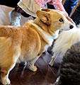

| D9―聖櫃の悪魔操者―II (電撃文庫) | |
| 上野 遊 | |
| (2015) | |
本書（電子版）に掲載されているコンテンツ（ソフトウェア／プログラム／データ／情報を含む）の著作権およびその他の権利は、すべて株式会社ＫＡＤＯＫＡＷＡおよび正当な権利を有する第三者に帰属しています。
法律の定めがある場合または権利者の明示的な承諾がある場合を除き、これらのコンテンツを複製・転載、改変・編集、翻案・翻訳、放送・出版、公衆送信（送信可能化を含む）・再配信、販売・頒布、貸与等に使用することはできません。
断章Ⅰ
その日、聖都ニューヤードは異様な高揚に包まれていた。
夜明け前から人が集まり始めた目抜き通りは、午前八時を過ぎた頃には立錐の余地もないほどに混雑し、人々の吐く息で頭上が白く煙って見えるほどだった。
空はあいにくの曇天。ちらちらと名残雪の落ちてくる日であったが、聖都で一番の大きな通りに集まった人々は、肌寒さなどものともせず、むしろ異様な熱気と興奮に包まれている。
聞こえてくるのは高らかな賛美歌。肩を組んだ男たちがジョッキを片手に歌っている。アップテンポにアレンジされたそれは軍歌のようにも聞こえた。
通りに面した建物の窓が開き、顔を覗かせた住人が眼下の喧噪、新年祭すら上回る凄まじい人出を目にして驚き、すぐに納得する。
今日は一日こんなものだろう、いや、一日で済むわけがない。向こう一週間はお祭り騒ぎが続くはずだ。だって数十年に一度の慶事なのだから。
目抜き通りに鋭い笛の音が複数、響き渡った。
通りを埋める人の波が割れていく。割っているのは教会騎士団だ。
銀糸を織り込んだ礼装用の外套を纏い、精緻な彫刻を施した剣を吊った騎士たちは、人々を左右に追いやると、そこに棒を立て、通りの端から端まで一直線にロープを張って行く。そうして目抜き通りの中央に、幅五メートルほどの道を造った。一時間ほどかけてその作業を終えると、騎士たちはロープの内側に一定間隔で並び、直立した。
人々が自然に静まっていく。やがて目抜き通りの南側から、騎士団長が馬に乗って現れた。それに続いて高位聖職者たちを乗せた自動車が数台現れ、民衆に手を振りながら通り過ぎていく。日頃は目にすることのない天上人たちの姿に、しかし住民はたいした興味も見せない。
市民の無礼な振る舞いに、車上の貴人たちは苦笑を浮かべるのみだ。本日の主役は彼らではない。今日、聖都の内外から集まった数万の人々の目当ては、民衆が一目その姿を拝みたいと願ったその相手は、
「来たぞ！ 新教皇猊下だ！」
興奮し過ぎた若者がロープから身を乗り出して叫んだ。警護の騎士がすぐに寄ってきて若者を落ち着かせながら押し返す。
目抜き通りに無数の蹄の音を響かせて、四頭立ての馬車が入ってきた。
馬は全て白馬。引き綱は黒。特別製の馬車も黒。磨き上げられた漆の車体に、手を振って迎える若者たちの姿や、感極まって涙を流す老婆の顔が映り込む。
無蓋の馬車。そのひときわ高い席に座るのは、まだ女になりきらぬ年頃の娘であった。髪は稲穂のように豊かでまばゆい。頰は桃のよう。肩は象牙のよう。
「あれが教皇ディアドラ様か......」
「お美しい......」
民衆からため息が漏れる。
細かいことを言えば、まだ彼女は教皇ではない。この後、中央管理教会に入り、戴冠するまでは、彼女はただの村娘のディアドラである。とはいえそれは単なる手続きの問題。彼女がその身に〝天印〟を宿し、〝楽園の指輪〟を用いて奇蹟を起こしたことは、既に複数の枢機卿が確認を済ませ、集まった民衆の誰もが知っていることであった。
「まだ十四？ 十五だったか？ なんとも落ち着いておられる」
「さすがは聖女様だ......」
ディアドラは微笑を湛えて目抜き通りを進んでいく。
世紀の瞬間に立ち会った人々は、おそらく二度と間近に見ることはないであろう、教皇の姿を目に焼き付けようとする。
「ディアドラ様、ばんざーい！」
「ディアドラ様、ばんざーい！」
誰かが声を上げ、誰かが唱和した。
ディアドラが頰に微笑を浮かべたまま通り過ぎていく。
その目が全く笑っていないことに、一体何人が気付いただろうか。
新教皇を乗せた馬車は中央管理教会の敷地内へと入っていく。
戴冠式そのものは非公開である。人々は教会前の大広場に集い、式のつつがない終了を願いながら待つ。
ディアドラが馬車を降り、教会前の階段を登り始めたその頃、街外れのとある小さな教会に隣接する孤児院で、牧師ジーゲンは子供たちに向かって声を張り上げていた。
「並びなさい！ 全員に行き渡る分はちゃんとあるから！ ケンカする子には先生の必殺剣が炸裂しますよ！」
食堂を走り回る子供たちは、ジーゲンの脅しを鼻で笑って騒ぎ続ける。屋内であっても吐く息が白い。炭代にも苦労する貧乏孤児院であった。
新教皇の即位に伴い、中央管理教会は都内の全ての孤児院、救済院へと施しを行った。ジーゲンが任されているこの小さな孤児院にも、教会からたくさんの服や食べ物が届いている。子供たちを喜ばせたいと思ったジーゲンはすぐに菓子を配ることにしたのだが、それが失敗の素。生まれて一度も見たことのない、高価でおいしそうな菓子を目にした子供たちの反応は、興奮を通り越してなにやら略奪めいたものになりつつあった。
それでもどうにかこうにか全員に菓子を行き渡らせ、さあみんなで仲良く食べようか、というところで、ジーゲンは子供の数が足りないことに気付いた。
「せんせー、どうしたの？」
子供たちはジーゲンを先生と呼ぶ。読み書きを教わっているからだ。
「ロランとアイシャどこに行った？」
ジーゲンの問いに子供たちは一斉に首を振り、
「しらなーい」
「それよりたべていーい？」
「せんせいおしっこー」
「ふじゅんいせいこうゆうってやつじゃねーのー？」
ジーゲンはにやにや笑いを浮かべた最後の子供に拳骨を落とし、尿意を催した子をシスターに任せると、ロランとアイシャを捜すために講堂を出た。
ロランは聖都の正門脇に捨てられて、アイシャは行商をしていた両親が悪魔に殺されて、それぞれ孤児になった。孤児院の子供たちは遅くとも十歳までにはどこかに貰われて行くものだが、この二人に関しては多分無理だろうとジーゲンは思っている。アイシャは女の子にしては暴れん坊に過ぎるし、ロランの方はよく言えばおとなしい、悪く言えばひょろひょろして頼りない男の子だ。ジーゲンはいずれ二人を自分の養子にするつもりでいた。
貧乏孤児院は建物も貧乏である。要するに狭い。なのにそのどこにも二人はいなかった。
「さて、どこに行ったのやら......」
菓子を配ったときには確かにいた。不純異性交遊──はないだろう。二人ともまだそんな歳ではないし、分別のあるいい子たちだ。二人がどうして、どこに行ってしまったのか、ジーゲンには全く見当がつかなかった。こっそりいなくなるというのがもう解せない。
それでもとにかく探して回る。孤児院にいなければ隣の教会だろうか、と考えてジーゲンは表に出た。同じ敷地内に建つ教会まではほんの十数歩の距離だ。
教会の裏口から牧師の控え室をのぞいたが無人だった。物置小屋にはネズミがいた。そのまま建物の裏を通って反対側へ抜けると、墓地の隅にロランとアイシャが並んで座っていた。こちらに斜めに背を向け、ちらりと横顔が見えた。新教皇戴冠のめでたい日に、子供二人が深刻な顔で墓地に座り込んでいる様はジーゲンを不安にさせた。
あんなところで何を？ ジーゲンは二人を脅かさないよう、静かにゆっくりと近づいた。
ジーゲンが枯葉を踏む音に気付いたのはアイシャだった。振り向き、薄汚れた髪を振り乱して「あ」。大人に見つかって焦るような様子はない。ということは、悪いことはしていない。ジーゲンは安堵して、白いため息をついた。
「二人とも、こんなところで何をしているんだ？ みんな食堂で待ってるよ」
「ごめんなさい」
ロランが背を向けたまま言った。
ジーゲンは近頃とみに痛むようになった腰をかがめ、ロランの背中越しにのぞき見た。
「これは......」
ロランは木の板で墓地の隅に穴を掘っていた。穴の脇には一見ボロ雑巾のような──瘦せ衰えた老犬。老犬はロランの一張羅のコートに包まれていた。その前には先ほど子供たちに配った菓子が──御下賜の焼き菓子が置かれていた。焼き菓子の端が崩れている。老犬の口が菓子で汚れていた。
ジーゲンは手を伸ばして老犬に触れた。既に冷たくなっていた。
ロランは墓を掘っていたのだ。
「今朝、散歩してて見つけたんです。栄養のあるもの食べさせたら元気になると思ったんだけど......」
ぼそぼそと話すロランの目はまっ赤だった。老犬の死を心から悲しんでいるのが分かった。何もしてやれなかった自分を責めているのが分かった。
「ああ」とジーゲンは嘆息した。自分はこの子を見誤っていた。何がひょろひょろして頼りない男の子だ。この子はこんなにも強く優しい。自分だって満足に食べていないのに、もう二度と食べられないかも知れない高価な焼き菓子を、どう見ても助かるはずのない老犬に惜しみなく与えてしまう。
悪魔が蔓延り、突然の死が当然のこの世の中で、これほどの愛に溢れた行いのできる人間がどれほどいるだろうか。
ジーゲンはロランとアイシャを抱き寄せ、強く抱いた。
「先生？」
「......この犬は、最後に美味しいものを食べられて幸せだったでしょう」
風に乗って歓声が聞こえてきた。戴冠式が無事に終わり、新教皇ディアドラが民衆の前に姿を見せたのだろう。
〝天印〟を持つ教皇は奇蹟の力を持つ、と言われている。そんなものは教会のお偉いさんが権威付けのために吹聴しているだけのまやかしだ──本物の奇蹟とは、今ロランが老犬に向けたような無償の愛と優しさを言うのだ、とジーゲンは思った。
けれど牧師ジーゲンは......かつては教会騎士であり、その独特の剣術で無双のジーゲンと恐れられた老人は知っている。
この子たちの優しさが、この子たち自身を幸せにすることはないだろう。
世の中はそれほど甘くも都合よくも、正直にもできてはいないのだ。
この子たちはその優しさのために騙され、傷つき、奪われるだろう。
「ああ......」とジーゲンは呻き、そして祈った。
たった一度だけでいい。この子たちがもっとも辛く苦しくあるときに、誰かが救いの手を差し伸べてくれることを。
「はーい。お待たせー」
ファムがテーブルの中央に鍋を置くと、鍋から真っ白い湯気と共に食欲をそそる香ばしい匂いが立ち上り、粗末な小屋の中を満たした。鍋の中身は昨日の道中で仕留めた鳥を捌いて、芋と一緒に数種類の香辛料で煮込んだスープだ。
ファムは具だくさんのスープを深皿に取り分け、ソーマとメルヴィーユの前へ置いた。
「冷めないうちに召し上がれ」
「ああ」
頷き、ソーマは木のスプーンで鳥肉を掬い、スープと一緒に口に入れる。
「......うまいっ！」
「っ！ 急に叫ぶからびっくりしたじゃない」
「悪い。でもこれ本当にうまいぞ」
絶妙に配合された香辛料が鳥の臭みをすっかり消し、さして長時間煮込んでもいないはずなのに肉は柔らかい。肉の旨味が染み出したスープはあっさりとしていながら複雑に深いコク。一緒に煮込んだほくほくのお芋は中まで味が染みている。一口食べれば体が温まり、二口食べれば心が温まる。まさに至福の一皿であった。
「街の外でこんなちゃんとした料理が食べられるとは思わなかった」
「料理ってほどのものじゃないわよ。ただ材料煮ただけだし」
と謙遜するファムは、しかしまんざらでもない様子で微笑んだが、
「うむ。これなら儂の召使いとして使ってやらぬこともない」
「......あんたは食うだけの癖になんでそんな偉そうなのよ」
メルヴィーユの上から目線の物言いに半眼で突っ込む。
「フ。乳と同じく貧相な脳味噌では理解できないようじゃな。ならば教えてやろう。儂は偉そうなのではない。偉いのじゃ」
「はあ!? 誰が貧相ですって！ そんなこと言うなら食べさせないわよ!?」
ファムが立ち上がってメルヴィーユの皿を取り上げようとする。が、それより早くメルヴィーユは自分の皿を持ってすうっと浮かび上がり、そのまま天井付近に滞空を始めた。
「あ、こら、ずるい！ 降りてきなさいよ！」
「お断りじゃ。悔しかったらここまでおいで」
「言ったわね!?」
そう答えるが早いかファムは椅子に飛び乗り大ジャンプ。
「なぬっ！」
驚くメルヴィーユの手から皿が飛んだ。ソーマが慌てて手を伸ばし、受け止めようとする。
その間にファムはしてやったりの顔でメルヴィーユを捕まえて諸共に落下、二人はもつれ合って床を転がった。
「おのれ！ やりおったな板っ切れ！」
「へっへーん！ 人間様を舐めるからこう言う目に遭うのよ！」
「ふん。まだ負けてはおらぬわ！」
「受けて立つわよチビ悪魔！」
罵り合い、互いのほっぺをつねってもちもち引っ張りながら二人は狭い小屋の床を転がる。
と、二人の頭上に不意に影が差した。
「む？」
影の正体はメルヴィーユが放り投げた皿を受け止めたソーマであった。ソーマは皿をテーブルに置くと床にしゃがみ込み、空いた両手にそれぞれメルヴィーユとファムの頭を摑んで、
「食事中に暴れるんじゃない！ 食べ物に埃が入る！」
「ふぎゃっ！」
「はうう......」
怒声と共に二人の額を激突させたのだった。
「まったく、朝っぱらからドタバタと。他に利用者がいたら追い出されてたところだぞ......」
街道沿いには旅人のための無人の休憩・宿泊所が設けられていて、ソーマたちが今いる三角屋根の掘っ立て小屋も、そうした休憩所の一つだ。
こうした休憩所は、基本的には雨風を凌いで寝るだけの簡素な造りだが、ソーマたちが今いる休憩所は、近くに大きな川が流れている関係か、ちょっとした炊事場が備えてあった。おかげでソーマたちは久しぶりにきちんとした朝食を取れたのであった。
食事を終えたソーマは壁に貼られた地図に目をやった。本日の道程を確認するつもりだったのだが、不意に視線が現在地とは全く関係のない、地図の左端に引っかかった。
アラド市。
「......」
それはソーマの故郷であり、既に存在しない街の名前である。
アラド市は一年と少し前に悪魔の群れに蹂躙され、壊滅した。数少ない生き残りも別の街に移り住み、アラドは今は、人っ子ひとりいない廃墟と化している。
そしてその原因となったのがソーマの一回り年上の兄、トーマ・ノイン・スオウである。
アラド市始まって以来の天才、聖都ニューヤードの大学を首席で卒業したトーマは故郷に戻り、新進気鋭の考古学者、悪魔学者として研究を始めた。そのトーマがある日、一つの実験を行った。
〝天使〟の召喚実験である。
千年前の〝終末の厄災〟において、人々の祈りに応えて天より使わされた救いの手。トーマはそれが実在すると確信し、今再び天使たちを地上に降臨させようと考えたのだ。
千年前に世界を埋め尽くす悪魔を打ち破り、人々を滅びから救った天使たち──もしもそれが再びこの世に現れたなら、悪魔の脅威にさらされる人々にとって大きな助けとなっただろう。
だが、現実はそううまくは行かなかった。
天使が召喚されるはずの魔法陣から出現したのは、悪魔の群れだったのだ。
街中に突如出現した悪魔の群れを止められる者はいなかった。アラドは一晩にして壊滅する。
この〝アラド事件〟の夜、ソーマは幼なじみであり初恋の相手であるレンリ・クロアを失い、ソーマもまた、トーマが喚び出した悪魔の手にかかって瀕死の重傷を負った。
瀕死のソーマを救ったのは、一人の美しい悪魔であった。
少女悪魔メルヴィーユ──彼女と契約をし、人間でありながら悪魔の力を使う術を手に入れたソーマは、姿を消したトーマを追って旅に出る。
トーマを見つけて、殺す。レンリの仇を取る。ソーマはそのために悪魔に魂を売ったのだ。
それが一年と少し前のこと。
そして先週、ソーマはメルヴィーユとともに、大陸中央にあるデルナの街に立ち寄った。
デルナに住む悪魔学者に話を聞き、トーマの行方を追う手掛かりを得ようと考えたのだ。
道中、乗っていた列車が悪魔に襲われるというアクシデントはあったものの──ファムと知り合ったのはこのときだ。ファムはソーマの荷物を盗もうとしてソーマに捕まった──ソーマとメルヴィーユは無事にデルナに到着し、悪魔学者の協力を取り付けることに成功する。
だがこの悪魔学者の正体は悪魔だった。悪魔が本物の悪魔学者を密かに殺して成り代わっていたのだ。
悪魔は言葉巧みにソーマを騙し、ソーマが持っていたペンダントを奪おうとした。レンリの形見でもあるそのペンダントはクロア家に代々伝わる秘宝、〝始祖アダムの遺産〟の一つであり、所有者に無限の英知を与える秘宝〝賢者の石〟だったのだ。
デルナの街に住んでいた悪魔は賢者の石の力を使って自身をより強大な悪魔に作り替える。だが、石の力が暴走して人でも悪魔でもない、意識もなく破壊と殺戮を続けるだけの怪物に変化してしまった。
ソーマはこの化け物に挑み、これを撃破して賢者の石を奪還した。
この戦いで力尽きてしまったソーマとメルヴィーユはデルナの街の騎士団に拘束されてしまうが、ファムの協力によって街を脱出。東へと移動を続け、途中で立ち寄った村でちょっとした騒ぎに巻き込まれたりしながら──不本意ながらこのときもファムのおかげで助かった──どうにか騎士団の追跡を逃れて今に至る。
「ソーマ？」
地図を見て固まってしまったソーマにメルヴィーユが声をかけた。
「どうかしたのか？」心配そうにのぞき込み、それからメルヴィーユはカッと両目を見開いて、
「っ！ どぶ板娘に変な物を食わされたから腹具合がおかしいのじゃな！」
「変な物とは何よ!? あんたもうまいうまいって食べてたでしょうが！」
水を溜めた桶で食器を洗っていたファムが振り返って怒鳴る。
メルヴィーユがファムを「どぶ板」だの「板っ切れ」だの「下ろし金」だの「風呂の蓋」だのと呼ぶのはその体型による。ファムはお胸が残念なのだ。
「具合が悪くなるとしたらお前らがうるさいからだよ......」
ソーマはげんなりした様子で呟く。女三人寄れば姦しいとは言うが、メルヴィーユもファムも単品でも十分に姦しい。それが二人で相乗効果を生み出しているのだから姦しさは十倍である。とはいえ静かになられるとそれはそれで不気味ではある。
「んで、地図を睨んでどうしたのよ？ まさか迷子になったわけじゃないわよね」
皿洗いを終えたファムが手を拭きながら隣にやってくる。
「なるわけないだろ。街道から外れてないのに。......行き先を考えてたんだよ」
街道はこの宿泊所の脇にある川を渡ったところで二つに分かれる。一つは北上して聖都方面へ向かう道。もう一つは緩やかに南下しながら東海岸に出る道。正直どちらに進んでも変わらないような気がした。
ソーマの旅の目的はレンリの仇を取ることである。そのためにはトーマの行方を突き止めなくてはいけないのだが、トーマの足跡は全くの不明である。そこでソーマはがむしゃらに探し回るのをやめ、トーマの研究内容を調べることにした。アラドから姿を消したトーマは、今も研究を継続しているはずだ。その詳細が分かればトーマの行動を読み、先回りすることができるかも知れない──そんな目論見によるデルナ在住の悪魔学者への訪問はしかし、相談相手が悪魔に成り代わられていたという想定外の展開で頓挫してしまった。まあ悪魔学者は彼一人ではないし、他の学者のところを訪ねて協力を仰げばいいのだろうけれど。
実を言うとソーマは一つだけ手掛かり──の尻尾を摑んでいる。
ソーマは地図の方を向いたまま、横目でファムを見やった。
「ファムは行くところとかないのか？」
トーマへと続いているかもしれない手掛かりの尻尾──トーマが悪魔を喚び出すのに使った魔法陣をファムは知っている、見たことがあるらしいのだ。事情を知らない悪魔学者を訪ねて協力を仰ぐよりも、ファムが問題の魔法陣をどこで見たのか聞き出す方がトーマへ近づける──ソーマはそう期待している。
「あたし？ あたしはソーマの行くところについて行くわよ？」
ファムがそう答えた瞬間、メルヴィーユが激昂した。
「貴様！ やはり儂からソーマを奪うことが目的じゃったか！ この泥棒猫め！」
「はあ？ いらないわよこんなの」
「こんなの......」地味にショックを受けるソーマ。
「あたしの目的はソーマじゃなく、ソーマが持ってる賢者の石よ。うん、まあ、ソーマも悪くはないと思うんだけど、ちょっと子供って言うか。あたしはもっと、包み込んでくれるような頼りがいがあって、落ち着いた物腰の大人の男の人がいいなあ......なんて」
「その落とし蓋みたいな乳でもいいと言う男などどこにもおらんと思うがの」
「そうかしら？ 食っちゃ寝専門の誰かさんよりは需要あるんじゃないかしら？ 料理もできない女なんてねえ。ぶっちゃけ鍋の蓋以下？」
「......血を見たいなら最初からそう言え、人間」
メルヴィーユがすうっと目を細めた。ファムも静かに重心をずらして臨戦態勢。が、
「また喧嘩始めたら二人とも樽に詰めて川に流すからな」
ソーマの言葉に悪魔と人間の少女は素早く構えを解いて作り笑い。
「それはそうと。ファム。賢者の石なんだけど、お前は何に使うつもりなんだ？」
「それは秘密ですぅ」
とファムはわざとらしいしなを作って言う。ソーマはちょっと悲しい顔になった。
ソーマがこの質問をするのは今回が初めてではない。
デルナの街を脱出してから、今日で十日ほどになるだろうか。あれ以来、ソーマとメルヴィーユはファムと行動を共にしてきた。
ソーマはファムが知っている魔法陣の情報が欲しい。ファムはソーマが持っている賢者の石が欲しい。ソーマはファムが現役の泥棒であることを知っていて、ファムはソーマが〝悪魔憑き〟であることを知っている。そうした利害の絡んでの同行ではあるが、それでも旅は道連れ。毎日顔を合わせていれば普通は気心も知れてくる。だと言うのに、
「のう、ファムよ。その態度はあんまりではないか？」
メルヴィーユが珍しくファムを名前で呼び、真面目な声で語りかけた。
「お主がソーマに協力するしないはお主の自由じゃ。じゃがこちらはお主に協力して欲しいと思い、その理由も話した。それでお主が、儂らに情報をくれるつもりがないというならそれは仕方のないことじゃ。じゃがな。そちらは自分の事情を説明しようともせず、ただ『賢者の石を貸せ』と要求だけするのは、これは正直ずるっこいと思うんじゃが？ どうじゃろうか？」
「う......」
とファムは言葉に詰まって視線を泳がせる。
そう、デルナでは共に死線をくぐった。手を取り合って騎士団の追撃から逃れた。同じテーブルで食事をするようになった。なのにファムは自分のことは一切話さない。
それがソーマには悲しかった。
「ええっと......メルヴィーユの言うことは極めてごもっとも、全くの正論だとあたしも思う。あたし個人としてもソーマのことは信じていいかなーと思うし実際なんかあったら背中預けてもいいくらいなんだけど......」
「だけど？」
「それでも言えないことはある？」
メルヴィーユとソーマの問いに、ファムは両手を打ち合わせて頭を下げた。
「ごめん！ これはあたし一人の問題じゃないから！ でも信じて。悪いことには使わない。うん、絶対に。それは誓うから！」
「泥棒に誓われてものう......」
とメルヴィーユは微妙な顔をする。
ソーマはソーマで違うことを考えていた。
ファムは「あたし一人の問題ではない」と言った。仲間がいるのだ。仲間ではなくスポンサー、あるいは上司かも知れないが。いずれにしてもファムの背後には何らかの組織が存在する。
「やっぱり、どうしても、ダメ？」
ファムは潤んだ瞳でソーマを見つめる。「儂のソーマに色目を使うでない！」とメルヴィーユが吠えているがとりあえず無視。
「悪いけど」
ソーマはファムをそれなりには信頼している。事情さえ聞かせてくれれば、賢者の石を貸すのは無理でも、一緒に行って手助けすることはやぶさかではない。だがその背後に何らかの組織があるとなると話は違ってくる。構成員の考えと組織の考えは必ずしも一致しない。むしろ乖離していることの方が多い。
ファムが信頼できるとしても、その背後にある組織までもが信頼できるわけではない。ファムが騙されていいように使われている可能性だってある。
ソーマはコートの胸を押さえた。その内ポケットには携帯用の地図帳と一緒に賢者の石──ソーマにとってはレンリの形見だ──が収まっている。
「ファムもデルナで見たろ。この石は本当に危な、」
「伏せるのじゃ！」
突然、メルヴィーユが鋭く叫んだ。
「っ！」
「キャッ！」
ソーマは反射的にファムの手を引いてしゃがみ込む。反応が遅れたファムがバランスを崩して床に倒れ込んだ。その直後。
ざん！ という轟音が右から左へと通過していった。小屋の中に突風が吹き荒れ、メルヴィーユとファムの長い髪が逆巻いてすぐに落ちる。耳の奥に圧迫感があった。急激な気圧の変化。一体何が起こったのかとソーマは顔を上げる。
「は？」
壁に斜めの光が走ったかと思うと、壁の上半分と天井がずれ落ち始めた。ちょうど鋭利な剣で巻き藁を切ったような感じだ。と、
ざん！ ざんざん！
再び轟音が、今度は複数響き渡った。突風が吹き荒れ、壁と天井に無数の光条が走ったかと思うと、丸太組みの天井が糸を抜かれたネックレスのようにばらけ、ソーマたちの頭上へと落ちてくるではないか。
「ちっ！」
舌打ちを一発。ソーマは立ち上がろうとしていたファムを蹴飛ばしてテーブルの下へと転がすと、自身は剣を取って宿泊所の外──馬車などを止めておくために作られた、広いスペースへと飛び出した。
殺気。
抜刀する暇も与えられず、ソーマは反射的に鞘に収まったままの剣を首筋に掲げる。ガキンッ！ と金属のぶつかる重く鋭い音が耳元で生じた。死角からの攻撃を止めたはいいが姿勢が悪い。ソーマは無理に押し合わず、相手の剣をいなして横に飛んだ。再び首を狙って襲いかかる横薙ぎの一撃。上体を反らして回避しようとして、
（──長い！）
相手の間合いが予想外に広い。このままでは喉を裂かれる。
「降魔展開──〝旋風響鬼〟」
ソーマから一瞬遅れて小屋から出て来たメルヴィーユが呪文を唱えた。直後、つむじ風が生じてソーマを攫い、敵の間合いから連れ去った。
悪魔は皆、魔力を有し、それぞれに固有の異能を行使する。その中でもメルヴィーユは特殊な存在で、他の悪魔の能力を模倣し、行使することができる。
ソーマはつむじ風にもみくちゃにされながら地面に手をつき、宙返りをして体勢を立て直す。
「悪い、助かった！」
ソーマはメルヴィーユの方を見ないで言う。よそ見のできる状況ではなかった。
正面──街道の宿泊所から少し離れたところに、なにやら妙な得物を担いだ若い男が立っていた。
「あれは剣......なのか？」
ソーマは思わず首を傾げてしまう。男の得物は確かに剣の形をしてはいた。片刃で全体がゆるく湾曲した刀──太刀と呼ばれる類の剣なのだが、しかしその長さが尋常ではない。男の背丈とほとんど一緒、百八十センチ近くあるのだ。こんな長さではまともに振ることすら難しいだろう。実用性を考えたらあり得ない長さである。それに加えてさらに奇妙なところがあった。太刀の峰の部分に、時計の内部構造のような機械部品がびっしりと並んでいるのだ。ただの装飾には見えないが、用途は全く窺い知れない。
「ちょっと！ 何なの！ 何が起こったの!? 埋まっちゃって出られないんだけど！」
瓦礫の下からファムのくぐもった声が聞こえてきた。
掘り出してやりたいのは山々だったが、今はその余裕がない。ソーマが一瞬でも隙を見せれば、妙な太刀を持った男は即座に斬り掛かってくるだろう。こうして十メートルほどの距離を置いて対峙していても、男の殺気は肌を刺さんばかりに伝わってくる。
「......」
ソーマは静かに剣の柄に手をかけた。すぐには抜かず、そのまま男を観察する。
若い。ソーマより年上なのは間違いないが、歳はそれほど離れてはいないだろう。せいぜい三つ上、二十歳といったところか。灰色の髪を短く刈り上げて、丸い眼鏡を掛けている。こちらをにらみ付ける両目はそれ自体が鋭利な刃物のように細く、鋭い。
男は裾に青い線の入った白い外套を纏っていた。裾から見える靴も白い。汚れやすく旅には不向きなそれは、教会の制式装備である。ならばこの男は騎士なのか。それにしては単独行動が解せない──いや、もう一人いる。
男の背後。ソーマたちからは少し離れたところに真っ白いフード付きのマントで全身を隠した小柄な──メルヴィーユよりもさらに小さいのではないか。子供だ──人物がひっそりと付き従っている。あれも騎士なのだろうか。とてもそんな風には見えないが。
「油断するでないぞ」
メルヴィーユが言わずもがなの注意をしてくる。ソーマは小さく頷いた。
無言の対峙。背後の水音がやけに大きく聞こえた。宿泊所のすぐ側には幅十メートル、深さ三メートルほどの断崖があり、その下を川が流れている。つい先日雨があったばかりで、川は増水し、流れも激しくなっているようだ。ソーマはその川、断崖を背にして男と対峙している。断崖に追い込まれたかのような構図だが、ソーマに焦りはない。
「......小屋を解体したのはお前か？」
「......〝悪魔憑き〟だな？」
ソーマの質問には答えず、男は逆に質問を返してきた。
「だったらなんだ？」
「死ね」
「ッ！」
男の踏み込みは恐ろしいほどに速かった。警戒していたにもかかわらず反応が遅れる。
ソーマの間合いの遥か遠くで男は太刀を振るった。垂直に振り下ろされる白刃はまさしく雷光の一撃。後少しでも反応が遅れていたら、ソーマは脳天から真っ二つにされていただろう。
風を裂いて振り下ろされた刃をぎりぎりで回避してソーマは踏み込んだ。得物が大きければ大きいほど手元は不如意になる。食らえばただでは済まない太刀も懐に入ってしまえば持て余すだけ──だが太刀を繰る男も自分の得物の弱点は当然わきまえているはずで、間合いを保つためにソーマの踏み込みに合わせて下がろうと、
「っ!?」
ソーマの予測は完全に外れた。男はその場で腰を落とすと、刃を返して太刀を斜めに振り上げてきたのだ。
牽制の、躱されることを想定していたソーマの剣が男の腕を浅く斬り裂く。それと引き替えに男はソーマから大きな隙を引き出した。振り上げられた太刀は甲高い笛のような音を立てながらソーマの脇腹へと食らいつこうとする。ソーマはとっさに脚を上げ、腿で──腿のホルダーに収めたナイフで太刀を受けた。男は構わず太刀を振り抜く。ソーマは逆らわずに跳び、一旦相手の間合いから離れる。見下ろすとホルダーがずたずたに裂け、中のナイフにも大きな傷がついていた。大質量を叩き付けられた腿が痺れている。回復を待つ暇などあるはずがなかった。太刀を担いだ男が疾風のように踏み込んでくる。
ソーマは抜いた剣を逆手に持って太刀に合わせる。ギャリン！ 耳が痛くなる金属音を響かせて太刀筋をそらす。小さな隙。ソーマは突きで男の脇腹を狙う。男はソーマの攻撃を無視。太刀の柄でソーマのこめかみを殴ろうとする。
「ちっ！」
そのままでは相打ちになると判断してソーマは引いた。
妙だ、と思う。男の戦い方はひどく奇妙だ。男はかなりの達人だ。実戦経験も少なくないはずだ。動きで分かる。経験豊富な歴戦の騎士。それがなぜか、太刀の間合いの広さを利用しない。わざわざこちらの間合いに踏み込み、ハイリスクなカウンターを積極的に狙ってくる。
その定石から外れた奇妙な剣術にソーマは戸惑う。
「くっ！」
重い一撃を受け止めて、ソーマははじき飛ばされそうになる。なんとか耐えて押し合いに持ち込む。相手が押せばこちらは引き、相手が引けばその分だけ押し込む。互いの武器を封じた形、このままでは千日手の格好だが、しかしソーマにはメルヴィーユが付いている。
「メル！」
「任せよ！ 降魔展開──〝経津主〟」
メルヴィーユが高らかに呪文を唱えた。ソーマの剣が鈍く輝く。
そのとき、男の後ろに控えていた子供が動いた。
子供がすっとフード付きのマントを脱ぐ。視界の端にそれを捉えてソーマはぎょっとした。マントの下から現れたのはまだ年端もいかない少女──なのだろう、おそらく。断言できないのは、その少女が顔の半分を覆うような大きな、魔法陣を染め抜いた目隠しを着けていたからだ。細い首には短い鎖の付いた首輪。縛めはそれだけではない。両手は手錠でつながれ、雪のような白い肌は全身、きつく拘束具が食い込んでいる。
視界はふさがれて何も見えないはずなのに、しかし少女はソーマたちの方を向いた。その幸薄そうな唇が開き、
「......arkas arkas......aharos on ioyay......」
聞いたこともない不思議な言語で、少女は唐突に歌い始めた。
「......irigaks at awim......」
荘厳な、どこかもの悲しい調子の歌が響き渡る。
あまりのことに面食らうソーマの前で、さらに奇妙なことが起こり始めた。
歌う少女の周辺に、まばゆい金色の粒子が漂い始めたのだ。どこかで見覚えがある──考えて、ソーマはその正体に思い至った。メルヴィーユだ。メルヴィーユが実体化するときに発生する光にそっくりなのだ──そしてそう考えたところでソーマはそれに気付いた。
少女の背中から生える、一対の小さな白い羽根。それはまるで──。
「ソーマッ！」
メルヴィーユの切羽詰まった叫びと同時、ソーマの剣を握る両手にかかっていた負荷が消えた。敵が剣を引いた──のではない。逆だ。
目の前で信じがたいことが進行していた。男の太刀、その峰に並んだ機械が少女の旋律と同じリズムで作動し、鈍く発光した刃がソーマの剣を切り裂きつつあったのだ。太刀は熱したナイフをバターに当てたかのように、迅速に切り進んでくる。
「っ！」
魔界の剣鬼〝経津主〟の力を付与されたはずの剣が切断されていく。あり得ない出来事に、しかしソーマはよく反応した。剣が完全に両断される前に素早く地に伏せ、自身を両断するはずだった太刀筋から逃れたのだ。しかし当然ながら敵の攻撃はそれだけでは終わらない。男は刃を返し、伏せたソーマ目がけて太刀を振り下ろす。ソーマはみっともなく横に転がって避けた。振り下ろされた太刀が踏み固められた地面を冗談のように斬り裂く。
「akomk akims......akayazia......ya zina kyinim......」
少女の歌は続いている。
連続して振り下ろされる太刀をソーマは必死に避け続ける。だが相手の剣を受け流さず、ひたすら避け続けることなどできるはずもない。男の方もそれを狙っていたのだろう、ソーマはあっという間に断崖に追い詰められてしまった。背後で激しい水音がする。
悪魔の力を使えば水の上を歩くことなどたやすい。相手の能力が分からない以上、無理に戦わずに逃げるのも手ではあるが......。
「......」
ソーマはちらりと宿泊所を見やる。自分とメルヴィーユだけなら川を渡って逃げられる。が、それではファムを見捨てることになってしまう。ここは踏ん張るしかない。と、
ひゅ、と空気が鳴った。
「え？」
あまりに切れ味がよすぎる刃は、人に痛みを感じさせないと言う。
「──うああっ！」
剣を握った自分の右手が目の前を飛んでいくのを見るまで、ソーマは手首を斬り落とされたことに気付いていなかった。宿泊所に意識を向けたほんの一瞬の隙。それまでの荒々しく強引な攻めが噓だったかのような、男の鮮やかな一閃であった。
まるで何かの標本であるかのようにきれいな断面を晒して、ソーマの右手が宙を舞う。一拍遅れて切断面から大量の血が噴き出し、強烈な痛みと酩酊感とを引き起こした。
「ソーマ！」
メルヴィーユの悲鳴のような呼びかけ。ソーマは答えられない。瞬時に大量の血を失ったことでショック状態に陥り、仰向けに倒れて身じろぎもできずに断崖から川へと転落する。
「ソーマ！ むっ！」
反射的にソーマを追いかけようとしたメルヴィーユだが、男が踏み込んできたために行動を中断。飛翔して、敵の太刀が届かない上空へと退避する。そこから見下ろし、メルヴィーユは青くなった。ソーマが流されて行くその先、五十メートルも行かないうちに川がふっつりと途絶えていたのだ。滝である。
「く......」
メルヴィーユは八重歯で唇を嚙んだ。メルヴィーユの能力は自分一人では使えない。契約者であるソーマを媒介にしなければ発動しないのだ。そのソーマが意識を失ってしまっては、メルヴィーユには空を飛ぶことぐらいしかできない。
「............」
男が上空を見上げ、メルヴィーユを睨み付けた。ソーマに向けたのと同じかそれ以上の明確な殺意、敵意──恨み。危機。絶体絶命の。
「......ふん。儂のしもべを退けたくらいでいい気になるでないぞ、人間」
なるべく挑発的に聞こえるように言いながら、メルヴィーユはゆっくりと地上に降りた。男は無言でメルヴィーユを見ている。メルヴィーユの能力がはっきりしないから警戒しているのだろう。まさかメルヴィーユが一人ではなんの戦闘力もないなどとは思ってもいないのだ。メルヴィーユはそこにつけ込ませて貰うことにした。
「我が魔法の神髄を見せてやろう............たあっ！」
じっくりと溜めを作り、メルヴィーユは突然両手をパチンと打ち鳴らし、その場でくるりとターンした。瞬時にメルヴィーユの服がゴシック風のドレスから透け透けのベビードール一枚の扇情的な姿に変化。
「な!?」
メルヴィーユのあまりに予想外な行動に男は面食らい、一瞬だが思考が停止する。
「今じゃ！」
メルヴィーユはその一瞬の隙を突いて飛翔し、斬り飛ばされたソーマの右手を回収すると、全速力で川下に向かって飛ぶ。回収した右手はまだ温かい。
「ソーマ......。無事でいるのじゃぞ......」
祈るように呟きながら、メルヴィーユはソーマの右手を抱きしめて飛んだ。
（......この状況って......もしかして、めちゃくちゃやばい？）
崩れ落ちた小屋の下敷きになってテーブルの下に閉じ込められていたファムは、ソーマと若い男が戦っている間に自力で脱出していたが、すぐには飛び出さず、瓦礫の山となった小屋の陰で様子を窺っていた。
襲ってきたのは騎士であった。狙いはソーマであるらしいが、騎士──中央管理教会の人間であるならファムにとっても敵だ。ソーマには幾度も助けてもらった恩がある。それでファムはソーマの援護をするために物陰に潜んでじっと隙を窺っていたのである。
......のだが、
ソーマと若い騎士の戦いにはファムの割り込む余地など全くなかった。二人とも速すぎて、ファムには目で動きを追うのが精一杯だったのだ。
戦闘は終始若い騎士が押していた。ソーマは人間相手の戦いはあまり得意ではないのかも知れない。それにしても若い騎士の技量は凄まじいものがあった。それでも悪魔憑きの力があるソーマが勝つだろうとファムは思っていた。だがそうはならなかった。
ソーマは右手を断ち切られて崖から転落し、流れに吞まれた。続いてメルヴィーユがソーマの右手を回収してソーマの後を追い、結果、ファムは一人取り残されてしまった。正体不明の危険人物の前に。一人きりで。自問するまでもなくめちゃくちゃやばいに決まっている。
若い騎士は断崖のギリギリに立ち、ソーマが流され、メルヴィーユが飛び去った川下を見やっている。
「......逃がしてしまったか」舌打ちを一つして、若い騎士は少女の方へと振り向き、「もういい。やめろ」
少女がぴたりと歌をやめた。
それまで意識の外にあった川の音が戻ってくる。ファムは全身にじっとりとした汗をかく。
（どうしよう......戦って勝てるわけないし......）
かといって逃げるのも分が悪い。宿泊所の西に少し行けば深い森が広がっているが、森に逃げ込むためには若い騎士と少女の前を通らなくてはいけない。身の軽さには自信があるし、森の中なら姿を隠す方法はいくらでもあるけれど、どう考えても森に逃げ込む前に捕まる。あるいはバラバラにされる。ソーマたちと合流......は考えるまでもなく無理だ。
となれば残るはじっと息を潜めて隠れているだけ。うまく行けば騎士はこちらの存在に気付かずにこの場を立ち去ってくれるかも知れない。
ファムは音を立てずに大きく息を吸った。緊張にがたがた震えそうになる全身を意思の力で押さえ込む。無になるのだ。完全に気配を消すのだ──その試みは成功した。が、
「出てこい。もう一人いるのは分かっている。先ほど何か喚いていただろう」
バレバレだった。
「......うう」
ファムは観念して立ち上がり、ゆっくりと若い騎士の前に出ていった。まだ大丈夫。この騎士はソーマを狙ってきたのであって、こちらの素性がバレているわけではない。なんとか口八丁で誤魔化し、後で隙を見て逃げ出せばいい。ファムはそんなことを考えつつ騎士と目を合わせた。
（これは......また......）
細く鋭い薄氷のような目──荒廃しきった騎士の目にファムは思わず息を吞んだ。一体何を見てきたら、こんな目付きになるのだろう。
騎士はその荒んだ目をさらに不愉快そうに細めてファムの方へと近づいてきた。
「え？ ちょ、何──!?」
戸惑うファム。騎士の足が速まる。その両腕が太刀の柄を摑み、
「ッ！」
まさかと思うファムの頭上に、騎士は無言で必殺の刃を振り下ろした。

「......マ、ソーマ......ソーマ！」
途切れがちな意識に悲鳴のような声が突き刺さる。全身が真冬のように冷え切っているのに、一部分──右腕だけが焼けた鉄に押し当てたよう。痛みと熱さがない交ぜになった感覚はソーマに途方もない苦痛を与えたが、しかしそのおかげで意識が戻ってきたのも事実だった。
「......う」
目を開ける。霞む視界の中心にメルヴィーユの姿があった。メルヴィーユの背後には白い石の散らばる河原。水音は穏やか。滝から落ちて、かなり流されたのだろう。ソーマは川岸の岩に引っかかって止まり、メルヴィーユが細腕でソーマを水から引き上げようとしていた。
「ソーマ！ 気がついたんじゃな！」
メルヴィーユは大きく瞬きをすると、気丈に表情を引き締めて、
「ちょっと待っておれ。すぐ治してやる」
メルヴィーユは左手でソーマの右腕を、右手でソーマの右手を持ち上げ、断面を向かい合わせにした。
「ゆくぞ、気を失うでないぞ」ソーマに注意を与えてから、「降魔展開──〝縛められたる知の巨人〟」
「──っ！」
メルヴィーユが唱えると、ソーマの右腕の切断面から激しい炎が吹き上がった。同時にソーマは全身を硬直させ、声も出せずにあえぎ始める。
〝縛められたる知の巨人〟は再生能力を持つ悪魔の中でも特に強い力を持つ。同じ再生能力を持つ〝吸血鬼〟では手に負えないような重傷も、〝縛められたる知の巨人〟であれば修復可能なのだ。ただし、強力な分負担も大きい──〝縛められたる知の巨人〟を使った後、ソーマはしばらく身動きすらできなくなる──ので、本当に危険なとき、致命傷を負ったときにしか使わない。これを使うのは今日で二度目──一年前に、兄トーマが喚び出した貌のない悪魔に心臓を貫かれたとき以来の発動であった。
「──ッ！ あ、あ......あぁ......っ！」
「耐えるのじゃ。もう少しじゃ」
脂汗を垂らしてソーマがあえぐ。メルヴィーユはソーマが気絶してしまわないよう──意識が途切れたら降魔展開も解除されてしまう──ソーマを励ましながら術を制御する。
ほどなく、ソーマの右腕は元通りにつながった。ソーマが指を動かし具合を確かめるのを見届けると、メルヴィーユは〝縛められたる知の巨人〟を解除した。
「く......うっ......」
「無理をするでない」
すぐにも動こうとするソーマを、メルヴィーユが優しく押さえ込んだ。
「怪我は治したが、強すぎる降魔を使った反動がまだ収まっておらんはずじゃ」
それはソーマも分かっていた。分かっていたがじっとしているわけにはいかない。
「大丈夫じゃ。滝に落ちた後にかなり流されたからの。すぐには追いつかれないはずじゃ。もうしばらく安静にして、」
ソーマは首を微かに振った。
「違う......ファム......が......」
「......」
メルヴィーユの表情が微かに曇った。
ソーマがやられて川に落ち、メルヴィーユはそれを追った。結果、ファムは一人あの場に残されたことになる。
「大丈夫じゃろ。教会は悪魔を滅ぼし人類を守るための組織じゃ。悪魔である儂と、悪魔憑きであるそなたはともかく、ただの人間であるファムを襲う理由はない」
その通りではあるが、しかしソーマは納得しない。以前、ファムは教会に対して嫌悪感を示していた。ただの人間が、自分たちを守ってくれる教会を嫌う理由もない。
女という明らかな偽名で活動している娘。悪魔と悪魔憑きを恐れない、それどころか利用しようとさえ考える娘。
その素性をソーマたちは何も知らない。〝始祖アダムの遺産〟を求める理由も。今まで何をしてきたのかも。
「む、そうじゃな......。あの娘もまた、儂らとは違った理由で教会に目を付けられている可能性は低くはない......」
メルヴィーユの呟きにソーマは頷き、
「無関係......だったとしても、放っては、おけ......ない。その場合は......俺たちが、ファムを......巻き込んだ、ことに、なる」
メルヴィーユはしばし口を閉ざして考え込み、それからため息をついた。
「儂としてはあんな板っ切れが斬られようが焚き付けにされようが構わんのじゃが、我が主がそう言うのでは仕方ない。助けに行かねばなるまいの......」
メルヴィーユは横を向き、口を尖らせてそう言った。言葉とは裏腹に少しほっとしたような様子が見えるのはソーマの気のせいではない。ファムを置いてきてしまったことに、メルヴィーユも心を痛めていたのだ。
一時間ほどしてどうにか動けるようになるとすぐ、ソーマは痛む体を無理に動かし川を遡り始めた。降魔を使えば水上歩行や高速移動も可能なのだが、それも体調が万全であればの話だ。無理して大急ぎで戻って、あの若い騎士の前で力尽きたら目も当てられない。ろくに戦えないソーマをあの騎士はためらうことなく切り刻むだろう。
急いでも逆効果──頭では分かっていても、しかしソーマの気持ちは逸る。ファムは無事でいるだろうか。あれから既に数時間が経過している。いまさら手遅れかも知れない。
「案ずるな。あの忌々しい板っ切れがそう簡単にやられるものか」
不意にメルヴィーユがそう言った。
ソーマは気持ちを抑えて川を遡る。
川は少しずつ細く速くなり、やがて行く手に大きな滝が見えた。街道の宿泊所の少し下流にあった滝だ。目的地まであと少しだが、落差十五メートルはあろうかという滝の周囲には道など一つもない。
「さすがにこれは能力を使うしかないか......」
呟くソーマに、メルヴィーユは首を振って、ふわりと浮き上がった。
「儂が様子を見てくる」
「気をつけろよ」
「うむ。お腹に宿ったソーマの子を産むまで死ねぬからの」
「宿した覚えはねえよ」
突っ込むソーマに微笑みかけて、メルヴィーユはすうっと姿を消した。
残されたソーマはあの騎士と対峙した場合のこと考える。
〝経津主〟を宿した剣を両断された。どういう仕掛けかは分からないが、尋常な剣と剣の勝負だとは考えない方がいい。攻撃は全て避ける必要がある。相手はかなりの手練れだ。あのデカ物の扱いにも慣れている。おまけにこちらは剣を失った。ナイフ一本で張り合うのは非常に分が悪い。相手を倒すことは考えない方がいいだろう。目的はファムの救出に絞る。もしも交戦が避けられない場合は、剣を折って無力化などという甘いことは考えず、はじめから相手の腕を狙って──とソーマが立ち合いの想定をしていると、偵察に行ったはずのメルヴィーユがスカートを風に揺らせてふよふよ降りてきた。
「どうだった？ ファムは無事だったか？ 奴は？」
「分からん」
「分からん......って」
「とりあえず登るのじゃ。体の方は大丈夫じゃな？」
「ああ」
本調子にはほど遠かったが、多少の戦闘になら耐えられる程度には回復していた。
「降魔展開──〝嘶く波濤〟」
メルヴィーユが呪文を唱える。〝嘶く波濤〟は大海を渡る駿馬の悪魔──その力を付与されて、ソーマは水上を陸地のように歩き、滝の飛沫を足場代わりに崖の上へと登っていった。
崖の上で能力を解除。警戒しながら街道の宿泊所の方へと進むと、すぐに見覚えのある景色に行き当たった。
「っ！」
ソーマは大きく息を吞んだ。解体された宿泊所──その瓦礫の前に大きなどす黒い染みがあったのだ。近づくと生臭い血の臭いが強くなる。ちょうど一人分だな、とソーマは渇いた思考を巡らせる。人を一人斬り殺すと、ちょうどこのくらいの血溜まりができる。
できてからそう時間の経っていないであろう血溜まりに、内臓の欠片と思しき肉片が幾つか落ちていた。血溜まりから森の方へ、何かが引きずられた跡や、点々とした血痕が付いている。
「獣の足跡だな......」
森に住む獣たちが血の臭いをかぎつけ、ここにやってきて、「何か」を食い漁った。
「......ファム......なのか？」
ソーマとメルヴィーユが滝に落ちた後、若い騎士は残されたファムを見つけ、ソーマの──悪魔憑きの仲間と見なして殺害した。その後、騎士は立ち去り、残されたファムの死体を森の獣たちが食い漁った。
「それでは板っ切れの持ち物がないことに説明が付かん」
とメルヴィーユが言った。ソーマは頷く。
「布切れ一つ落ちてないのは確かに変だな」
ファムは無事なのだろうか？ ではこの血溜まりはどうやって？
「少し調べてみよう。何か手掛かりがあるかも知れない」
「うむ」
二人はまず、血痕をたどって森の中に入ってみた。だが都合よく遺留品が見つかるようなことはなく、血痕は下生えの中に紛れてすぐに見えなくなってしまった。何かを引きずった跡の方はもう少し奥まで見分けられたが、結果は同じだった。
獣の追跡は諦め、宿泊所へ戻って周囲を探索。ソーマは斬り飛ばされた自分の剣を見つけた。刀身は宿泊所の側に、柄の部分は川に面した崖の側に落ちていた。
「直せない......よなあ」
鏡のような剣の断面を見てソーマは呟く。そのとき、少し離れたところを見ていたメルヴィーユがソーマを呼んだ。
「ソーマ、これを見るのじゃ」
行ってみる。宿泊所の裏の地面にタイヤ痕があった。
「四輪の車......にしては変な並びじゃな。かといって二輪でもない」
「サイドカーを付けたバイクが切り返すとこんな痕が付くはずだ。......あの騎士が乗ってきてたのか？」
周辺を調べて、見つかったものはそのくらいだった。ここで何があったのか、ファムがどうなったのかは全く分からない。
「......何もない、というのも一つの手掛かりではあるな」とメルヴィーユが言った。
「というと？」
「板っ切れは抵抗をしなかった、ということじゃ。襲われて、立ち向かうなり逃げるなりしたのであれば、その痕跡が残っているはずじゃ。それがないということは......」
「すぐに降参して捕まったのか！ それなら無事だ。生きてる！」
ソーマは表情を輝かせた。が、メルヴィーユは厳しい顔のまま、
「それでは血溜まりのことが説明できん。板っ切れは抵抗しなかったのではなく、できなかった──動きを起こす前に殺されてしまったと考える方が可能性は高い」
「でもそれだとファムの持ち物が残ってないことに説明がつかないぞ。少なくとも死体が一つあったんだ。それを獣が森の奥へと運んでいった。あの騎士がファムを殺したのだとして、持ち物は一つ残らず回収して死体は放置ってあると思うか？ そんな中途半端な後始末」
「そうじゃな。どちらにせよおかしな点が残る」メルヴィーユはソーマの指摘に頷き、「で、それを踏まえて今後の方針じゃが......」
「考えるまでもない」ソーマは地面に残ったタイヤ痕を見ながら言った。「あいつを、あの騎士を追う」
ここで何があったのか──あの若い騎士なら確実に知っている。ファムは殺されたのか、それとも連れ去られたのか。追いかけて、確かめるのだ。
そしてもう一つ、ソーマにはあの騎士を無視できない理由があった。それはあの騎士が連れていた幼い少女だ。
流れるような白銀の髪。透き通るような肌。
背中に生えた白い翼。
それはまさしく、伝説に詠われる〝天使〟そのもの。
「......トーマ......」
ソーマはかつて兄と呼んでいた男、今は仇である男の名前を呟き、ぎりぎりと奥歯を嚙みしめた。
トーマは天使を追い求めていた。そのために生まれ故郷を滅ぼし、姿を消した。トーマは天使のことを諦めてはいないはずだ。
そして今、ソーマの前に天使が現れた。
これがただの偶然であるはずがない。
手掛かりだ。いくら探しても見つからなかった手掛かりが向こうからやってきたのだ。
これを逃すつもりはソーマには全くなかった。なんとしてでもあの騎士を捜し出し、天使について聞き出さなくてはならない。そして、もし彼らの背後にトーマがいるのであれば──。
「......」
ソーマは拳を強く握った。意識を胸ポケットの賢者の石──レンリの形見にやる。待ってて。もう少しだから。すぐに仇をとるから。
ソーマは無意識のうちに低く笑っていた。メルヴィーユがその腕に体重をかけてすがりつく。
「ソーマ、逸るでないぞ」
「分かってる。俺は冷静だ。急いでファムを助けに行くぞ」
そう答えて歩き出すソーマを、メルヴィーユは不安そうなまなざしで見上げるのだった。
（照明は夜明け前の青。セットは城砦２。
天使アブデルは幕が上がる前から待機。観客席に背を向けている。
下手から騎士スレイマンが現れる）
スレイマン「こんなところにおいででしたか」
アブデル 「スレイマン殿」
※アブデル、スレイマンに背を向ける。
アブデル 「何か私に御用でしょうか？ 作戦の時間はまだでしょう？」
スレイマン「いえ、個人的な用事です。少しあなたとお話がしたい」
アブデル 「......人間と話すことなどありません。下がりなさい」
スレイマン「何故私を避けるのです？」
アブデル 「避けてなど......」
スレイマン「いるでしょう。先の軍議でも、昼食の席でも。あなたは僕と目を合わせようともしない。何故です！」
アブデル 「......私は天使です。この戦いが終われば、天に還らなくてはいけない。あなたの気持ちを受け入れるわけにはいかないのです」
スレイマン「いまさらそんなことを言うのですか！ ならば最初から僕を受け入れなければよかったのに！」
アブデル 「ごめんなさい......あなたを弄ぶようなことをしてしまって......」
スレイマン「アブデル様？」
アブデル 「頭では分かっていたのです。自分を律することができると思っていたのです。でもダメだった。あなたに再会したその瞬間、私は......」
スレイマン「再会......？」
アブデル 「っ！」
※アブデル、表情をこわばらせて数歩後退する。
スレイマン「アブデル様......？」
※スレイマン、首を傾げ、ハッと気がついて叫ぶ。
スレイマン「マチルダ！」
※スレイマンがアブデルに駆け寄る。アブデルは城壁の上に飛び乗る。
アブデル 「っ！ 違います！」
スレイマン「いいや、間違うものか。そのしぐさ、その表情。何故こうもあなたに心引かれるのか、自分でもどうしても分からなかった。妻の一周忌も迎えていないというのに、悪魔との戦いの最中だというのに、新しい恋にうつつを抜かすなど、自分は軽薄な、無情な人間なのではないかと悩んでいた。だが違った！ 僕はずっと同じ人を思っていたのだ！ 姿が変わってしまっても、ずっと君を」
アブデル 「違います！ 私は天使アブデル！ 〝終末の厄災〟を払うために天より遣わされた神界の戦士！ マチルダなどという女ではありません！」
※アブデル、翼を広げて城壁の下へと飛ぶ。セットの裏から退場。
スレイマンがマチルダの飛んだところへ駆け寄る。
スレイマン「マチルダ！ 待ってくれ！ マチルダ！」
※音響、翼を打つ音。
スレイマン「......（ため息）。行ってしまった。マチルダ......生きていた......いや、マチルダは確かに死んだはずだ。それがどうして天使に......」
（暗転）
──歌劇『愛天使』第三幕六章、天使アブデルの素顔。より
──劇作家エム・アンクによる歌劇『愛天使』は発表と同時に二つのセンセーションを生み出した。一つはその正当な場──つまり劇場とその周辺において。
主人公スレイマンを演じたのは当時気鋭の若手俳優だったジョン・クムラン。ヒロインである天使アブデル役はサリー・アンク──エム・アンクの姪でもある。それまで端役しか演じていなかったサリーの起用には批判が強かったが、彼女はその全てを演技で吹き飛ばした。最終章、「天使の昇天」での彼女の演技は劇場に詰めかけたご婦人方をことごとく落涙せしめ、ハンカチ業界は降って湧いた特需に大いに潤ったとか。これを機にサリーは一躍スターダムを駆け上がり、ファラディース一の大女優へと成長する。『愛天使』の成功でエム・アンクも大いに名をあげたが、その後のエム・アンクの著作の評価は芳しくない。これについて評論家の意見は「アンクは一発屋だったのだ」とする派と「愛天使と比べれば劣るだけで、後世の作品も悪いものではない」とする派の真っ二つに分かれる。
もう一つのセンセーションは劇場から遠く離れたところ──教会と大学で起きた。
天使アブデルは、一般的には男性型の天使だとされる。ところがアンクは『愛天使』においてアブデルを女性、それも人間が死後生まれ変わった存在である、という大胆な設定で描いた。
この設定に教会が非を唱えたのだ。
終末の厄災において魔王アリオクを打ち倒したとされる神界の軍団長──天使アブデルを女性化するなど、神と天使に対する冒瀆である、と。
教会は冒瀆罪（当時はそんな法律があった）でアンクを逮捕し、公演を中止させようとした。その動きがかえって話題を集め、宣伝の役目を果たしてしまうことになるのだが。
それはさておき、逮捕されたアンクの弁明が奮っている。彼はこう言った。
「あれは私のアイデアではない。だから私の罪を問うのはお門違いだ」
アンクはある地方を旅行した際、小さな村で奇妙な祭りを見た。
天使が悪魔を打ち倒して世界に平和が訪れる──終末の厄災をモチーフにした、それ自体は大陸のあちこちで見られる祭りだが、その村では、練り歩く天使たちが皆、女性であった。
ミカエル、ウリエル、メタトロン、サンダルフォン......世間では男性だと言われている天使たちを演じるのは、その村では若い女性に限られていたのだ。
これに興味を持った学者たちが村へ赴き、また、古い記録を精査した結果、一つの事実が判明した。
かつて全ての天使は女性だったのだ。教会の記録ですら、天使は皆、女性として描かれていた。それが変わったのは教皇カシウス一世の治世下である。終末の厄災からおおよそ二百年が経過したこの頃、教会は下部組織であった騎士団を分離独立させ、全国規模の大組織へと作り替えている。このときに教会騎士団のシンボルとして男性化された天使たちが登場し、騎士団の拡充と共に大陸全土に広まって行ったようである。
なぜ教会が天使を男性化したのか、記述は残っていないが、理由を察するのは難しくない。
当時は悪魔の活動が活発化していて、不安に苛まれていた人々は「自分たちを守ってくれる強者」を求めていた。それを受けて天使たちは旧来のたおやかな乙女ではなく、力強く逞しい戦士へと変貌させられたのである。
天使の性別についてはこれで判明した。アンクは（本人にその意思はなかったにせよ）一つの埋もれた真実を見つけ出し、世に知らしめたのである。
では『愛天使』の中核をなすもう一つのアイデア──「天使は人間の生まれ変わりである」についてはどうだろう。こちらについては何の記録も出てこなかった。まあ当然のことではある。だが本当にそうだろうか？
死に別れた恋人たちが生まれ変わって再び巡り会う、という物語自体はそう珍しいものではない。一つの類型であり、王道と言えよう。
だが、「人間が生まれ変わって天使になる」とするのは話が別だ。
天使は教会の象徴だ。天より遣わされた、神聖にして高位の存在である。人間が天使になれる、と言うのは挑戦を通り越して冒瀆的な発想である。少なくとも当時はそう考えられていた。
当時の評論家がエム・アンクについてこう書き残している。「彼はおおよそ、自分で新しいことを思いつくことがない。盗用が常......とまでは言わないが、全てどこかで聞いたようなアイデア、設定ばかりだ。その『二番煎じのアンク』が、『愛天使』のような大胆な物語を自分一人で考えたとは、私にはどうしても思えないのだ......」
──ヘルメス・ヴィオン著『天使 その横顔』より
ソーマはメルヴィーユと共に街道の宿泊所を離れると、若い騎士の追跡を始めた。タイヤ痕は街道の固い地面に入ったところで消えてしまっていたが、その先はずっと一本道だ。道なりに進んでいけば問題ない。
急ぐ必要はないのだ、とソーマは自分に言った。
もしもあの騎士がファムをわざわざ生かして連れ去ったのなら、すぐにどうこうされることはないだろう。それにソーマの方も、とりあえず動けるようにはなっているが、体の方はまだ本調子ではなく回復が必要だった。早すぎる再会、再戦はむしろ危険だ。
それでもやはり気持ちは急く。
森の中の街道を南に進みながら、ソーマはファムの身を案じた。そして、あの騎士は今、何を考えて行動しているだろうか、と考えた。
ソーマを仕留めたと確信して街に向かっているのか、それとも、「悪魔憑きがあの程度で死ぬはずがない」と考えてこちらを探しているのか。後者であるなら引き返してきて、突然の対面も有り得る。
そう考えてそれなりに警戒しながら進んでいたのだが、その日は結局、騎士に追いつくことはなかった。ソーマは街道脇に野宿し、翌日は夜明けと同時に移動を再開した。
すれ違う人もない単調な道行きが数時間続き、そして予想外の事態が起こった。
目の前に分かれ道──ソーマが持っている地図には載ってない道が現れたのだ。
「まいったな......」
ソーマは髪をかき回して天を仰いだ。
ソーマとメルヴィーユだけならとりあえず適当に進んでしまうところだ。多少迷子になったところで生死に関わるわけではない。いざとなったら悪魔の力を使うこともできる。
しかし今はあの騎士の追跡をしている。ファムの安否が関わっている。道を間違えて合流できず、となるのは困る。
向かって右の道がやや新しく、左の道が古い感じがした。おそらくだが、左が正しい街道なのだろう。右は後から誰かが整備した別の道。
普通に考えれば、あの騎士は正しい街道を通って街に向かっているのだろう。だが彼が道を間違わなかったとは限らない。あるいは右の道の先に何か用があったのかも知れない。
「悩んでも仕方あるまい。棒倒しでもして決めてしまえ」
メルヴィーユはそう言うとふわりと宙を飛び、辺りに生えていた木から適当な枝を折り取ろうとし始めた。ソーマは何か手掛かりはないかと左右の道を見比べる。
「ひゃああああ！」
情けない悲鳴が聞こえてきたのはそのときだった。
「何だ!?」
誰かが何かに襲われている。ソーマはすぐに悲鳴が聞こえてきた方──右の道を走り出した。
「ソーマ！」
メルヴィーユが慌てて降りてきてソーマの後を追う。
微かな轍の刻まれた道をソーマは駆ける。ざわざわと木の葉が揺れる深い森に入り込み、それでも道は広いままだ。行く手に巨大な岩があり、道路は岩を避けるように急なカーブを描いていた。
「わひゃあ！ お助けぇ！」
悲鳴は岩の裏から聞こえてくる。
ソーマが速度を落とさずカーブを回ると、岩の裏の道路の真ん中に小さなトラックが止まっていた。そしてトラックから少し離れたところで、若い男が「蜘蛛の足が生えた馬鹿でかいリュックサック」にしか見えないものに押し倒されていた。大きな蜘蛛が入ったリュックサックではない、生地から蜘蛛の足が生えたリュックサックだ。さらにリュックの背中に当たるはずの部分には鋭い牙を並べた口があった。
「悪魔！」
蜘蛛リュックの正体を見て取ると、ソーマはすぐに若い男を助けに向かった。駆け寄りながら剣を抜こうとし、剣は例の騎士に折られたことを思い出して舌打ち。
ソーマは腿のホルダーからナイフを抜き、間合いに入ると同時に悪魔の尻に蹴りを入れる。悪魔が飛び上がり、振り返ったところに狙い澄ましたナイフの一撃。悪魔はよだれをまき散らしてのたうったが、すぐに動かなくなった。
ソーマはナイフを抜き、悪魔の死体を道路脇に放った。それから襲われていた男に手を差し伸べる。
「大丈夫か？」
「は、はい......おかげで助かりました」
ソーマの手を握り返し、立ち上がった男の足はまだ震えていた。
「ミラーを見たら道路にリュックサックが落ちてて、荷台から落としたのかな？ と思って拾いに戻ったら突然リュックが襲ってきて......」
「〝偽箱〟じゃな」メルヴィーユが悪魔の死体を見ながら言った。「人間の持ち物に化けて興味を引き、近づいてきた相手を襲う悪魔じゃ。名前の通り箱に化けることが多いんじゃが、中には芸の細かいのがいて、こうしたリュックサックだとか、貴金属だとか、料理を盛った大皿に化けるようなのもいる」
「り、料理に......それは騙され......るかな？ さすがに森の中に料理が落ちてたら怪しむような......」男はぶつぶつ呟いてからやっと気付いたように「ところであなたたちは一体......」
「何、通りすがりの旅人じゃよ。儂はメルヴィーユじゃ。そっちは夫のソーマ」
「夫じゃねえよ」
「時間の問題ではないか」
「そう思ってるのはお前だけだ」
「そうかのう？」とメルヴィーユはにやにや笑う。「そなたはツンデレじゃからのう。口では嫌々言いつつも胸の内は儂にぞっこんベタぼれ、」
「んなことあってたまるか！」
「ムキになるところが怪しい。実に怪しい」
「お前な......。もうドライフルーツ買ってやらないぞ？」
「きょ、脅迫であるか！」
「あ、あの............」
いつもの言い合いを始めるソーマとメルヴィーユは、側で戸惑う若い男のことなど半分忘れているのであった。
偽箱に襲われていた若い男はハンスと名乗った。
「ソーマさん、メルヴィーユさん、本当にありがとうございました。お礼がしたいので家まで来てくれると嬉しいのですが」
懇願するハンスは成人している......はずなのだが、妙に丁寧な口調と腰の低さ、のんびりとした顔つきのせいで年下のように思えてならない。
「礼なら不要だ」
とソーマは言ったのだが、ハンスは頑として引かなかった。
「命の恩人をただで帰したなんて知られたら姐さんに張り倒されます」
「......と言われてもなあ」
「お急ぎですか？」
「急ぎかどうかは微妙なところ。あ、そうだ。異様に目付きが悪い若い騎士を見かけなかったか？ 多分サイドカー付きのバイクに乗ってる。小さな女の子を連れてる」
「もしかしたらどぶ板よりも胸の薄い女も連れているかもしれん」
ファムがいたら怒り狂うであろう注釈をメルヴィーユが入れた。
ハンスはどう返したら良いものか迷ったような愛想笑いを浮かべ、
「......僕は見てませんけど、家の誰かが見てるかもしれません」
ソーマは「ふむ」と唸った。さてどうしたものか。
「よいではないか」とメルヴィーユが言った。「がむしゃらに追いかけて成果が上がるものでもなし。ここは急がば回れの精神で、好意に甘えつつ情報収集をした方が、結果としては早いのではないか？」
そう言われるとそんな気もする。
「......じゃあ、そうするか」
「決まりですね。では乗ってください」
とハンスはトラックの荷台を差し、自分は運転席に乗り込んだ。
ソーマはトラックの縁に手をかけ、ひらりと荷台に飛び乗った。雑多に積まれた木箱や麻袋を動かして座るスペースを作る。ふと見るとメルヴィーユがトラックの脇で万歳していた。
「ん！ ん！」
とつま先立ちで何かを訴えるがソーマにはさっぱり分からない。
「......何やってるんだ？ さっさと乗れ」
「何って、ソーマが持ち上げてくれるのを待っているんじゃが？」
「自分で上がれるだろ」
ソーマがにべもなく言うとメルヴィーユは小馬鹿にしきった表情で、
「たわけ。ハンスに見られるかも知れないのに空を飛べるわけがなかろうが。それともソーマはこの儂によじ登れと言うのか？ 服を汚して？ この美麗な手足に擦り傷こしらえて？」
「ああ、はいはい。分かったよ、ほら」
言い方はともかく主張は間違っていないので、ソーマは面倒くさいと思いつつもかがみ込んでメルヴィーユを抱き上げてやった。と、
「んふ。隙ありじゃ」
「うおっ！」
メルヴィーユがソーマの首にしがみつき、突然耳たぶを嚙んだものだから、ソーマは驚いてバランスを崩し、トラックの荷台から転落してしまった。
「──っててて。おい、メル！」
ぶつけた肩をさすりながら見上げると、
「何をしておるのじゃ？ とっとと乗らんか」
一緒に落ちたはずのメルヴィーユが荷台からソーマを見下ろしていた。ソーマがバランスを崩した瞬間に一度実体化を解除し、荷台の上に再度出現したのだろう。いたずらが成功したメルヴィーユは得意絶頂楽しくて仕方がないという顔をしている。
「お前な......さっきからふざけすぎだぞ。時と場合を考えろよ？」
ソーマは少し本気で睨み付けた。のだが、
「ファムのことなら分かっておるわ。じゃがな、ここで儂らが深刻ぶってたら、ファムの状況が──どうなっておるのかさっぱり分からんが──改善するのかや？ しないじゃろ」
「それは......」
「余裕を失ってはできることもできなくなるだけじゃぞ？」
「......そうだな。メルの言う通りだ」
ソーマがそう答えるとメルヴィーユは笑顔で頷いて、
「分かってくれたのなら、よい」
荷台から転げ落ちたソーマを心配して、ハンスが運転席から飛び出してきた。ソーマは何ともないとハンスに言い、メルヴィーユをきつく睨む。どうやらハンスはメルヴィーユが姿を消したところは見ていなかったようで一安心。
ソーマが改めて荷台に乗り、メルヴィーユの隣に座ったのを見届けてから、ハンスは運転席に戻って始動スイッチを入れた。モーターが甲高く唸り、トラックが静かに山道を走り出す。
「おほ。これはなかなかおもしろいの」
荷台に後ろ向きに座ったメルヴィーユが流れる景色を見てはしゃぐ。ソーマも同じことを思ったが、こんなことで喜ぶのは子供っぽいと思って口には出さなかった。
舗装されていない山道は凹凸が激しい。トラックは上下左右に揺れ、そのたびにメルヴィーユはわざとらしく悲鳴を上げてソーマにしがみついた。また耳たぶを嚙まれるのではとソーマは警戒したが、
「さすがにこの速度でふざけたりはせんよ？」
なら最初からふざけないで欲しい、とソーマが思ったのは言うまでもない。
「ところで、ハンスの家って遠いのか？」
ソーマが運転席の窓を叩いてそう訊ねたのは、出発してから一時間ほどした頃だった。情報収集はけっこうだが、このまま三日三晩走ります、なんて言われるのはさすがに困る。
「後三時間もあれば着きますよ。この先にクレオン湖という湖がありまして、僕らの家は......家ってわけでもないのか。とにかく今はそこに陣取ってます」
ソーマは地図を開いて確認する。先日泊まった宿泊所を起点に、街道と大きな川が並んで南に延びている。川にはいくつかの支流が注ぎ込んでいて、そのうちの一つを遡っていくと、ハンスの言ったクレオン湖が見つかった。
「どうしようもないくらいの山の中じゃな。こんなところで何をやっているんじゃ？」
「クレオン湖ではバーチという白身魚が獲れます......けど僕らの獲物は魚じゃありません」
じゃあ何を、とソーマが訊ねる前にハンスは答えを言った。
「〝失伝機械群〟です」
「ほう」とメルヴィーユ。「そいつはお宝じゃな」
かつてのファラディースには、今とは比べものにならないほどの高度な文明、科学技術が存在した。だが千年前に起きたとされる悪魔の大発生、そしてその後の人と悪魔の激しい戦いである〝終末の厄災〟によって人類社会は甚大なダメージを受け、それまでの文明レベルを維持できなくなってしまった。
その、高度な文明が存在した時代を旧世紀と呼び、旧世紀に作られた機械を失伝機械群と呼ぶ。伝承が失われ、再現不能となった機械だから、失伝機械群。
その、遠い昔に失われたはずの機械が、ひょっこり現代に甦ることがある。例えば鉱山を掘っていたら出土したり、浜辺にどこからともなく流れ着いたり。用途も不明なまま家宝として代々伝えられていたり。
「何十年か前に、クレオン湖の湖底に旧世紀の遺跡があるのが見つかったんですよ。それで一攫千金を狙う山師たちが集まってるんです」
「するとハンスもその一人？」
ソーマは意外に思った。山師と言えば荒くれ者の集団と相場は決まっている。真面目というか堅実というか、ぶっちゃけ地味で臆病そうなハンスにはこれっぽっちも似合わない。ソーマが遠回しにそれを伝えると、ハンスは苦笑いして、
「自分でもそう思います。まあどちらかというと学術的興味でして......昔のことに興味があるんです。終末の厄災とか、旧世紀とか。生家は貧乏だったから大学で勉強するってわけにはいかなくて......。そこでふと気付いたんです。山師になってうまいことやれば、自分の目と手で、大学の教授なんかよりずっと早く失伝機械群を調べられるぞ、と」
「ずいぶんと思い切ったことをしたんだな」
「微妙に後悔してます」
と、これは冗談だろう。ハンスは笑顔だった。
「お二人の方はなぜ旅を？」
「ああ、うん......」
ソーマは言葉に詰まった。と、メルヴィーユが横から顔を出して、
「駆け落ちじゃ！ 頭の固いクソ親父を後ろから蹴手繰り回して逃げてきたのじゃ！」
「ほう！ それはまた思い切ったことをしましたね。まさか駆け落ちとは！」
ハンスがソーマの言葉を真似して囃し立てた。
ソーマは曖昧な笑みを浮かべる。
いつもならこの手の冗談には瞬時に突っ込みを入れるところであるが、このときばかりはソーマはメルヴィーユに感謝した。一人のとき──メルヴィーユが姿を消しているとき──なら「俺はフリーの傭兵だ」とでも言っておけば事足りたが、メルヴィーユが姿を現しているときはこの説明は通用しなくなる。そしてソーマは「未成年の男女が二人旅」をしている理由をこれっぽっちも考えていなかった。
「ナイスアシストじゃろ？ これぞ内助の功。まさに良妻じゃな。このご褒美は今夜ベッドの中でくれるのがよいぞ」
メルヴィーユがソーマにだけ聞こえるように囁いた。
「良妻はそんなこと言わねえよ......」
これがなければもうちょっと褒めてやるんだけどな、とソーマは思った。
「どうしました？」とハンス。
「いや、なんでもない」
「そうですか。この先ちょっと道が悪いので、振り落とされないようにしっかり体を固定しててください」
「了解じゃ！」
と言うなりメルヴィーユがソーマに抱きついた。
「おい」とソーマは引き剝がそうとして、やめる。このぐらいのご褒美はやってもいいだろう。
ハンスが言った通り、道路状況はその先で急激に悪化した。道路に無数の陥没が並び、トラックは陥没を乗り越える度、激しく上下に揺れる。うっかりしてると舌を嚙みそうになる。ソーマは荷台に摑まり黙って耐えた。
景色は相変わらず。道路の両脇はどこを見ても同じような森に挟まれている。唯一の変化は気温だ。トラックに乗り込み出発したときよりもずいぶんと涼しくなっている。
「結構登ってきたみたいだな......ぶべっ！」
「あ！ ──ぬぐっ！」
ソーマの胸にしがみついていたメルヴィーユが突然頭を上げ、メルヴィーユの頭とソーマの顎が衝突した。舌を嚙んでしまったソーマは目の端に涙を浮かべて、
「お前......いきなり......なに......を」
「済まぬ。しかし、今のは儂も痛かった......」
と頭を抱えていたメルヴィーユは突然痛みを忘れたかのように顔を上げ、
「思い出したのじゃよ、ソーマ、あれはカシマコレヒデじゃ！」
と興奮した面持ちで言った。
「カシ......何？ まさかあの騎士の名前？ お前の知り合いだったのか？」
「たわけ。あんな狂犬みたいな奴が儂の友であるものか。覚えがあるのはあやつではなく、あやつが持っていた刀の方じゃ。最初に見たときから、どうにも知っているような気がしていたんじゃが、さっきのハンスの話でようやく分かった」
メルヴィーユはもったいを付けるように一度言葉を切り、
「あれは〝機械化刀・鹿島是秀〟──旧世紀の人類が悪魔と戦うために鍛えた業物じゃ」
「旧世紀の......ってことは、あれは失伝機械群の一つ？」
「うむ。悪魔の力を付与した剣を両断できるのも道理よな。......峰に妙な機械が並べてあったじゃろ？ あれで発生させた高周波を刃に伝え、超絶的な切れ味を発生させる仕組みじゃ」
「あの女の子は？ ......白い翼の」
ソーマは騎士との対戦を思い出す。騎士の太刀──機械化刀・鹿島是秀が作動したのはあの少女が歌い出してからだった。まさかただの応援歌ということはあるまい。そのとき少女の周りには不思議な燐光が漂っていた。
「あれが本物の天使なのかは儂には分からぬ。儂は天使なんぞ見たことがない......はずじゃ、少なくとも今の儂には覚えがない。記憶喪失とは厄介じゃのう」メルヴィーユは小さくため息をついて、「ともあれ、あの子供が何かしていたのは間違いないじゃろうな」
ソーマは小さく頷いた。
騎士との戦闘の鍵はあの少女──嘆きと覚悟を旋律にしたような、あの歌にある。
「ソーマさん、メルヴィーユさん、見えましたよ」
運転席からそう声をかけられて、ソーマとメルヴィーユは体を起こした。
荷物に手をかけ立ち上がって前を見る。
山道はこれから下りに入るところで、坂の頂点を走るトラックからは、眼下の森の向こうに広がる水面がよく見えた。ほんのりと白く霞んだ空気の中、水面に大きな艀のようなものが浮かび、そこから空に向かって複数の鉄骨が伸びている。
「あれがクレオン湖か」
「あの四角いのはなんじゃ？ 船か？」
「サルベージ船とクレーンです。あれで湖底の遺跡にあるものを引き上げてるんです」
トラックが坂道を湖に向かって下り始める。
瑞々しい高原の風がソーマとメルヴィーユの頰をくすぐった。
九十九折りの山道をトラックはゆっくり下っていく。
運転席のハンスが幾度もギアを入れ直し、アクセルを踏み直す度に、トラックのモーターが甲高いうなりを上げた。
山道は高い木のアーチに覆われている。時折視界が開けて湖畔の様子が見えた。クレオン湖の周囲は急な斜面とわずかな平地で構成されていて、そのわずかな平地にマッチ箱のような、四角く小さな建物が密集して建っている。
「あれは物置か？」
「あれでも家ですよ。何しろ使える土地が少ないですから」
メルヴィーユの問いにハンスが苦笑いで答える。
やがてトラックは九十九折りを抜けて湖畔に降りた。遮る物がなくなって西日が直接顔に当たる。ソーマは手をかざして日差しを遮った。
湖畔の集落に入ってから、ソーマは「あ」と言った。
「検問はいいのか？」
街であれ村であれ、人の住むところには普通、必ず検問がある。禁制品を持ち込ませないように、あるいはお尋ね者を中に入れないように。そして一番大事な、悪魔の侵入を水際で阻止するために。
「魔除けの魔法陣も見当たらんようじゃの」
とメルヴィーユも首を傾げる。悪魔であるメルヴィーユとしては検問などない方が好都合なのだが、本来あるべきものが存在しないと、やはり違和感があるのだろう。
「クレオン湖には悪魔が寄ってこないんですよ。周囲の山には結構いるようですけど、湖畔にまで近づいてくることはありません」
「どうして？」
「不明です。湖底の遺跡に何か秘密があるんじゃないか、とは言われていますけど」
「ふうん......」
気にはなったが、考えて分かることではない。
ともあれ安全なのはけっこうなことだ。
砕石を敷き詰めた、それまでよりはほんの少しだけ上等な道を走っていると、通りに面した建物の屋根の上にいた男が、トラックの荷台に立つメルヴィーユを見て目を丸くした。
「おいおいハンス、ヤスタン一家はいつから人攫いをするようになったんだ!?」
「攫ってきたんじゃありません！ 客人です！」
怒鳴り返して、ハンスはトラックを集落に入れる。こんな山奥の集落には意外な──と言っては失礼かも知れないが──きちんと整備された広い通りがあり、多くの人が行き来していた。下手な村よりもよほど賑わっているのではないだろうか。
「ヤスタン一家というのは僕が所属してる山師集団です」
ソーマが訊ねる前にハンスが先回りして説明してくれた。
「一家の総勢は二百と半分くらい。僕らはここで湖底の調査をしたり、引き上げ作業をしたりしてます。他に山師相手の商売をしてる人たち──食堂とか酒場とか、夜のお店とか──が同じか少し多いくらい、湖畔に住み着いてます。総勢で......五百人か六百か、正確なところはちょっと分かりません。失伝機械群の買い付けに来る人も多いです」
「人の出入りが結構あるのか」
ならばあの騎士やファムを目撃した人もいるかも知れない、とソーマは期待する。ちょうど前方に酒場が見えた。ソーマはすぐにでも聞き込みを始めたかったが、あいにくとまだ営業はしていないようだった。
ハンスは一切減速せずに酒場の前を通り過ぎ、集落の外れの駐車場にトラックを止めた。
ソーマはトラックの荷台で立ち上がり「うう」と呻いた。
「どうしたのじゃ？」
「尻、ってか体中が痛い......」
長時間窮屈な格好で座って、激しく揺さぶられ続けたからだろう。
「それは大変じゃったな。後で儂が優しく撫でてやろう」
「いらん」言下に拒否して、「......お前は大丈夫なのか？」
「儂は何ともない。こっそり微妙に浮いておったからの」
「......ずるい」ソーマは子供のように言った。
「ずるいとはなんじゃ。儂がこの体を大切にしているのはいつかそなたに捧げるためじゃぞ？ 脱がしたときに痣などあってはがっかりじゃろ？」
「がっかりしないし脱がす日も来ない」
「つれないのう......」
ソーマとメルヴィーユがいつもの軽口を叩いていると、運転席からハンスが降りてきて、
「こっちです。ついてきてください」
駐車場には湖へ降りる短い階段が付いていた。階段の下には幅五メートル、長さ二十メートルほどの木製の桟橋。桟橋の先端に小型のボートが係留してあって、ハンスはそれに乗り込んだ。どうやら行き先は湖に浮かぶサルベージ船であるらしい。
桟橋を歩きながら湖を見やる。
ソーマたちのいる東の桟橋から、まっすぐ西の対岸までは四百メートルくらいだろうか。南北方向にはその何倍も大きい。このクレオン湖は谷地に水が溜まってできたもののようで、湖岸はやたらと複雑に入り組んでいる。全体としては星形を南北に引き延ばして歪ませたような形だろうか。おかげで面積がどのくらいあるのかよく分からないが、多分、小さな街くらいは収まるのではないだろうか。
「揺れるので気をつけてください」
「お、とと......」
ソーマは船に乗るのは生まれて初めてだった。泳ぎは苦手ではないし、落ちたところでどうということはないのだが、しかしこの足下の不安定さは落ち着かない。へっぴり腰でボートの中央に進んで腰を下ろすと対面に、
「怖ければ儂に摑まってもいいんじゃよ？」
偉そうな、とても偉そうなメルヴィーユ。
「じゃあ遠慮なく」
そう言うとソーマはメルヴィーユの頭をがっしと摑んだ。
「何でじゃあ！ 普通手とか腰じゃろうが！」
アホなことをやっている間にハンスが舫い綱を解いて桟橋を蹴った。三人が乗ったボートが反動で桟橋から離れたところでモーターを始動、ボートを航走させる。
湖上に爽やかな風が吹いた。周囲の山々から新緑の香りが届いて、メルヴィーユは猫のように目を細めた。
「よいところじゃの。いつか別荘でも建てたいものじゃ」
ソーマはボートから身を乗り出して湖をのぞき込む。
「なんじゃ、魚でもみつけたか？」
「いや、水中に旧世紀の遺跡があるって話だったから」
「ふむ。千年前の遺跡か......」
興味を持ったのか、メルヴィーユもソーマと並んで湖を覗き始める。しかし湖水の透明度はそれほど高くなく、湖底までは見通せなかった。
「これまで見つかった遺跡は湖の中央部分から北の方、水深五十メートル以上の地点に集中してます。この辺の浅いところには何もありません」
ハンスにそう言われて、ソーマは遺跡探しを諦め顔を上げた。サルベージ船までどのくらいだろう。そろそろ到着するころか。
「お？ ......お、お......おお！ 大きいな！」
何気なく前方を見やって、ソーマは驚きに声を上げる。彼方からでは針のように、湖畔からでも爪楊枝のようにしか見えなかったクレーンは、今や天まで届く巨大な梯子と化していた。見上げていると首が痛い。
遥かな高みへと伸ばされたクレーンの先端から、より合わせた太い綱が伸びている。綱の先端はサルベージ船から十メートルほど離れた水面へ降ろされていた。
クレーンも大きければ、それを支えるサルベージ船もまた規格外の大きさだった。ソーマたちのボートを出迎えたのは高さ五メートル、幅二十メートルはあろうかという壁。チャプチャプと波が当たる壁は、水面下にもけっこうな深さまで続いているようだ。これがサルベージ船の船体、構造体である。ハンスがボートを操って壁を回り込む。その先もまた同じような壁だ。ただしこちらの壁には小さな桟橋と、鉄の階段が備えられている。
桟橋でボートを下り、階段を登り切ると、ようやくサルベージ船の全容がつかめた。
船、と言うが形状はいわゆる船型ではない。縦横それぞれ二十メートルほどの正方形。足下は板ではなく、コンクリートで固められている。
ソーマたちが乗船したのを正方形の底辺とすると、巨大なクレーンが屹立しているのは左辺の中央になる。クレーンの隣に何か、これまたやたらと大きな火の見櫓のような建物。クレーンの背後、船の中心部分には直径五メートルほどの黄色い円が書いてあった。正方形の右辺には丸屋根の倉庫が、頂には港湾事務所風の殺風景な建物が並んでいる。
「凄いな......まるで港を切り取ってそのまま湖に浮かべたみたいだ」
ほとんど陸地と変わらない、が、やはりここは船の上。意識を集中すると全体が緩やかに揺れているのが分かる。
「ハンス！ 買い出しは終わったのか？ そいつらなんだ？」
船の上を歩いていた男がこちらを見つけて声をかけてきた。
「今戻ったところです。帰りにちょっと悪魔に襲われちゃって、この人たちに助けてもらったんです。姐さんは？」
「姐さんなら制御塔だ。愛しのあいつに首ったけ......ったく、いい加減諦めればいいのに」
男が嘆く。ハンスはそれには答えずソーマたちに「着いてきてください」と言うと、クレーンに向かって歩き出した。
クレーンの付近には無数の男たち──皆、ヤスタン一家に所属する山師なのだろう──が集まって、なにやら怒鳴りあったり作業をしたり、湖面をのぞき込んだりしている。
クレーンから伸びた太い綱が湖面をかき回して、無数の波紋を生んでいた。
「引き上げ作業中みたいだな」
太い綱はねじれ、揺れ、上空からは鉄骨の軋む不吉な音が聞こえてくる。
「くそっ！ またか！」
作業をしていた男の一人が叫んだ。
「いつもの通りだ！ 湖底から離れると急に不安定になる。まるで突然重たくなったみたいに」男はクレーンの隣にある塔を仰いで「やっぱり無理だよ、姐さん！」
すると塔の天辺にいた人物が手すりに摑まり男たちを見下ろして、
「泣き言は聞き飽きました。今日は絶対に諦めないと言ったでしょう。今日こそは」
「姐さん！」
男の呼びかけはほとんど悲鳴だった。
「なにやら立て込んでおるようじゃの」
メルヴィーユが呟いた。その声が聞こえたわけでもないだろうに、塔の上の女性がこちらを見た。その意外な姿にソーマは驚く。
山師と言えば山賊と五十歩百歩の無法者、荒くれ者であり、その頭目ともなれば一番の荒くれ者でなければ務まらない──そんな認識を嘲笑うかのように、ハンスの〝姐さん〟──ヤスタン一家の頭目は切れ長の目をした涼しげな美人、まだ三十路は迎えていないであろう若い女性だったのだ。
「でも姐さん！ このまま巻き上げたら船がひっくり返るよ！」
「......」
頭目は鳩が豆鉄砲を食らったような顔でしばらくこちらを見ていたが、部下の悲鳴を聞いて我に返った。指示を下す。
「クレーンを固定、機関始動。船を岸に寄せてください。〝トロフィー〟を引き摺って浅瀬に移動させます」
「む、無茶だ！ 船がひっくり返ったらどうするんスか！」
「そうならないように努力なさい」
頭目はぴしゃりと言い切った。何が何でもやれ、反論は許さない、とその視線が語っていた。
「り、了解。......機関始動急げ！」
男たちがわらわらと動き出す。少しして、サルベージ船全体が、がこん、と大きく揺れた。それをきっかけにどこからともなく低い振動が伝わってきて、
「お、なんだ？ 動いてる？」
「そりゃあ、船なんじゃから動いて当然じゃろ......」
メルヴィーユの指摘はもっともであったが、しかし、ほとんど陸地のように見えるこの巨大な構造物が移動していること自体が、驚くべきことであった。
船が移動を始めると揺れが激しくなった。内臓をゆっくりこね回されるような不快感を、ソーマは近くに積まれていたコンテナに寄りかかって耐える。
サルベージ船が桟橋に向かって移動する。クレーンから伸びた綱が斜めに伸び、不規則に水面をかき回す。なんだか釣りのようだな、とソーマは思った。
岸に向かって二百メートルほど進んだところで頭目は機関停止を命じた。船は慣性に従ってもうしばらく進んでから止まった。船が止まったとき、綱にはそれまでのようなテンションがかかってはいなかった。
「もう一度引き上げてみてください。クレーンの位置に注意」
「了解！ 引き上げ始め！」
甲板の男が巻き上げ機を操作した。湖面が激しく泡立ち、太い綱が巻き取られていく。たるんでいた綱が再びピンと張り、それに合わせて山師たちの表情にも緊張が走る。
巻き取り速度が落ちた。湖面に無数の波紋が生じる。サルベージ船が微かに傾いた。
「巻き上げ止めるな！ ゆっくり、ゆっくりです」
「あいっさー！」
山師たちが慎重に引き上げ作業を進める。
と、メルヴィーユがふらりとクレーンの方に歩き出した。
「おい、メル。近づいたら邪魔になるし危ないぞ」
「む？」
ソーマに引き留められ、メルヴィーユは驚いたように振り返った。どうやら無意識の行動だったらしい。
「......大丈夫か？」
「大丈夫じゃ。ちと暑さにやられただけじゃろう」
メルヴィーユは首を傾げつつもそう答えた。サルベージ船の上にはほとんど遮る物なく西日が差している。
「それならいいんだが......」
ソーマの頭にあったのは、メルヴィーユが賢者の石に触れたときのことだった。ふらりと歩き出したメルヴィーユの様子は、どことなくあのときに似ていた。自由意思を奪われて他人に操られているかのような。
「......具合が悪くなったらすぐに言えよ」
「っ！ ききき急に真面目な顔をするでない！ 押し倒したくなるじゃろうが！」
「............心配して損した」
思いっきりいつも通りなメルヴィーユの言葉にソーマはため息をつくのだった。
「見えたぞ！」
不意に山師たちが声を上げた。
ソーマたちがそちらを向く。山師たちがクレーンの足下、船の縁に集まって湖を見ていた。その視線の先、エメラルドの湖水の中を、灰色の四角い物体がゆっくりと引き上げられてくる。ほどなくその物体は水面へと姿を現し、そのまま空中へと浮かび上がった。
ぽたぽたと泥混じりの水滴を滴らせる物体を山師たちは声もなく見つめる。
それは一辺が一メートルほどの立方体だった。上部に取っ手のようなものが付いていて、そこにクレーンのフックが引っかけられている。全体が岩石化した泥にまだらに覆われてはいたが、その隙間に見える滑らかな加工面は、明らかに人工物のそれであった。
クレーンが軋み、回転を始める。引き上げられた物体は一同が見守る中、クレーンの反対側、船の中央に降ろされ、ごわぁん！ と大きな音を立てた。その瞬間、
「うおおおおおおおおおおおおおおおお！」
「やった！ やったぞ！」
「〝トロフィー〟だ！ 俺たちの手であいつを引き上げたんだ！」
「いやっほおううううう！」
それまで無言で引き上げを見守っていた男たちが雄叫びを上げた。誰もが日に焼けた顔をしわくちゃにして歓声を上げ、近くの人間と握手をし、肩を抱き合い笑い合う。
「これは......」
何か凄いことが成し遂げられたらしいのだが、たまたまこの場に居合わせただけのソーマとメルヴィーユにはさっぱり分からない。
非常に場違いな、居場所のない気分で突っ立っていると、突然「キイイイン！」と凄まじいハウリングが船上に響き渡った。発生源はクレーン脇の塔の最上部。山師たちは一斉に沈黙し、ハンドスピーカーを構えて立つ頭目を見上げた。
「皆さん、よくやってくれました」
頭目が周囲を見回しながら言う。落ち着きのある声音はしかし、高揚に微かに震えている。
「私たちは今日、クレオン湖に沈む最大の秘宝〝トロフィー〟を引き上げたのです。その正体については今後の調査を待たなくてはなりませんが、先代よりの悲願が今日、ついに......」
頭目がマイクから顔を離してうつむいた。スイッチが入ったままのマイクが、微かな嗚咽を拾う。
「姐さん......」
ハンスの口から慈しみに満ちた声が漏れる。
次の瞬間、頭目は顔を上げ、自分が人の上に立つのが当然と信じ切っている目付きで男たちを見回し、
「今日は私の奢りといたします。肉でも酒でも好きなだけ楽しみなさい！」
「ひゃっほ────────っ！」
「姐さん太っ腹！ いやナイスバディ！」
「クレオン一家は世界一だぜ！」
山師たちの歓声が巨大なサルベージ船を揺らした。
筋骨逞しい男たちが歓声を上げてサルベージ船の上を走り回る。肩を組んで歌い始める奴らがいて、兄貴分らしい男が胴上げされたかと思ったらそのまま湖に投げ込まれて、逆に自分から飛び込む奴もいて、船の上は収拾の付かない大混乱に陥っていた。
その怒濤の勢いはすぐにソーマたちにも襲いかかった。
「おお!? なんだお前ら見ない顔だな？」
「まあいい吞め吞め。今日はめでたい祭りだ」
「え、いや、俺は未成ね、──んぐっ！」
抗議する口に酒瓶が突っ込まれた。むせかえるようなアルコール臭。喉が焼け、たちまち頭がふらついてくる。振り払おうにも左右からがっちり拘束されていて身動きが取れない。主のピンチにメルヴィーユはゲラゲラ笑っている。ハンスはいつの間にか湖に投げ込まれていた。誰にも助けてもらえないままソーマはウイスキーを一瓶流し込まれ──
「......うっぷ......」
──即座に逆噴射してその場にぶっ倒れた。
その後のことはあまりはっきり覚えていない。
気付けばソーマはどこかの座敷に寝かされていた。
「............う......ん？」
「なんじゃ、もうお目覚めか」
聞き慣れた声に目を開けると、すぐ側にメルヴィーユの顔があった。どうやら一杯やっていたようだ。小さな盃を片手に頰を上気させ、潤んだ瞳がなんだか妙に艶めかしい。
「メル？ ここは──！」頭の下に柔らかな感触と甘い香り──メルヴィーユに膝枕をされていると気付いてソーマは飛び起きた。「──っ！ 痛つつつつ......」
急に動いたせいで激しい頭痛に襲われ、ソーマは頭を抱える。
「これ、無理するでない。もうちょっと寝ておれ」
メルヴィーユが優しく言ってソーマを寝かせようとする。ソーマはそれを手で払い、
「大丈夫だ。というか、お前の前で寝てたら何をされるか分からない」
「んふ。それならもう手遅れじゃ。ソーマの童貞は儂がおいしくいただきました。......下半身が妙にすっきり軽いじゃろ？」
「えっ!?」
ソーマが反射的に股間に手をやると、メルヴィーユは舌を出して、
「噓じゃ」
「──こいつっ！ ......痛つつつ」
拳を振り上げ、再び頭痛に襲われて頭を抱えるソーマ。メルヴィーユはカラカラ笑った。
「安心せい、寝込みを襲って既成事実、などという野暮はせん。儂が欲しいのはソーマの愛じゃからな、ソーマの方から手を出してくれねば意味などない」
この悪魔め──八重歯を見せて笑うメルヴィーユを睨み付け、それから辺りを見回す。
屋内である。ソーマは靴を脱がされていた。床には草を編んだ敷物が敷かれ、部屋の三方が木枠に紙を貼り付けた仕切り──障子というのだったか──に囲まれている。残る一方は普通の壁で、開け放たれた窓から真っ黒いクレオン湖と、無数の灯りを点して光の山となったサルベージ船が見えた。いつの間にか夜になっている。
障子の向こうからはざわざわと喧噪。男たちが大声で笑い、歌い、大いに盛り上がっている。
「ここは湖畔の酒場じゃ。店名は......なんじゃったかな？ まあなんでもよかろう。山師共が店を借り切って宴会の真っ最中じゃ」
メルヴィーユがそう説明したとき、障子に複数の影が写った。
「失礼しやす」と低い男の声。「お客人、お具合の方は......」
「あ、大丈夫です」
何となくかしこまってソーマは返事をする。一拍おいて障子がするすると開いた。
荒事に慣れていそうな二人の山師に挟まれ、切れ長の目をした美人──サルベージ船でも見たヤスタン一家の頭目が立っていた。
「あ、っと。ええっと......」
ソーマはアルコールの抜けていない頭で間抜けな反応をする。頭目は小さくお辞儀をした。
「私、ヤスタン一家の二代目を務めさせていただいております、クラリス・ヤスタンと申します。以後お見知りおきを」
「あ、はあ。......ソーマです。ソーマ・ノイン・スオウ。こっちは連れのメルヴィーユ」
頭目──クラリスは頷く。
「よろしいですか？」
問われて、ソーマは一瞬首を傾げた。座敷に座ってもいいのか、と訊ねられたのだと理解して、慌てて頷く。
「では失礼して」
と、クラリスは深いスリットの入ったスカートを押さえながら座敷の入り口に横座りする。
何とはなしにそれを眺めていたソーマの尻を、メルヴィーユが小さくつねった。
「儂の前で他の女に見とれるでない」
「み、見とれてないよ」
クラリスがこちらを見た。ソーマはメルヴィーユの手を払って姿勢を正す。
「話はハンスから聞きました。お二人はあの子の命の恩人だそうで」
「別に大したことは......。〝偽箱〟なんて一般人でも落ち着いて対処すれば十分倒せる悪魔ですし......あ、ハンスは？」
「あの子はあそこ」とクラリスは窓の外、クレオン湖に浮かぶサルベージ船を見やる。「今夜は一人で〝トロフィー〟の番をするよう命じました。......堅気の方にご迷惑をかけ、その報告も満足にできない子には罰を与えませんと」
うふふふふ、とクラリスは低く笑う。
そのえも言われぬ凄みに、ソーマは自分が湖上に置いて行かれたかのような寒気を覚えた。優美な物腰のせいでつい忘れそうになるが、この女性は山師一家の頭目として数百人の荒くれ者を束ねる立場にあるのだ。優しいだけの人物であるはずがなかった。
「ところでその、〝トロフィー〟とは何じゃ？ そなたらの喜びようからして、たいしたお宝なのじゃろうとは推測できるが......」
「分かりません」
「なっ」
クラリスがにこやかに答えたものだから、メルヴィーユはずっこけそうになった。
「冗談......というわけでもないのですよ。私たちの仕事はご存じですね？」
「〝失伝機械群〟の発掘ですね。ここでは引き上げだけど」
ソーマの言葉にクラリスは頷き、
「〝失伝機械群〟は千年前、あるいはさらに昔に作られた機械です。その仕組みは調べてみないと分かりません。いえ、仕組みどころか『それが何であるか』さえ引き上げた時点では分からないのです。もちろん、以前に引き上げたものと同じものであるなら、調べなくても見れば分かりますが、あの〝トロフィー〟は今日始めて──おそらく世界で初めて引き上げられたものでしょう」
「世界で初めて......」
その言葉をソーマはそのまま繰り返した。世界で初めて。それがなんであれ世界初というのは凄い。問答無用の重さがあった。
「......偉業ですね」
「ありがとうございます」とクラリスは答えて、それからふと湖の方を見やり、言った。
「......これで父も浮かばれるといいのですけれど」
ソーマとメルヴィーユは顔を見合わせる。なにやらデリケートな背景があるようだ。訊くべきか流すべきか迷っていると、クラリスが湖の方を見たまま口を開いた。
「ここは千年前は古戦場だったらしいのです。文献もなにもありません。近くの村に『天使が降臨して魔王と戦った』という言い伝えが残っているだけ」
天使、という言葉にソーマはぴくりと反応した。クラリスは気付かず話を続ける。
「......当時まだ十代の若造だった私の父は、それを信じてこのクレオン湖にやってきて、少ない仲間と共に湖底の調査を始めました。最初は素潜りだったそうです」クスクス笑い、「誰もが父を笑ったそうです。けれど、父は当たりを引き当てました。完動品の失伝機関が三つ、湖底に眠っていたのです。一つでも見つければ四人家族が三百年遊んで暮らせる失伝機関が三つ──しかし父はそれでは満足しませんでした。『ここはまだ他に誰も知らない手つかずの遺跡だ、ならばもっと凄いお宝が見つかるに違いない』そう考えて湖底の調査を進め、そして誰も見たことがないお宝──今日私たちが引き上げた〝トロフィー〟を発見したのです。すぐに引き上げられそうに見えたそのお宝を、父は引き上げることができませんでした。お宝の周りには常に乱流が渦巻いていて近づくのも難しい。それでも父は乱流が定期的に弱まることを見つけ、〝トロフィー〟にフックをかけることに成功しました。ですが、当時の父たちが使っていたクレーンは、お宝を引き上げるには小さすぎたのです。見た目に反した〝トロフィー〟の重量にクレーンが負け、サルベージ船が転覆、父を含めて多くの山師が亡くなりました」
「そのお宝を今日、引き上げた......弔い合戦が済んだ、ということじゃな？」
「その通りです。父の跡を継いでから、私はずっと、あれを引き上げることだけを考えて生きてきました。より大きなクレーンを建造し、挑戦して、撤退するの繰り返し......長かった。本当に......」
クラリスの目からぽたりと涙が落ちた。
親子二代の感動物語にソーマもつい貰い泣きしそうになって、そこでふと疑問が湧いた。
「あの、つかぬことをうかがいますが、あのクレーンとサルベージ船を作るだけでも十年はかかりそうなんですけど......クラリスさんって......ひっ！」
その瞬間、クラリスの背後に控えていた二人の山師が真っ青になった。見開かれた目がこう言っていた。「お若いの。それ以上はいけない。命が惜しかったら姐さんの歳には触れるな」
「どうかされましたか？」
クラリスが小首を傾げ、ソーマは見てしまった。その目尻に小さな小さな皺があるのを。
「......え、と、その......お勤め、ご苦労様でした？」
クラリスは目を細めて、
「今まで何度も失敗していたものが、あなたたちが来た途端うまく行った......もしかしたらお二人は幸運の女神なのかも知れませんね」
「いや、男が女神ってのは変なのでは......」
「それは言葉のあやということで。......ところでお二人は駆け落ちの途中だとか」
これはメルヴィーユがハンスについた噓である。クラリスはハンスから聞いたのだろう。
「幸運のご恩返し、トロフィー引き上げの御祝儀にお二人を援助したいと思うのですが」
クラリスが目配せし、配下の山師がなにやら赤い包みを持ってくる。ちらりと見えたその中身が分厚い札束だったのでソーマはぎょっとした。
「こんなの貰えませんよ。たまたま居合わせただけなのに」
「ハンスを助けていただいたこともありますから」
「貰えるものは貰っておけ」
とメルヴィーユが言うが、それにしてもこれは貰いすぎだろう。
「貰ってくれなければ困ります。ヤスタン一家が恩人に礼もできない田舎者だと思われてしまいます」
とクラリスも強情である。
しばらく押し問答をした末、ソーマはお金以外のものを要求することにした。
「じゃあ、剣を一振り譲ってくれないか？ 特に業物でなくてもいいので」
「剣......ですか。それはちょっと困りました」
「ないんですか？」
「山師は銃の方を好みますから......ナイフ程度なら皆持っているでしょうけれど......」
ないのなら仕方がない。
「あと、もう一つ。俺たちはちょっと人を捜しているんだが......」
ソーマは先日遭遇した騎士とファムの容姿を説明して情報を求めた。
「騎士、ですか。教会関係者ならたまに買い付けに来ますけれど......あなたたちは？」
とクラリスは後ろの二人の山師に訊ねた。
「いえ、自分も見てはおりません」「というか我々は姐さんのボディガードですので」
「そうでしたね。私が見ていないのにあなたたちが見ているはずもない。......我々は見ていませんが、誰かが見ているかも知れません。話を聞いてみるといいでしょう」
「そうしてみます。ありがとうございました」
ソーマが深く頭を下げる。
これで話は終わった、とソーマは思ったのだが、しかしクラリスは立ち上がろうとはしなかった。
「さて、真面目な話も終わったところで......」と言いながら逆に座敷の奥へとにじり寄ってくる。その目が怪しく光っていた。
「......実は、初めて見たときから気になっていたのです......」
「クラリス......さん？」
「何じゃ何じゃ！ ソーマには触らせぬぞ！」
メルヴィーユが嫉妬深さを発揮してソーマとクラリスの間に割って入る。
次の瞬間、
「いやああああん、かわいいいいい！」
クラリスはソーマではなくメルヴィーユに抱きついたではないか。
「なっ！ にゃ、にゃにをするのじゃ！ 離せ！」
突然のことに口調が怪しくなるメルヴィーユ。クラリスはそんなメルヴィーユをがっちり捉えて、
「あああああ、なんてかわいいの。髪の毛ふわふわ。こんな娘が欲しかったのよ。んー」
クラリスがメルヴィーユの髪の毛をくんかくんかほおずりほおずり。
「いやああああああ！ お助け！ ソーマ！ 助けてくれ！ 後生じゃ！」
パニックを起こしそうなメルヴィーユに懇願され、ソーマは慌てて二人を引き離しにかかるが──途中で気が変わった。
「腹減ったからあっちで飯食ってくる」
「ソ、ソーマ!? 儂を見捨てるのかや!?」
「セクハラされる側がどんな気持ちかこれで理解できるだろ。じゃあな」
と冷ややかに言い放って座敷から出ようとしたソーマであったが、そこにクラリスがにゅるっと手を伸ばし、
「こんな息子も欲しかったのよ。んー」
「え、うわ、息が......くくくすぐったいどこ触ってるんだ！ やめろ！」
あえなく捕まったソーマは相棒と一緒に座敷の奥へと引っ張り込まれていくのであった。
ソーマとメルヴィーユがクラリスに「かわいがられ」ていたその頃──
「っぶし」
サルベージ船に残されたハンスは小さなくしゃみをした。
暦の上ではまだまだ夏ではあるが、山は冷え込みが厳しい。遮る物なく夜風が吹き付ける湖の上ともなれば尚更だ。
湖畔の大宴会の喧噪が風に乗って微かに聞こえてくる。他の皆が飲めや歌えの大騒ぎをしているのに、一人ぽつんとお宝の番──普通なら泣きたくなるくらいに惨めな状況であり、ため息の一つも出てくるところであるが、一人靴音を響かせるハンスの表情はむしろ明るい。
「......凄いなあ」
ハンスは〝トロフィー〟を見上げて呟いた。
それは最初「湖底のアレ」とか「重たい奴」などと呼ばれていた。
存在自体は早い段階から知られていて、しかし誰も引き上げることができなかった、クレオン湖に集う山師たちの憧れ。それを手にすることが最高の山師の証明であると考えた山師たちは「湖底のアレ」を〝トロフィー〟と呼び習わすようになった。
ハンスも山師の一員ではあるが、〝トロフィー〟に対する気持ちは他の山師たちとは少し違う。知的好奇心が高じてこの業界に身を投じたハンスにとって、〝トロフィー〟はお宝である以上に考古学的遺物だ。
姐さんはいずれこれをどこかに売り渡すだろうから、その前に調べられるだけ調べておきたい──そう思うハンスにとっては、宴会に参加できないことも、一人きりの不寝番も何ら苦ではなかった。
世界におそらく唯一の〝失伝機械群〟を自分が今独占している──その気持ちだけで胸が一杯になる。詳しい調査は明日、明るくなってから始まる予定だが、逸る気持ちを抑えられないハンスは寝床にも入らず、こうして〝トロフィー〟の周りをぐるぐる回っているのであった。
「この中には何が入っているんだろう。ああ、もう、早く夜が明ければいいのに......」
ハンスは立ち止まり、東の稜線を眺める。背伸びをしてももちろん太陽など見えない。ハンスは再び〝トロフィー〟の周りを歩き始める。
〝トロフィー〟の表面は、湖底に眠っていた千年の間に泥や砂が降り積もり、固着して殻のようになっている。〝トロフィー〟本体の表面はわずかにしか見えない。
だからハンスはまったく気付いていなかった。
〝トロフィー〟が黒い箱であることも、その全ての面一杯に、緻密な魔法陣が刻み込まれていることも、それが鈍く発光を始めていたことも──
「そうだ！ 夜のうちにこの泥だけでも落としておこう！」
何も知らないハンスは笑顔で膝を打つと、掃除用具を取りに倉庫の方へと駆けて行く。
「うう......ひどい目にあった......」
「まったくじゃ......」
夜半。クラリスの「家族団欒ごっこ」に付き合わされていたソーマとメルヴィーユは、クラリスが部下に呼ばれて中座した隙に座敷から逃げ出した。曲がりなりにも歓待してくれた相手に対して無礼な行いだが、「ほっぺにご飯粒ついてますよ～」だとか「耳かきしてあげますね～」だとかされるのは耐え難いものがあった。
「いい歳して幼児扱いされると死ぬほど恥ずかしいのな......」
知らなくてもいいことを知ってしまったソーマである。とはいえそれだけのことなら我慢はできた。二人が逃げてきた直接の原因は、クラリスがメルヴィーユに服をプレゼントし、その場で着替えさせようとしたことにある。メルヴィーユの背中には鴉のような黒い小さな翼が生えている。着替えとなれば服を脱がされ翼を見られる。メルヴィーユが人間ではないことが知られてしまう。
そうならないように、二人は無礼を承知で逃げ出したのであった。
「クラリスさん、怒ったかな......」
「どうじゃろうな。かなり酔っておったし、明日には記憶が飛んでいると願おう」
ぐったり、よろよろ、精神的な疲労で二人は倒れそうになりながら、集落の通りを歩く。
通りにはこの時間になってもたくさんの人が行き来していた。路上で酒盛りをしている人たちもいて、とても賑やかだ。〝トロフィー〟引き上げに湧く湖畔は深夜になっても眠らない。
不意にメルヴィーユが立ち止まった。その視線が湖の方を向く。
「どうした？」
「む。なにやら妙な胸騒ぎがしたような気が......」
ソーマはメルヴィーユの隣に並んで同じ方を向く。と、集落の入り口の方からガソリンエンジンの音が聞こえたのでソーマは振り返った。誰かが外からやってきたらしい。
「こんな時間まで移動を続けるなんて、無茶をする奴がいるもんだ」
「無茶にかけてはソーマも相当なもんじゃろうが。儂を悲しませたくなければ自重せよ」
「お前が悲しもうが俺は別に」
何者かを乗せた車両は集落の入り口で一度停まったが、すぐに再び走り出して通りへ乗り入れてきた。まばゆいヘッドライトに照らされてソーマは目を細める。ここに立っていては邪魔になる、と思ったソーマはメルヴィーユの手を引いて道路脇へと下がった。
ソーマはそのまま車両が通り過ぎるのを待っていたが、しかし車両はソーマたちの少し手前でつんのめるように急停止。
その車両は、サイドカーを装着した大型バイクだった。
ハンドルを握る男が、眼鏡の下の細い目でソーマを睨み付けている。
「......こんなところで会えるとはな、〝悪魔憑き〟」
憎しみを込めた声でそう言った若い男は、昨日ソーマの腕を斬り飛ばした、あの騎士だった。
集落の通りのど真ん中に大型バイクが停まっている。エンジン音は突然大きくなったり詰まったように途切れたりと不安定だ。どこか故障しているのだろうか。
サイドカーの中の人影が動いた。ファム──ではない。昨日も騎士と一緒にいた、天使のような翼を持つ少女だ。少女の小さな頭が、ハンドルを握る騎士の方を向いている。
騎士はソーマを見据えたまま、バイクとサイドカーの間に手を伸ばし、機械化刀・鹿島是秀の固定を解いた。
騎士が担ぎ上げた太刀の、高周波発生装置と刀身の境目にべっとりとこびりつく赤黒いものが見えた。
「ファムはどうした？ 俺たちと一緒にいた女だ」
「貴様に答える義務はない」
「こいつ！」
騎士の唾でも吐くような答えを聞いた瞬間、ソーマは感情を沸騰させた。反射的にナイフを抜いて踏み出す。
「メル！ え──っ！」
援護を、と言おうとしていたソーマは後ろから蹴りを入れられ転びそうになった。やったのはもちろんメルヴィーユだ。
「何するんだ！」
なんとか踏みとどまったソーマは振り返り即座に怒鳴る。が、
「たわけ！」ソーマの額にメルヴィーユがデコピンを叩き込んだ。「こんなところでやり合ってどうする！ 血の海でも作るつもりか！」
「っ！」
ソーマは我に返って周囲を見回した。周囲には酔っ払った山師や、騒動を聞きつけて顔を出した大勢の人々がいた。
「ここは退くんじゃ」
メルヴィーユはソーマの耳に唇を寄せて囁いた。
「けどあいつはファムを」
「分かっておる。冷静になれ。あ奴の標的は儂らじゃ。儂らが逃げれば当然追ってくる。ひとまず場所を変えて、邪魔の入らぬ場所で迎撃すればよい」
「......そうだな」
ソーマは頷き、騎士に背を向けるとメルヴィーユを抱え上げて即座に走り出した。
「んふ。お姫様だっこじゃ」とメルヴィーユは緊張感のない笑みを見せてから、「降魔展開──〝金鬣汗馬〟」
メルヴィーユによってソーマに悪魔の力が付与される。人を超えた脚力を発揮してソーマは通りを全力疾走。その後方から無数の悲鳴とけたたましいエンジン音が聞こえてきた。騎士がバイクを走らせ通行人を蹴散らす勢いで追ってくるのだ。
「荒っぽい運転じゃの。一人も撥ねていないのが奇跡のようじゃ」
ソーマの肩越しに後ろを見ながらメルヴィーユがそう言った。後方への警戒をメルヴィーユに任せてソーマはひたすら走る。エンジン音があっという間に迫ってきた。
「このままでは追いつかれるぞ」
「分かってる！」
答えてソーマは跳躍。通りに並んだ店の庇へ、さらに上へと跳び上がり、屋上を疾走。騎士のバイクが追いつくが、屋根の上を走るソーマには手が出せない。と、思いきや、
「............」
騎士は殺意のこもった目でソーマを見上げると、バイクのスロットルを思い切りひねった。大型バイクがけたたましい音を立てて加速する。その先にあるのは空の荷車だ。エンジン音がさらに大きくなる。騎士が身を起こしてハンドルをぐいっと引く。
前輪が浮き上がったバイクが荷車に突っ込み、駆け上がり、宙を舞った。
「マジかっ！」
挙動が乱れたのはわずかに一瞬。屋根の上に飛び乗ったバイクは猛然と加速してソーマを追い立てる。建物と建物の間も器用に跳び越えて、鋼鉄の車両がまるで羽根の生えた馬だ。
ソーマはたまらず裏通りに飛び降りた。走りながら振り返ると、バイクは裏通りには降りず、屋根の上を走り続けていた。
「無茶をしよる。ソーマ、お主相当憎まれておるようじゃぞ？」
「俺の方には覚えがない！」
小さな集落を駆け抜けるのに一分とかからなかった。未舗装の道路にソーマは飛び出し、そのすぐ後ろに、屋根から降りた騎士のバイクが続いた。騎士はソーマを撥ねようとバイクを加速させる。
「ソーマ！ 左じゃ！」
メルヴィーユの合図を頼りにソーマは横っ飛びしてバイクを回避。メルヴィーユを放り投げて受け身を取った。ソーマは立ち上がって頰の砂を払う。空中で姿勢を整えたメルヴィーユがソーマの傍らに降りてくる。
猛烈な勢いで通過していったバイクが前方でブレーキをかけ、大きくターンしながら停まる。
集落も駐車場も通り過ぎたソーマたちは、船着き場のどん詰まりに入り込んでいた。右手には森が、左手には冷たい湖面が見える。湿気を含んだ冷たい風が吹き付ける浜に人の姿はない。
騎士が機械化刀を担いでバイクから降りた。白い翼を持つ少女がヘルメットを脱いでサイドカーから降り、騎士の背後に従う。
半分の月に照らされた浜。四つの影が伸びている。
「ここなら邪魔も入らぬというもの」
宙に浮いた影、メルヴィーユが八重歯をむき出しにして笑う。
「......俺を誘い込んだ、と？」
騎士の問いに、答えるのはソーマだ。
「逃げるつもりなんか最初からなかったよ。お前には訊きたいことがある」
ソーマは騎士に据えていた目線を少女の上に動かす。
「......」
白い翼を持つ少女は──魔法陣の目隠しをした少女は答えない。
第二ラウンドの始まりだった。
真っ先に動いたのはソーマだった。砂を蹴立てて騎士に向かって一直線、ナイフを片手に砲弾のような愚直な突撃はもちろん囮。ソーマの背後でメルヴィーユが攻撃準備を終えている。
「降魔展開──〝雷公〟」
遥か上空から襲いかかった落雷を、騎士は何と太刀で受けた。紫電が虚空に弾け飛び、雷は刀身を半分も伝わらないうちに霧消する。
「さすがは〝失伝兵器〟とその使い手じゃな」
しかしメルヴィーユに落胆の様子はない。これで決まるなどとは最初から思っていない。
騎士が雷を捌いていたその隙に、ソーマは姿勢を低くして騎士の間合いに入っている。ナイフを抜いて狙うは騎士の腿──と見せかけて浜に手をつき、脛を狙った蹴りを繰り出す。騎士が後ろに飛び、
「アルディエル！」
騎士が怒鳴ると同時に少女がマントを脱ぎ捨てた。
「......arkas arkas......」
翼を広げ、燐光を纏って少女が歌う。機械化刀・鹿島是秀が起動し、その刃が低く唸りながら光を放ち始めた。悪魔を殺す──ただそれだけのために鍛えられた刃がソーマの頭上に振り下ろされる。ソーマは蹴りを躱されて姿勢を崩したまま、まだ立ち直れないでいる。ソーマが頭上にナイフを掲げ、それを見た騎士が一瞬、つまらなそうな顔をした。鹿島是秀は悪魔の力を付与したミスリル銀すら両断するのだ。ただの薄っぺらいナイフで止められるはずがない。それはソーマが一番よく分かっていた。が、
「降魔展開──〝泣き女〟」
メルヴィーユが唱えると同時、どこからともなく女の絶叫が響く。
ガキッ、と鈍い音がして騎士が目を見開く。
何の変哲もないナイフが失伝兵器の刃を受け止めていた。
「やはり思った通りか！ 音を介して動かしているなら、音をぶつければ相殺できるが道理！ 儂は天才じゃな！」
耳を塞ぎたくなる〝泣き女〟の絶叫の中で、メルヴィーユが勝ち誇った。が、
「aha......ros...... on! io! yay...... irigaks at awim......」
少女が歌の調子を試すように変えた。ほんの数秒の後、歌声はトーンを幾つか上げて安定する。同時に鹿島是秀が低い唸りを発し始めた。
「っ！」
ソーマは反射的に騎士を蹴りつけその反動で後ろに跳んだ。追いかけてくる刃を横っ飛びで躱す。ちらりとナイフを見ると、刃を接していた部分が飴のように溶けてへこんでいた。もう一瞬反応が遅かったら、今度は手首ではなく頭ごと両断されていただろう。
「ふん。この程度で封じ込めるとは思っておらんかったが、しかしこれほど早く対応されるとは予想外じゃ......」
メルヴィーユは〝泣き女〟を解除すると、不愉快そうに言った。
「ごめんなさい」
と少女は言った。メルヴィーユにではない。鹿島是秀の稼働を邪魔されたこと──騎士に満足な戦闘力を維持できなかったことを謝罪したのだ。
「謝る暇があったら歌え。貴様の存在意義はそれだけだ」
「......はい」
少女は悲しそうに答え、再び歌い始めた。
嫌な奴だ、とソーマは思った。年端もいかぬ少女を道具のように扱う、血に飢えた狂戦士。
「とっとと終わらせるぞ、メル」
「うむ」
ソーマはナイフを手に再び走り出した。
騎士が太刀を構え、
「降魔展開──」
「......arkas............a─r─kas!」
メルヴィーユが再び〝泣き女〟で妨害してくると読んだのだろう、少女が曲調を変えにかかる。が、
「──〝深淵遊女〟、降魔展開──〝天宮楽士〟！」
メルヴィーユはにやりと笑うと右手を振り上げ高らかに宣言した。〝深淵遊女〟は甘い歌声で人間を誘い、深い水の底に引き摺り込んで殺す悪魔、〝天宮楽士〟は人間に演奏の才能を与え、代償として魂を奪う悪魔──歌と楽器、手段は違うが、どちらも音を司る悪魔だ。
ソーマの中に展開された二体の降魔はすぐさま活動を始めた。魔力を帯びた歌と演奏が浜の空気を震わし、湖面にさざ波を立て、少女の歌声を妨害する。
「──っ！......a A......Aaaaaaaaa!!」
少女が中年男性のような野太い声を出した。かと思う間もなく音域が変わり、一呼吸の間にソプラノへと駆け上がる。可聴域を一瞬で駆け抜けた咆吼が終わると一瞬の静寂。
「......arkas.........arkas......」
少女が再び静かに歌い始めると、機械化刀に光が戻った。それを見たメルヴィーユが牙を剝きだして笑いながら、指揮者のように両手を振り上げる。
「歌え！ 奏でよ！」
メルヴィーユの命令に応じて二体の降魔がその本領を発揮する。魔力を乗せた音の波がソーマを中心に放射される。悪魔が紡ぐ暴力的な音の波に、少女は声を張り上げて抵抗する。
拮抗する音と音。天使と悪魔の旋律がぶつかり合い、浜に干渉波の縞模様を描く。
その縞模様を鹿島是秀の刃が真っ二つに斬り裂いた。ソーマは砂を蹴立てて横に跳び、騎士の懐目がけて転がり込む。突き込むナイフ。遅い。騎士は既に身を立て直していた。ソーマのナイフは鹿島是秀の刃で受け止められていた。しかしソーマは笑う。演奏会はメルヴィーユが優勢──必殺の機能を封じられてしまっては失伝兵器もただの鉄棒だ。
それでも五分とは言い難かった。機能を封じようが封じまいが、そのクソでかくてクソ重い太刀が直撃したら、人間の頭蓋骨など木っ端微塵だ。
ソーマの手にあるのは何の変哲もないナイフが一本だけ。太刀とのリーチの差は歴然である。騎士も当然分かっているのだろう、焦ることなく攻撃を継続する。
ソーマが騎士の腿を狙う。騎士が流れるような歩法でそれをいなす。追う。下がる。反撃する。受け流す。カウンターは届かない。追撃。連撃。騎士の外套が裂ける。
激しい鋼の打ち合いの中、ソーマは昨日と同じ違和感を覚えていた。この騎士は避けられる攻撃を避けない。もちろん致命傷になるような攻撃は避けるが、それ以外はほとんど無視して斬りかかってくる。単なる攻撃偏重と言うには、騎士の剣理はあまりにも異質すぎた。まるで攻撃を自分から食らいに来ているかのようにすら感じられる。
「っ！」
太刀が迫り、ソーマはナイフをくわえて地面に転がった。いけない。余計なことを考えている場合ではない。騎士の踵を狙って蹴りを繰り出す。その眼前に振ってくる機械化刀。砂を散らして離れ、再び間合いの測り合い。今度は騎士が踏み込んだ。
「a......a......akomk......akims......」
「させぬ！」
少女の歌声が変調し、即座にメルヴィーユが反応した。
互いを打ち消そうとしているはずの天使と悪魔の歌声は、絡まり、響き合い、いつしか一つの音楽のように浜を包んでいた。
そのリズムを取るのは二つの刃の激突音、めまぐるしく立ち位置を変える二人の足音だ。
湖上のサルベージ船から届く灯りがソーマと騎士、二人の影を躍らせる。二つの刃が月光を反射して白く光る。
天使と悪魔が歌い奏で、二人の人間が躍り続ける。
剣舞は加速していく。音楽も加速していく。
「っ！」
ソーマが足をもつれさせた。騎士が太刀を振り降ろす。ソーマはにやりと笑った。
「メル！ 今だ！」
「降魔展開──〝銀の腕〟」
「っ！」
ソーマの右腕が銀色に輝き始めた。騎士が引っかけられたことに気付いたがもう遅い。振り下ろされた大太刀は止まらない。ソーマは突き上げた右手で大太刀を受け止めた。
「......三体同時はないと思っていたか？」
騎士が太刀を引こうとするが、ソーマは銀色の右手で太刀をがっちり握って離さない。笑ってはいるが、余裕はあまりなかった。複数の降魔を同時に展開するとそれぞれが干渉するのか、単体で展開する場合の何倍もの負担になるのだ。三体同時を試したのは今日が初めてだが、既にソーマは耐え難い吐き気に襲われていた。このまま五分もすれば内臓のどれかに穴が空くことだろう。
「降伏しろ」
「......」
勧告への答えは殺意の籠もった視線だった。
仕方ない。ソーマは左手のナイフを翻して騎士の腕の腱を斬ろうとした。
その直前、
「調子に乗るな！ 悪魔共が！」
太刀から手を離した騎士が、突如、感情もあらわに吠えた。その強烈な怒り、憎しみにソーマは虚を突かれ、同時に理解した。騎士の憎しみは特定の誰かに向けられたものではない。この騎士は〝悪魔〟という存在そのものを憎んでいる。自分の身がどうなろうとも悪魔を滅ぼす。滅ぼし尽くす──この騎士はそう思って戦っているのだ。
騎士が懐に手を入れ、大口径の回転式拳銃を取りだした。ソーマはその拳銃を知っていた。同じものを兄のトーマが持っていたのだ。通称を〝鬼砕〟──その名の通り、対悪魔戦闘を想定して開発された武器であり、人間相手に使ったならば、半身を木っ端微塵に吹き飛ばすほどの威力を持つ。装弾数はたったの三発。短銃身で狙いなど付けられないも同然だが、この距離では外す方が難しい。
「っ！」
ソーマは右腕に力を込めた。悪魔の力を付与した右手はまだ機械化刀の切っ先を握っている。ソーマは右腕一本で機械化刀を持ち上げ、それを騎士に叩き付けて射撃を妨害しようとする。騎士が引き金にかけた人差し指に力を込め──
何の前触れもなく湖上で大爆発が起こった。
「──っ！」
「なんだ!?」
ソーマと騎士は同時に動きを止めて湖を見た。
湖上に浮かぶサルベージ船からもうもうと煙が上がっていた。
ソーマの注意がそれた瞬間、騎士が太刀を取り返して後ろに跳んだ。
ソーマは大きな隙を見せていたが、しかし騎士は斬り掛かってはこない。戦闘を中断し、ソーマと同じように湖上に意識を向ける。
「なんだ、あれは......」
サルベージ船の甲板に何かいた。
人が立っているように見えたが、すぐにそうではないと分かった。そいつの頭には顔が三つあった。人間のような上半身には、しかし腕が六本生えていて、おまけに腹に大きな顔がついていた。腰から下は人間のそれではなく、馬のような胴体がついている。〝馬人鬼〟という悪魔と似たような構造だが、馬人鬼の脚が四本なのに対し、湖上に現れた悪魔には六本の脚が生えていた。馬のような胴体の脇腹にあたる部分にも顔があり、これはおそらく反対側にもあるのだろう。つまり顔は全部で六つある。
その異形も特徴的であったが、何よりの特徴は大きさだ。湖上に現れた悪魔の頭は、クレーンの先端と同じ高さにあったのだ。全高は少なくとも十五メートル。もしかしたら二十メートル近くあるかも知れない。ソーマの目には人工島と見えたサルベージ船が、その巨体の下では、まるで小さな座布団だった。
「......ソーマ......まずいぞ......あれはまずい......」
声に振り向くと、メルヴィーユがカタカタ震えていた。
「メル。何か知って──」
訊ねようとしたそのとき、湖上の悪魔が動いた。三つの顔を載せた頭で左右を見回し、六本の腕を左右に広げる。腹の大きな顔が口をすぼめて息を吸い始めた。湖上に波が立ち、森が激しくざわめいた。ソーマたちの体もぐらりと湖に向かって傾く。
「くっ」
数百メートル離れたソーマたちをよろめかせた吸引力はしかし、その悪魔の攻撃などではなかった。それはただの予備動作。
悪魔が腹の口を閉じる。大気が完全に静止し、
『ヲヲ───────────────────ッ！』
再び悪魔が腹の口を開いたその瞬間、横向きの竜巻が発生した。
悪魔の腹から発生した竜巻は湖水を巻き上げ、ソーマたちから見て左手へと突き進む。竜巻は通過した部分の湖面を凄まじい風圧でえぐり取りながら驀進、森の木々をマッチ棒か何かのように夜空にぶちまけ、遥か彼方へと飛び去った。
その余波は進路上にいなかったソーマたちにも襲いかかる。
一瞬にして暴風域と化した浜でソーマは反射的に身を伏せ、砂に体を潜り込ませるようにして這いつくばった。それでも体が浮き上がりそうになる。体を支えようにも摑まる物がない。ガラス質の混じった砂は舞い上がって視界を奪うだけでなく、凄まじい速度で乱舞し、微細な刃の群れと化してソーマたちの肌を裂いた。
「何をやっておる！ 立て！」
メルヴィーユが叫んだ。
「は!? 何言ってるんだ！ 立ったら吹っ飛ばされる！」
「いいから立て！ すぐに逃げるのじゃ！」
メルヴィーユは暴風に飛ばされそうになりながらもソーマの背中をばんばん叩いて急かす。ソーマはわずかに顔を上げ、吹き荒れる砂から目を守りながら前方を見やった。
「──っ！」
悪魔がサルベージ船から湖に転落し、その小山のような巨体に押しのけられた水が巨大な波となって全周囲に広がって行く。波の高さは優に五メートルはあるだろうか。大津波。
あれに吞まれたらただでは済まない。
ソーマはただちに立ち上がって津波から逃れるべく、山に向かって走り出した。ふと見ると騎士が少女を担ぎ上げて、かなり前方を走っていた。ソーマより先に津波に気付いて避難を始めていたのだろう。
「降魔展開──〝金鬣汗馬〟。高台へ急ぐのじゃ！」
メルヴィーユがソーマに悪魔の力を付与する。だが不安定な砂地と吹き荒れる暴風の中では悪魔の力をもってしてもまともに走ることはできなかった。
「くっ！」
浜を駆け抜け砂利道を蹴って森に飛び込んだその瞬間、大量の湖水がソーマを吞み込み猛烈な勢いで押し流した。
湖岸に到達した津波は浜を一瞬で通過して森の斜面を駆け上がった。砂礫を含んでさらに質量を──破壊力を増した波は若木をぶち折り大木をへし折り何もかもを吞み込んで突き進む。
大量の木っ端にもまれるソーマはシェーカーの氷だった。
為す術もなく叩かれ削られ粉砕される。不意にその体が硬質化し始めた。メルヴィーユが悪魔の力をソーマに付与したのである。降魔〝青銅機人〟によってこの世ならざる金属の硬度と重量を得たソーマは濁流の中に沈み込み、折れた大木の根に引っかかって止まった。
そのまま十数分。
ようやく水が引いた後、〝青銅機人〟を解除したソーマが見たものは一面の荒れ地だった。薙ぎ倒された木々が幾重にも重なり、だらだらと生臭い湖水を滴らせている。見下ろす斜面には道路も浜もない。めちゃくちゃにかき混ぜられた土と砂利と森の木々。どこから流れてきたのか、荷車の残骸の上で、冗談のようにビチビチとナマズが跳ねていた。
「ソーマ、無事か？」
頭上から声がした。振り仰ぐと流されずに残った樹の枝にメルヴィーユが座っている。
「ああ、そっちは？」
「大丈夫じゃ。この儂があの程度でやられるものか」
「ん」
メルヴィーユは姿を消せば──実体化を解けば、あらゆる物理的な制約を受けなくなる。津波が押し寄せる前に姿を消し、飛行して難を逃れたのだろう。
ソーマとメルヴィーユは魂でつながってる。だからソーマが無事ならメルヴィーユも無事に決まっている。相棒の無事は確かめる必要もなく分かるのだが、無事な姿をこの目で見るのはやはり違うものだ。
「あいつらは？」
ソーマは周囲を見回した。見える範囲に騎士と少女の姿はない。
「分からん。そなたのことで手一杯で、奴らのことは全く見ておらんかった」
どこからか轟々と激しい水音が聞こえている。ソーマは津波によって薙ぎ払われた森の向こうに広がる湖を見た。照明を輝かせていたはずのサルベージ船は影も形もない。船の上に立っていたはずの悪魔は──いた。先ほどより少し南よりの湖の中に、六本腕の異形の影があった。腰から下は水中に没している。微動だにしない。
「先ほど竜巻を出した後はずっとあのままじゃ。まったく動いておらん」
樹上で観察していたのだろう、メルヴィーユがそう言った。
「どういうことだ？」
「儂に訊かれても困る。死んでてくれればありがたいんじゃが、そんな都合のいい話もあるまいし......動かないのか、それとも動けないのか」
メルヴィーユは首を傾げて考え込む。
「クラリスさんたちが心配だ。今のうちに集落の様子を見に行こう」
「そうじゃな」
メルヴィーユが樹の枝から飛び降りた。空中で減速してソーマの隣に音もなく着地。
「こんなところを歩かねばならぬのか......」
メルヴィーユが瓦礫を眺めてため息をついた。
「我慢しろ。後で甘い物買ってやるから」
「両手に一杯じゃぞ」
軽口を叩きながら集落に向かい、そこで二人は絶句した。自分たちの認識の甘さを思い知らされたのだ。
甘い物を買うどころの話ではない。津波に押し流されて、集落そのものが消滅していた。
家々は倒壊し、壁が一枚でも残っていればまだマシな方。大半は土台だけを残して消え去っていた。破砕された建材と押し流されてきた倒木、ひっくり返ったボートや漁船などが複雑に積み重なって、湖畔の少ない平地を占領している。家々から流れ出した家具や衣類、機械部品に打ち上げられた魚などが絡み合って凄まじい混沌具合。まるでゴミ捨て場のような有様だ。
そしてそのゴミ捨て場のあちこちで、瓦礫を崩そうとしている人々がいた。彼らが何をしているのか、ソーマはすぐには分からなかった。
「しっかりしろ！ すぐに助ける！」
「腕が......腕が......」
彼らは生き埋めになった人を助け出そうとしているのだ。そうと理解するとソーマはすぐに彼らに駆け寄った。
「俺も手伝う。何をすればいい？」
「そこの丸太を持ってきてくれ！ そう、それだ。そいつを向こうから差し込んで、梃子の要領で瓦礫を押し上げるんだ」
「分かった！」
ソーマは山師に混じって救助作業を始める。
「メルはクラリスさんを捜してきてくれ」
「うむ」
メルヴィーユは頷き、ソーマに背を向けて駆け出した。
翻るスカートを目の端に捉えて、ソーマは瓦礫の山に向き直る。
捜すというほどのこともなかった。
クラリスはヤスタン一家の頭目であり、クレオン湖に集う人々の中心人物である。すれ違う数人に訊くだけですぐに、クラリスが無事であること、集落の中心部で救助活動の指揮を執っていることが分かった。
道とも言えない道を進んでいくと、瓦礫を除けて作った広場に火が焚かれていた。
「全て放出してしまって構いません。そう、後のことは後で考えれば......メルヴィーユ！」
火の側で声を張り上げていたクラリスがメルヴィーユに気付いて破顔した。
「無事だったのですね。よかった。寒いでしょう。ひとまず火に......濡れてませんね？」
クラリスが眉間に皺を寄せ、メルヴィーユはギクッとした。湖畔は津波に吞み込まれた。見回せば誰も彼もが濡れ鼠だのに、メルヴィーユだけが、フリルも髪もふわふわで染み一つないのはいかにも不自然だった。
「た、たまたま船の上におっての、それで、上手いこと波の上に......」
苦しい言い訳であったが、そんな些細なことにこだわっている暇はクラリスにはなかった。
「お連れの......ソーマも一緒に？」
「うむ。あれも無事じゃ。救助活動を手伝っておる」
「そうでしたか」クラリスは息をついてから、「客人二人の無事を確認！」と後ろの部下に告げた。部下が頷き、手にしていた帳面にペンを走らせる。湖畔にいた人々のリストを作り、安否を確かめているのだろう。そのさらに後方では、女たちが鍋をかき回し、炊きあがった米を丸めて何か黒い物を巻き付けていた。
「なんじゃあれは？」
「おにぎりです。ご存じない？」
ご存じなかった。が、クラリスの手腕はよく分かった。津波が収まってからそれほど間がないというのに、既に組織的な救助を開始し、被災者への配給まで行っている。そして何より、この非常時にこの落ち着き。なるほど、「姐さん」と呼ばれているのは伊達ではないようだ。
「動けるようならあなたにも手伝ってもらいたいのですけれど」
「料理などしたことはないのじゃが......」
「大丈夫です。この状況で味に文句を言う人なんていませんから。食べられればいいんです。体が温まればそれで」
そう言ってクラリスがメルヴィーユを炊き出し班に加えようとしたとき、急に広場の入り口が騒がしくなった。
「姐さん！ 姐さん！」
「何ごとですか騒々しい」
「騒々しくもなるってもんだ！ ハンスだよ！ ハンスが無事だった......あ、いや、無事ってほど無事じゃねえが......とにかく生きてたんだ！ 今こっちに運ばれてくる......ほら来た！」
クラリスが心の準備をする暇も何もなかった。ハンスが担架で広場に運び込まれてくる。
「ハンス！」
指揮官の落ち着きを見せていたクラリスが瞬時に崩れた。部下の名を叫ぶと同時に駆け寄り、山師たちが止めるのも無視して担架にすがりつく。
「ハンス！ ごめんなさい......私があんな罰を与えたばかりに......」
ハンスは火の側に降ろされた。すぐに医療の心得のあるものが呼ばれ、ハンスの負傷を確かめ、応急処置を始める。右腕が折れていて、頭に大きな裂傷ができていたが、命に別状はない。
クラリスはぼろぼろと涙を流した。一人で〝トロフィー〟の番をしていたハンスは、津波の発生点に──あの悪魔の足下にいたのだ。そのハンスが無事だとは誰も考えていなかったし、クラリスは自分がハンスを殺してしまったのだと深く後悔していた。それがこうして生きて帰ってくるとは。
「奇跡ですわ......本当に......よく無事で......。ごめんなさいね......」
「姐さん......。頭目が、下っ端のために、泣いたりしちゃ、ダメですよ」
ハンスにそう言われてクラリスは涙を拭いた。うつむいて深呼吸し、再び顔を上げたときには女頭目の顔に戻っている。
「ハンス、あなたはサルベージ船にいましたね」
「はい」
「あそこで何がありました？ あなたは何を見ました？」
「......よく分からないんです。〝トロフィー〟の泥を落とそうと思って、掃除用具を取りに行ったら......」ハンスは眉間にしわを寄せ、小さく唸りながら続ける。「......微かな赤い光を見ました。トロフィーが光ったんです。そしたらトロフィーを覆ってた泥が全部剝がれ落ちて......トロフィーは真っ黒い箱でした。その黒い箱に見たこともない魔法陣が刻んであって、......その魔法陣が光ったかと思ったら、箱が開いて、蓋が開くんじゃなくて、全部の面がバラバラになって四方に倒れる感じです」
「それで、あの悪魔が出てきた？」
ハンスは首を傾げ、「箱が開いた直後に爆発があって、僕は吹き飛ばされて湖に落ちたので、その後のことは分からないんです。悪魔が竜巻を吐いて津波を起こしたって聞きましたけど......」ハンスはしばらく考えてから「......姐さん、あれは一体......」
クラリスは首を振る。分かるはずもなかった。
「......あれは〝蚩尤〟じゃ」
ぽつり。呟くように言ったのはメルヴィーユだった。
「蚩尤!? まさか」ハンスが驚きに目を見開いた。
メルヴィーユは静かに頷き、
「六面六臂六脚の雲突く巨軀に嵐の権能。そんな悪魔が他にいるものか。あれは蚩尤......〝終末の厄災〟において人類を滅亡の縁に叩き込んだ悪魔の中の悪魔──混沌魔王・蚩尤じゃ」
「魔王......蚩尤......」
誰かが唾を飲み込む音が、いやに大きく響いた。
ハンスがクラリスと話していたそのとき、ソーマは救助活動に尽力していた。
山師たちと力を合わせて瓦礫を押しのけ、生き埋めになっていた人を助け出す。次の区画に移動し、要救助者の捜索、見つかれば救助し、見つからなければ次へ移動。それを何度か繰り返していると、籠やポットを手にした女たちが瓦礫を踏み越えこちらにやって来るのが見えた。
「お疲れ様です！ 炊き出し持ってきました！」
「おお。こりゃあ助かる！」
山師たちが表情を緩めて女たちの方へ歩み寄る。
ソーマは空腹を覚えていなかった。それで救助活動を継続しようとしたのだが、中年の山師に肩を叩かれた。
「がむしゃらになっても逆効果だ」
「でも」
「非常時こそ冷静さが必要だ。前のめりは視野を狭くして見落としを増やすだけだぞ。俺たちが倒れたら助けられる奴も助けられなくなるんだ」
「......はい」
ソーマは苦笑を浮かべて頷いた。昼、メルヴィーユに似たようなことを言われたばかりだ。
「お疲れ様、がんばってね」
普段は酒場ででも働いているのだろう、婀娜っぽい女からソーマはお茶──カップではなく小鉢に入っていた。使える器が全然足りないのだ──を受け取った。
「食べ物はあっちの子からもらってね」
「ありがとう」
この地方に特有の、緑色でやたらと苦いお茶を啜りながらソーマは女が示した方に向かい、
「っ！」
あまりの驚きに足を滑らせ、瓦礫の上に尻餅をついた。震える口が紡いだ次の言葉は、
「ゆゆ、幽霊！」
「失礼ね。誰が幽霊よ。ちゃんと足も生えてるっての。ほら。見なさいこの脚線美」
ソーマに幽霊呼ばわりされた少女はおにぎりを配る手を止めてソーマに近づくと、ソーマを蹴りそうな勢いで足を突き出した。確かにすらりと美しい。滑らかで起伏の乏しい肢体はメルヴィーユがいたら「まるで板っ切れじゃな」と言いそうな──そう、それはファムであった。
「マジで？ 幽霊じゃないなら、なんでお前ここにいるんだ？ 悪魔がお前に化けてるんじゃないのか？ だってお前あの騎士に斬られて......」
「斬られてないし、現に生きてるし。ってか、生きてるって言うならあんたが生きてる方がよっぽどおかしいのよ。右手もつながってるしどんな手品？」
呆れたように言ってから、ファムはしゃがみ込んでソーマと目の高さを合わせ、ふわりと微笑んだ。
「......ま、無事でよかったわ。お互いに、ね」
「っ。お、おう」
──こいつ、こんな表情もできたのか。
泥棒でお調子者で何か裏があるっぽい怪しい奴──そう思っていたファムの予想外に素直な微笑みを見せられて、ソーマは思わず動揺してしまう。と、
「何を雰囲気作っておるんじゃこの泥棒猫が──────────ッ！」
奇声と共に走ってきたメルヴィーユが、ファムのこめかみに見事なドロップキックを決めた。
「ほぎゃああああああ！」
けったいな悲鳴を上げて転がっていくファムを見て、ソーマはそれが幽霊ではなく、確かな肉体を持つ人間なのだと確信するのだった。
「状況を整理したいと思います」
クラリスが声量を落としてそう言った。
広場の隅、たき火から一番離れたところに集まっているのはクラリスを筆頭としたヤスタン一家の幹部たち。末席にソーマとメルヴィーユが加わり、ちゃっかりファムも隣にいる。
ヤスタン一家の話し合いにソーマたちが加わっているのはクラリスの要望だ。メルヴィーユが湖上の悪魔──魔王・蚩尤について知っていたことを受けてのものだが、初め幹部たちはこれに難色を示した。
「ハンスの命の恩人で姐さんの客人であっても、素性の知れない傭兵と小娘が、一家の方針に口を出すのはおかしい」
幹部たちを黙らせたのはソーマの素性とメルヴィーユの口八丁だった。
ソーマはかの有名なトーマ・ノイン・スオウ博士の弟であり、対悪魔戦闘の専門家である。そしてこの儂はスオウ博士に比肩する不世出の天才メルヴィーユ様である。
「アラド壊滅で命を落とされたあのスオウ博士の......それならば」
仇と見なしているトーマの名声を利用することは面白くなかったが仕方ない。今は個人的感情を挟み込めるような状況ではない。
「では改めて......」クラリスが一同を見回す。「我々は非常に危機的状況にあります。原因はクレオン湖に出現したあの悪魔──魔王・蚩尤」
「......魔王......」
その言葉を聞いて、何人かが唾を飲み込んだ。
魔王──それは単に強大な悪魔に冠される言葉ではない。
悪魔の名称は基本的には種族名である。〝霜の巨人〟も〝偽箱〟も、同じ名前で呼ばれる個体が無数に存在する。だが魔王は違う。魔王のそれは種族の名前ではなく、その個体の名前である。他のどんな悪魔とも違う、強大かつ唯一無二の存在。それが〝魔王〟なのである。
「どうも信じられん」と幹部の一人が言った。「あれが〝魔王〟なら、〝終末の厄災〟で現れた奴と同一人物......まあ人ではないが、とにかく同じものだってことになる。〝魔王〟が倒されずに千年もいたのなら、地上はとっくに滅ぼされてなければおかしくないか？ 魔王様は千年も寝てたのかよ」
「おそらくその通りじゃ」メルヴィーユが言った。「そなたらが引き上げた〝トロフィー〟──あの中に魔王は封じられていたのじゃろう。先ほどハンスに話を訊いてきたが。〝トロフィー〟に刻まれていた魔法陣はおそらく悪魔封じのものじゃ」
「なんてことだ......じゃあ俺たちは魔王を復活させちまったのか......」
「それは違う。そなたらは引き上げただけで何もしとらんじゃろうが」
「では何故魔王は復活を？」
「......断言はできんが、千年の間に箱に刻まれた魔法陣が自然の浸食によって削られ、効力が弱まっていたんじゃろう。そなたらがあれを引き上げなくても、数年内に同じことが起こっていた可能性が高い」
「原因究明は後にしましょう」クラリスが言った。「喫緊の問題は『何故』ではなく、『どうするか』です。被害状況を」
「は。奴が津波を起こしたとき、湖畔にはおよそ六百人の人間がおりました。現在のところ負傷者が重軽傷合わせて五十。死者は二。まだ行方不明が三十ほど残ってますが、一番被害の大きなところはもう調べ終えたので、死者は増えても一人か二人でしょう」
「それだけ？」
とソーマは驚く。この有様ならもっと死んでいてもおかしくないはずだと思ったのだ。
「宴会でみんな起きていたからだろう。起きていたからすぐに津波に気付いて逃げることができた。普段通りに寝静まってたら何も分からないうちに全滅していたかも分からん」
「物的被害は？」
「爆心地にあったサルベージ船は沈没。湖畔は八割の家屋が倒壊。車庫も武器庫もなくなっちまいました」
「そうですか。無念ですがここまでのようですね......」
「............」
頭目の口から出た敗北宣言に、しかし誰も反論しない。皆、分かっているのだ。最早打つ手などないのだと。
重苦しい沈黙が場を支配した。
「クラリスさん......その......俺......なんて言ったらいいかわからないけど......」
ソーマは一歩前に出た、クラリスを慰めようと思ったのだ。差し出がましいことかもしれないが、今のクラリスには、慰めが必要なように、ソーマには見えたのだ。が、
「仕方ないので逃げるとしましょう」
クラリスはやたらと軽い調子でそう言った。
「............は？」肩すかしを食らってやり場のない手をさ迷わせるソーマ。
クラリスと山師たちは極めていつも通りの顔で、
「車の方はどうなってますか？」
「瓦礫にもまれて全部ボコボコですが、使えるパーツをかき集めたらどうにかトラックとバイクのそれぞれ一台分ぐらいはありました。目下大急ぎで組み立て中」
「結構です。バイクを優先してください。組み上がり次第、街に走らせて教会に連絡、騎士団に出動要請をしてください。トラックの方も組み上がったら負傷者を乗せて出発。元気な者は徒歩で山を下りる準備。詳細は各自に任せます。速度を最優先でお願いしますね」
「了解！」
幹部連中がそれぞれの持ち場に散っていく。ソーマは啞然としてそれを見送った。
クラリスが振り返り、戸惑うソーマを見て小首を傾げる。
「何かおかしいですか？」
「......いえ、あの......こんなときなのに明るいなあ、と......」
クラリスは薄く笑ってこう言った。
「山師ですから」
答えになっていないその答えに、ソーマは何故か納得させられたのだった。
「しなやかで、したたかで......『自由人』って感じよね。おまけに美人。なんか憧れる」
湖畔からの脱出を指揮するクラリスを遠目に見ながら、ファムがそう言った。
「俺から見ればお前も大概自由人だけどな。......自由人ってか無軌道人ってか」
「ありがとう」
「褒めてねえよ」
それにしても、クラリスはたいした人物であるとソーマは感心していた。
湖畔には山師たちだけではなく、山師相手の店を営む商人や漁師、〝失伝機械群〟を買い付けに来ていた外部の人間なども大勢いる。その誰もが、ヤスタン一家の指示に──つまりはクラリスの采配に従って避難を進めている。この非常事態にこれだけ統制の取れた行動を取らせることのできるリーダーがはたしてどれだけいるだろう。
クラリスは避難する人々を安心させ、励ますような笑みを浮かべている。しかしその裏には不安の影がある。彼女が何を気にしているかは考えるまでもなかった。
ソーマは眼だけを動かして湖を見やる。そこには細い月明かりを受けてたたずむ六本腕の異形があった。混沌魔王・蚩尤──千年の時を越えて甦った嵐の支配者は、その巨軀を腰まで水中に没したまま動きを止めていた。何故動かないのかは分からない。いつ動き出すのかも、誰にも分からない。
パパン、と破裂音にも似たエンジンの音がした。修理を終えたバイクが、事態を知らせるべく街に向かって出発したのだ。連絡を受けた教会が騎士団を派遣するのにどれくらいかかるのか......考えて、ソーマはあの騎士のことを思った。共に津波に吞まれたあの騎士と、白い翼の生えた少女はどうなったのだろう。それとなく山師たちに聞いてみたが、誰も彼らを見ていなかった。
「あの程度で死ぬタマでもないだろうけど......」
「何の話？」
ファムが小首を傾げて振り返り、ソーマはもう一つ大事なことがあったのを思い出した。
「お前は何でここにいるんだ？」
「いちゃいけないの？」
「いやそういうことじゃなくて。あの騎士に殺されたものだと思ってたから......」
「ん？ もしかして敵討ちとか考えてくれてた？」
「っ！ バッ！ バカか！ 何で俺がそんなこと」
ソーマは語気荒く否定した。それが半分答えのようなものであった。
「そっかあ。そうなんだあ」
ファムはにやにやと意地の悪い笑みを浮かべてソーマの周りを回る。それがふと悲しそうな、やるせないような表情に変わった。
「......ファム？」
その理由をソーマは訊ねようとしたのだが、その前にメルヴィーユがファムのふくらはぎを後ろから蹴飛ばした。
「調子に乗るな板っ切れ。そんなことよりソーマの質問にきりきり答えんか。そなたはあの騎士と一緒だったのか？ あいつらは何者じゃ？」
「あいつの名前はロウ。〝神前戦車隊〟の一員」
「戦車隊!? あの若さでか！」
ソーマは思わず大きな声を出した。
「なんじゃ？ あの陰険眼鏡は戦車乗りなのか？」
「ん？ ああ、違う違う。〝神前戦車隊〟ってのは通称だよ。正式名称は教会騎士団機動攻撃隊」
普通の騎士団は担当地域があって、そのエリアを『防衛』するのが任務だ。だが神前戦車隊にはそれがない。各地の駐留騎士団では手に負えないような強力な悪魔が出現すると、所轄を無視して出動してくる。街と人を守る騎士団にあって唯一、「悪魔を倒すことを主眼に置かれた攻性の部隊」それが機動攻撃隊なのである。
機動攻撃隊には騎士団の中でも選りすぐりの使い手のみが選出され、制式装備とは異なる特殊な武装を与えられる。機動攻撃隊に所属する騎士一人の戦闘力は、一般的な騎士の数十から数百人分に匹敵するとも言われる。
「......ふむ、要するに『戦車のように強い連中』じゃな？」
「まあ間違ってはいないけど......。ものすごく適当な理解ね」
とファムが呆れる。
「......」
ソーマは難しい顔になった。教会騎士が独自の判断で出動することはない。彼らが現場に出るときには必ず上からの命令があり、騎士はそれに従うのみだ。駐留騎士団を管轄するのは各地方に存在する教会の支部。では担当地域を持たない機動攻撃隊を管轄するのは？ 中央管理教会本部......ではないのだ、これが。
〝神前戦車隊〟は神の座を守る部隊──元々は教皇を守るために組織された部隊であり、形式としては今も教皇の直属部隊になっている。彼らに命令を下せるのは代々の教皇のみ......といっても教皇がこうした部隊運用、実務を直接指揮することはまずない。そもそも教皇は象徴的な存在であり、実務には関わらないものだ。教皇の名前で出される命令も、実際に考えているのは教皇ではなく枢機卿たちである。
とはいえ命令の出所はこの際些末なことだ。教皇だろうが、その周辺の誰かだろうが、「教会上層部が〝悪魔憑き〟の存在を知り、戦力を差し向けてきた」ことに違いないのだから。
「それにしてもいきなり〝神前戦車隊〟か......」
悪魔の力を使っていれば、いずれ教会に目を付けられるだろうとは覚悟していた。しかし初手から最強の駒を出されるとはさすがに想定外の出来事だった。
「あの狂犬、また襲ってくるじゃろうな......」
「狂犬って......そんな酷い人には見えなかったわよ？」
「何を根拠にそんなことが言えるんだ......」
問答無用で斬りかかってくる人間を他にどう呼べばいいのか教えてもらいたい。
ソーマのぼやきにファムはしばし考えてから、
「............女の勘？」
「そのような寝言は乳をいくらかでも膨らませてからほざくのじゃ」
「言ったわねこのチビ！」
口の減らない少女悪魔の頰をつまんでもちもち引っ張りながら、ファムはソーマが滝に落ちてからの──ロウとの短い道中を思い出す。
「──っ！」
機械化刀・鹿島是秀が振り下ろされる。凄まじい突風を顔に受け、ファムは反射的に眼を閉じてしまった。その直後、左耳から肩口、背中の上半分に生暖かい液体が降り注いだ。鼻腔に刺さるような鉄錆の臭い──鮮血の臭いを嗅いで、ファムは己の死を悟った。
悪魔憑きなどと行動を共にしたのが運の尽き──いや、それがなくても遅かれ早かれこうなる運命であったのかも知れない。このところ少々やり過ぎていたし。
ろくな最期を迎えられないだろうことは分かっていた。だから自分の末路については特に思うことはない。気がかりなのは残される仲間たちのことだ。男爵、ラビィ、ビュート、チビスケたちや、もちろん他のみんなも。ちゃんと教会と戦っていけるだろうか。あたし一人が欠けても大丈夫だろうけれど、それはそれでちょっと寂しいような......。
「......んん？」
気持ちは既に走馬燈モードなのに、一向に死が訪れない、それどころか斬られた痛みすら感じないものだから、ファムは首を傾げつつ眼を開けた。眼前にはソーマを襲った若い騎士が立っていて、右手に持った太刀をこちらに突き出している。白刃はファムの左肩......の少し上を通って後ろに抜けていた。ファムは斬られていなかった。
では自分の半身を濡らす生臭い血はどこからあふれ出して来たのだろう。答えを求めて振り返るとそこに、太刀に貫かれた馬鹿でかい魚の顔があった。
「──うおぅ！」
乙女にあるまじき悲鳴を上げてファムはへたり込む。見上げると、それはどう見ても魚だった。本体は全長一メートルくらいで、胸びれを水平に広げて羽ばたく魚。ぽっこり膨らんだ半透明の腹の中に、人間のしゃれこうべがうっすら透けて見えていた。〝飛咬魚〟は空を泳ぎ、暗い森で旅人に背後から襲いかかる悪魔である。
「じっとしていろ」
ファムに声をかけると、騎士は太刀を素早く閃かせた。飛咬魚が瞬時に解体されてその場に降り注ぎ、ファムの全身を血と臓物で汚した。
「うえええ。生臭いぃ......」
泣きそうになりながら顔をぬぐうファム。その喉元に騎士が太刀を突きつけた。
「答えろ。悪魔憑きの仲間か？」
「う──」思わず頷きそうになって、ファムは焦った。違う違うちょっと仲良くしてたけど別にお友達とかじゃないし。いやまあ敵でもないんだけど、とかそんなことを考えてる場合じゃなくて、この人ソーマを殺しに来たわけでしょ？ それでソーマの仲間って答えたらやばいじゃん！ 殺されるじゃん！
ファムは素早く思考を巡らすと、悪魔の臓物まみれのまま騎士の足にすがろうとした。騎士がさっと後退する。ファムはそれ以上は追わずに地べたに手をついたまま騎士を見上げ、
「教会の騎士様ですね！ ありがとうございます助かりました。あたし、ファムっていいます！ デルナの街で人質として悪魔憑きに捕まったんです！ それで毎日奴隷みたいに働かされて、......うわあああああん！」
顔を伏せて、これは噓泣きであった。泣き真似を続けながらファムは騎士の様子を窺う。信じてもらえるとは端から思っちゃいない。ファムは懐に手を入れ、隠し持っていた煙幕弾を握りしめた。騎士がちょっとでも隙を見せたら煙幕弾を叩き付けて全力で逃走──のつもりであったが、
ガチャリと音がした。続いてため息。
「川で顔を......いや、全身を洗ってこい」
ファムが顔を上げると、太刀を下ろした騎士は鼻をつまんでそう言った。
言われた通りに川に下りて体を洗う。解いた髪の間から悪魔の浮き袋的な物体が出てきてファムをげんなりさせた。意外にも監視はなかった。このまま川を渡って逃げてしまおうかと思い、やっぱりやめる。もし逃げて見つかって捕まったら次はないだろう。リスクが高すぎる。
血まみれの服を水流にさらしてもみ洗いしていると、水面に影が映った。見上げると件の騎士──ではなく、その連れの少女が一人、乾いた服を抱えて立っていた。
「着替え」
「ありがとう。......その服はあなたの？」
少女は最初の問いに頷き、次の問いには首を横に振った。
「サイズが合わない。......ロウの」
「ロウ、ってあの騎士？」
少女はこっくりと頷き、
「機動攻撃隊のロウ・フール。私はアルディエル」
機動攻撃隊、と聞いてファムは驚く。
騎士の所属とフルネーム、それから自分の名前を告げると、少女──アルディエルは川べりに下りてきて、平たい岩の上に着替えを置いた。目隠しをされているとは思えない、迷いのない動きだった。
「あなた......見えてるの？」
アルディエルは首を振り、「音で分かるの」
「音で？」
コウモリや一部の昆虫、それに海棲哺乳類などは音の反響で物体との距離や速度を摑む。アルディエルはそれと同じことをしているというのか。ファムは試しに手を上げてこう訊ねた。
「......あたしが今、どっちの手を上げているか分かる？」
「両方」
即答だった。
本物だ。この子は音で世界を視ているのだ。
「遊ぶのはダメ。服を着て。ロウが怒る」
アルディエルに叱られ、ファムは川から上がった。
アルディエルはファムの荷物も持ってきてくれていた。そこから替えの下着を出して身につけ、上着は騎士のものをありがたく借りる。男物のシャツとズボンは当然ぶかぶかで、何度も捲らなければならず、それがファムに遠い日の記憶を思い出させた。
濡れた髪をタオルでまとめ、洗濯物と荷物を手にして街道の宿泊所へと戻ると、何かの群れがさっと森へと走っていった。野犬か狼か──走り去る獣の群れはロウに解体された飛咬魚の肉を咥えていた。
「あれ、食べられるんだ......緊急時のために覚えておこうかしら」
「やめた方がいい」
ファムの呟きに答える声があった。瓦礫と化した宿泊所の陰から現れた騎士──ロウは、サイドカーを連結したバイクを押していた。
「悪魔の肉は人間には毒だ。そのときは腹が膨れても、早ければ数日、遅くとも数週間の内に体が内側から腐る羽目に陥る」
「......そ、そうなの......」
「常識だぞ？」
とロウは小さく首を傾げたが、ファムはそんな常識は初耳だった。そもそも「悪魔の肉を食べよう」という発想がまともではない。人を食う存在を食うことは、間接的に人を食うことであり、禁忌であるとされている。先のファムの呟きだって本気ではなく、胸の内の不安をごまかすための軽口に過ぎない。この男はどこでこんな知識を得たのだろう。
「あ、ロウ......でいいのよね？ 着替え、ありがとう」
ファムはシャツの裾をつまんでお礼を言う。ロウは無視してサイドカーを示し、
「......乗れ」
有無を言わせぬ口調だった。
ロウがアクセルを開くと、バイクは不機嫌に咳き込んでから走り出した。
サイドカーの座席に座ったファムの視界は非常に悪かった。ファムの前にアルディエルが座っている──一人分しかない座席にファムとアルディエルが一緒に座っているのだ。速度が上がると少女の髪が風に煽られファムの顔面をべちべち叩いた。痛い。目を開けていられない。
サイドカーの座席は一つ。大型バイクは二人乗り可能なサイズ。乗員は三人なのだから、バイクに二人乗ってサイドカーに一人乗ればいいはずなのだが、ロウは自分の後ろにファムを乗せることを嫌がった。曰く「赤の他人をそこまで信用できない」。ならばファムをサイドカーに乗せてアルディエルをバイクの後ろに乗せれば解決するはずだが、そうするにはアルディエルの腕力が問題だった。非力な少女はいつ何時振り落とされてしまうか分からない。
そんなわけでサイドカーにファムとアルディエルの二人乗りとなったのである。信用できない相手が相棒と二人乗りをすることは構わないのだろうか。実は女が苦手でくっつかれたくないだけだったりして。
「ねえ、やっぱりこれ無理だって。なんとかならないの!?」
ファムはアルディエルの髪を押さえながら抗議する。
「我慢しろと言った。もう一回言ったら捨てていく」
こんな森の中に捨てていかれるなんて冗談ではないのでファムは黙った。乗車環境を少しでもよくするため、目の前で渦を巻く白銀の髪をなんとかすることにした。
「......ん」
髪を触られアルディエルが顎を上げる。
「じっとしてて。きれいな髪ね......」
言って、ファムは後ろ手に荷物を探ってリボンを取り出し、アルディエルの髪を結い始めた。暴風の中、四苦八苦しながら細い髪を二つに分け、くるんと丸めてリボンで止める。
「うん。いい感じ。かわいいかわいい」
「......」
アルディエルが無言でうつむいたのは照れた......のだろう。魔法陣が染め抜かれた大きな目隠しの下で、頰がほんのり赤くなったのが分かった。ファムの目の前にはアルディエルの抜けるように白いうなじがある。首の骨の出っ張りを目で追っていくと、薄手のマントの背中に不自然な盛り上がりが二つ。今は小さく折りたたまれているが、彼女の背には白い翼が生えている。作り物ではない。ロウとソーマが戦っている間、彼女は翼を広げて歌い続けていた。翼は歌に合わせて動いていた。
背中の翼、と聞いて真っ先に思い出すのはメルヴィーユのことだ。〝悪魔憑き〟ソーマに力を与える少女悪魔。彼女の背には鴉のような黒い小さな翼がある。悪魔と対照的な白い翼の持ち主は、やはり天使なのだろうか。
〝天使〟は千年前の〝終末の厄災〟において天より降臨し、悪魔と戦い人々を救ったとされる。だがその存在は架空のもの、後世の教会関係者による作り話であるとするのが一般的な認識だ。では、この子は？
「ね、あなたって天使なの？」
ファムは極めて軽い口調で訊ねた。少女は薄い肩をこわばらせる。答えは上から降ってきた。
「......だと聞いている」ロウは前を見たまま、「天使も悪魔も似たようなもの......どっちも化け物だがな」
「ちょっとあんた、......っ」
アルディエルを貶めるような発言にファムは怒りを覚え、しかし抗議の言葉を吐き出す前に口を閉じる。ロウの表情がそうさせた。ハンドルを握る若い騎士は前方を睨み付けるように注視している。ファムにはそれが、何かから目をそらそうとしているように見えた。
バイクは街道を南下し続ける。ロウは時々速度を緩めたり、時にはバイクを完全に停めて、進行方向の右手側をじっと観察することがあった。ロウは川を見ている──ソーマを捜しているのだ。
「......死んでるんじゃないかな？」
ソーマがあの程度で死ぬわけがない、とファムは思っていたが、ロウが追跡を諦めてくれるように、ソーマを助けるつもりでそう言ってみた。
「あれで死ぬようなら俺が呼ばれるはずもない。仮にあれで死んだとしても確認は必要だ。それに死体と持ち物を回収しろと言われている。......あいつの連れの悪魔は何だ？」
「人には、メルヴィーユって名乗ってる」
「個体名はどうでもいい。夜魔の類か？」
「種族は本人も知らないそうよ。記憶喪失だって」
「詳しいな」
「そ、そりゃあ、人質でも会話ぐらいしますし」
「......」
ファムの言葉を信じたのかどうか。ロウは空を見上げてしばし考え、「......あの悪魔は空を飛んでいたな。悪魔憑きも飛べるのか？」
「さあ......？ でも飛べても驚かないかなあ」
ロウはソーマたちが空を飛んで遠くに逃げた可能性を考えていたのだろう。実際のところソーマは空を飛べない。メルヴィーユが現在使える降魔の中に、飛行能力を付与するものは存在しない。
このときソーマたちはファムを助けに行くつもりで滝を登って街道の宿泊所跡地に戻っていたのだが、それはファムたちの知らないことである。
そんな風にして、ロウは逃走中のソーマとメルヴィーユ、あるいはソーマの死体を捜しながら移動を続けたのだが、夕方、街道脇に野営向きの空間を見つけると、そこにバイクを乗り入れてエンジンを切り、ため息をついてこう言った。
「......悪魔憑きのことはひとまず保留だ。今夜はここで寝る。明日になったら近くの街まで送る。それでいいな？」
嫌だと言ってどうなるものでもあるまい。一方的に命令したって構わないのに。意外に律儀な人なのね──とファムは思った。
旅人は誰でも、明るいうちに移動をやめてその日の寝床を決め、食事も済ませてしまう。まだ明るいから、もう少し行けそうだから──その甘さが事故を呼び、命を落とすことにつながる。睡眠中は言うまでもなく、食事中も意外と人間の注意はおろそかになるものだ。鍋をのぞいているときに背後から悪魔に忍び寄られて──なんてのもよくある話で。だから旅人は食事も煮炊きの時間をなるべく少なく、食事も手早く済ませるものだが、
「......いくら何でもこれはないわよ。これは！」
ロウが「飯だ」と言って放ってよこしたのは拳骨のように硬い干し肉だった。
「何よこれ？ これが飯？ 飯ってか石でしょ。お肉みたいな模様の石！」
「食い物なんて腹に入れば何でも一緒だ」
「じゃあ食べてみなさいよ！ ほら！」
ファムに詰め寄られたロウは面倒くさそうな顔で自分の分の干し肉に齧りつき、
「......................................................よく嚙めば、食える」
目尻に涙が浮かんでいたように見えるのはさすがに気のせいだろう。
「しょうがないわね......」
ため息一つつくと、ファムはロウに背を向け森に入っていった。
「おい、勝手な行動は......」
「いまさら逃げやしないわよ。それより川で水汲んできてお鍋にお湯沸かしておいてね」
森に入ったファムはきょろきょろと左右を見回し、ある種の針葉樹を見つけるとその根本に膝をついて探る。
「そろそろあれの季節......あったあった！ ちょっと小さいけどまあいいわ」
落ち葉の下から出てきたのは無数の茸である。味の方はいまいちだが、ともかく栄養は豊富で、煮込むといい香りが出る。ファムは森の中をしばらく歩いて、同じ茸をもう少しと、焚き付けに使う小枝を拾い集めて野営地へと戻った。
「お湯は？」
「鍋がない」
「何か代わりになるものぐらいあるでしょう」
ファムは勝手にロウたちの荷物を探り、「お、これなんかいいじゃない？」と取り出したのは鉄製のヘルメットだ。
ファムは川辺から適当な石を三つ四つ拾ってきて野営地に並べて竃を作ると、その上に、内張をはがしてきれいに洗ったヘルメットを逆さまに置いた。ヘルメット鍋に水を張り、茸と野草と石のような干し肉をまとめてぶち込む。竃に焚き付けを突っ込んで着火。
そのまま火の具合を見ながら煮込むこと三十分──ヘルメット鍋の中でよく煮えてほぐれた干し肉が躍り始めた。
鍋もなければ皿もない。かろうじてフォークとカップはあったので、ファムは鍋の中身をカップに移してロウに渡した。
「熱いから気をつけて」
「保護者のようなことを言うな」
言い返し、ロウはフォークで肉をすくって口に入れる。
「......うまい」
一言漏らすと、ロウは干し肉と茸の煮込み汁を夢中で食べ始めた。
それを見て、ファムはふとソーマのことを思い出した。
ソーマもロウと同じく「食えれば一緒だ」とばかりに食材をそのまま齧りながら旅をしていたようで、ファムの料理を大げさなほどに喜んでくれた。
「ふふ」
「......何がおかしい」
ファムの笑いを聞き咎めたらしい、ロウが顔を上げてファムを見据えていた。
ちょっとソーマと似てると思って──なんて正直に打ち明けたら多分殺される。
「首がくすぐったかっただけよ」ごまかし、「あたしも食べよっと。そっちのあなた......アルディエルもいらっしゃい。よそってあげる」
ファムに呼ばれてアルディエルがとてとてとやってくる。その手にカップを握らせてやると、天使の少女はふうふうと息を吹きかけてカップの中身を冷まし始める。
そんな様子を見ていると、ファムには、彼らが半日前にはソーマを殺そうとしていたことが信じられなくなってくるのだった。
必要がなくなったら火はすぐに落としてしまうのが野営の鉄則だ。焚き火があれば暖が取れるし獣も寄ってこなくなるが、代わりに悪魔が寄ってくる──野山で火を使うのは人間だけだから、目印にされてしまうのだ。もっと冷え込む季節になれば今度は凍死の心配が出てくるのでまた別だが、現在はまだそれほど冷え込みはしない。
野営地の四隅に悪魔払いの魔法陣を書き、焚き火で乾かした自分の服に着替えると、ファムは火の始末をした。途端に野営地が薄暗くなる。まだ日没までは間があるが、太陽は稜線の向こうに隠れてしまっていた。空は夕焼けを通り越して群青に染まり、森の木々がのっぺりとした影絵のように見えてくる。
「......見張りの交代は何時に？」
魔法陣があっても強引に襲ってくる悪魔はいる。悪魔が来なくても人間──夜盗や追い剝ぎという脅威があるから、夜の見張りは絶対に欠かせない。
「気にせず寝ろ。赤の他人を当てにするつもりはない」
ロウはそう言うと、太い木の一本に寄りかかって腕を組んだ。
アルディエルがサイドカーに乗り込んで膝を抱える。
ファムは借りた毛布にくるまり地べたに横になった。
（それにしてもハードな一日だったわ。ソーマは無事かしら？ ついでにチビ悪魔も......。明日、港町まで送ってもらって......それから......それ、か......ら......）
先のことを考えるつもりだったのに、いつの間にかファムは寝入ってしまった。
「............」
気配に目を覚ましたのは、日が昇る少し前のことだった。
誰かの手が毛布を摑み、そっと肩口まで引き上げる。足音はしない。衣擦れの音が遠ざかっていく。ファムは薄目を開けた。騎士団制式外套の後ろ姿が見えた。
ファムの毛布を直したロウは、サイドカーのシートの上に丸まって寝ているアルディエルの様子を見てから元の場所に戻った。木に寄りかかって腕を組み、街道を見回し──ふとその視線が下げられる。ロウは自分の左手の小指にはめられた指輪を見ていた。古代語による文言が刻まされた華奢な銀のリング。女物だ。指輪を見つめるロウの細い目には、苦しそうな、悲しそうな、そして微かな怒りと後悔の色が見えた。
それはソーマが賢者の石を、年上の幼なじみの形見を見る目にそっくりだった。
「......つまりこういうことか。『あたしの料理を気に入ってくれた人が悪い人のはずがない！』。たわけ！ 現にあの陰険眼鏡は儂のソーマの右手を切り落としたんじゃぞ！ 儂の乳をやらしく揉みしだく手を！」
瓦礫を蹴飛ばし怒りをあらわにするメルヴィーユ。
「そんなことをした覚えはないんだが......」
とソーマがぼやくがメルヴィーユもファムも聞いちゃいない。
「別にそういうわけじゃないわよ。あいつも騎士ならあたしの敵みたいなもんだし。......ただ、第一印象とは結構違ったな、あっちはあっちで何か色々抱えてるんだろうな、って......」
語気を次第に弱めながらファムは言う。
ソーマは地団駄踏むメルヴィーユの肩に手をかけ落ち着かせながらファムの方を見て、
「言いたいことは分からないでもない。俺が色々あってこいつと契約したように、あっちはあっちの事情があって俺を殺さなくちゃいけないんだろ？ でも、だからって俺はあいつに譲歩できない。できるわけがない。あいつも俺の事情なんか汲んでくれないだろ。俺は〝悪魔憑き〟で、あいつは教会騎士──それも〝神前戦車隊〟だ」
誰もがそれぞれの事情を抱えて生きているのだ。
根本的に相容れない存在が出会ってしまったら、その先は衝突しかない。
お互いに譲れないものがあるのだから。
「......」
頭ではファムも分かっている。でも心がそれを受け入れない。どうして人と人とで争わなくてはいけないのか。解決の道があるのではないか。そう思ってしまう。
「優しいんだな、ファムは」
ファムの気持ちを見透かしたように、ソーマがそう言った。
「ふん。板っ切れが尻軽なだけじゃろ。胸もないのに尻も軽いとはお笑いじゃ。合流しようとも考えずに見知らぬ男といちゃいちゃしておったとはこの軽量屋根瓦が......」
メルヴィーユが口をとがらせぶつくさ言う。ファムは言い返そうとして、その前にメルヴィーユの気持ちを理解して微笑んだ。
「心配してくれたんだ？ ありがと」
その瞬間、メルヴィーユが茹で蛸のようにまっ赤になった。
「なっ！ 儂は板っ切れの心配などこれっぽっちもしておらぬぞ！ 貴様が死んだらソーマが責任を感じて落ち込むから......それだけじゃ！ それだけったらそれだけじゃ！」
ムキになるところが益々怪しい。が、そんなことよりも。
「そうするとファムはあの騎士と一緒に港町に向かってたんだろ？ それが何で引き返してクレオン湖に来たんだ？」
「それがね、今朝出発しようとしたらバイクが動かなくて。なんか故障？ あたしには機械のことはよく分からないんだけど。ロウは三人乗りで重量オーバーのせいじゃないかって」
「尻軽は意外に重かったのじゃな」
ファムはいらん茶々を入れるメルヴィーユに蹴りを入れようとした。メルヴィーユは縄跳びのように跳んでファムの蹴りを躱す。ファムは何故か笑ってから、話を続けた。
「半日かかって応急処置は済んだんだけど、それで街まで保たせるのは多分無理だろうってことになって。あたし、クレオン湖には前にも来たことがあったから、戻ってみようって提案したの。山師なら色々機械の部品持ってるはずだし」
「でもお前、あいつのバイクに一緒に乗ってなかったよな？」
「え？ ロウと会ったの？」
「会ったし、やり合ったわ。勝負はつかなかったがの。文字通りの水入り......と言うにはあれはちと多過ぎじゃったが。陰険眼鏡共も湖畔のどこかにはいるはずじゃ」
「そう」とファムは少し思案し、「話を戻すと、あたしはクレオン湖に着いてすぐにロウたちとは別れたの。......街まで行かなくてもここで大丈夫だから、後は自分でなんとかするから、って言ってバイクから降りた。ソーマたちがロウと会ったのはその後ってことでしょうね」
「なるほどな......」
ロウがクレオン湖に現れたのはソーマとメルヴィーユがここにいると知ってのことではなく、いくつかの偶然が絡んだ結果だったのだ。
「......あいつ、また襲ってくるだろうな......」
「ふん。次こそは泣かしてやるわ！」と気勢を上げるメルヴィーユ。
だがその前に──とソーマは湖を見る。
甦った魔王・蚩尤は依然としてそこにある。
「ソーマよ、もしやあれと戦うつもりではあるまいな？」
「まさか。そこまで無謀じゃ、......ん？」
ソーマは不意に目を細めた。
「どうしたの？」とファム。
「なんか水位が下がってないか？」
「......そう？ 変わってなくない？」
「いや、ソーマの言う通り、水位が下がっておるな。津波の直後は見えていなかった馬のような部分の背中が今は水面の上に出ておる。蚩尤は動いていないのじゃから、水面が下がったんじゃろう。どこかから水が抜けておるのか......」
メルヴィーユがそう言ったそのとき、湖畔に出入りする山道の方が騒がしくなり、電動バイクが甲高いモーター音を響かせながら戻ってきた。
「姐さん！ 姐さん！ 大変っす！」
「どうしました？ 何故引き返して来たのですか？ ことは一刻を争うのですよ」
ライダーがしきりに呼ぶ声に応じてクラリスがやってきた。
ライダーはクラリスの前でバイクを止めると転げ落ちるようにその足下へ急ぎ、
「緊急事態っす！ 道が流されちまってるっす！ あれじゃ通れないっす！」
「何ですって!?」
「湖の南の斜面が崩れて凄い量の土石流が今もすげー勢いで！ 避難どころじゃないっす！ 空でも飛べないとどうにもならないっすよ！」
「何と......」
「あの竜巻のせいか......」
クラリスに付き従う幹部たちが顔を見合わせた。クレオン湖から街道に抜ける道は一本しかない。その唯一の道路が土石流で通行不能になってしまった。これは湖畔が陸の孤島と化したことを意味する。
だが一同を襲った問題はこれだけではなかった。
──ををををををををををを。
「......」
「今のは......」
低い唸りは、地獄の底から吹き付ける風のようにも聞こえた。
初めにファムが弾かれたように振り返った。続いてソーマとメルヴィーユが。最後にクラリスがゆっくりと振り返り、それを見た。
混沌の魔王・蚩尤──六面六臂六脚の怪物が、山のような巨軀を震わせ、月に向かって唸り声を上げていた。
断章Ⅱ
あれから十年が過ぎた。
ロラン・ジーゲン。記録上では二十歳の若者はこの日、体に馴染んでいない外套の裾を揺らして、春まだ遠い山中を進んでいた。真新しい長靴が残雪を踏む度にざくざくと音を立てる。
ロランの前方には二つの、ロランと同じような格好をした人の姿があった。一つはアイシャ・ジーゲン。同じ孤児院出身の二人は、数年前に揃って院長の養子となり、この年、揃って騎士となった。残る一人はベテランの騎士──新米騎士であるロランとアイシャの教官であり、任務中の今は小隊長である。
ロランたちの小隊は今、聖都にほど近い村からの依頼を受けて、山中に潜む悪魔の討伐に向かうところだった。山に入った猟師が襲われて、数人が怪我をしている。幸いに死者は出ていない。悪魔は猟師の反撃を受けて傷を負っている。悪魔の正体は不明。
話を聞いた感じではそれほど強い悪魔ではない。大規模出動の必要はなく、かといって放置するわけにもいかない。まあ新米共に経験を積ませるにはちょうどいいだろう──そんな判断でもって、騎士団はロランが所属する小隊に出動命令を下した。
本当は非番だったのに──という嘆きをロランは胸の奥に沈めて装備を整え、小隊長とアイシャと共に聖都を出た。
悪魔の討伐自体はすぐに終わるだろう。だが聖都に戻れるのは早くとも明日以降になる。
ざくざくと雪を踏みしめ歩いていると、出動前の気持ちが再び湧き上がってくる。
本当は非番だったのに──今日は大事な用があったのに。
「......」
嘆いても始まらない。騎士団とはそういう仕事だ。悪魔がいつ何時出現するか分からない以上、騎士団の仕事も定期的な休日だとか有給だとか、そんなものとは無縁である。
それでも今日だけは邪魔しないで欲しかった。
「ロラン、集中しろ！ 索敵怠るな！」
「はいっ！ 申し訳ありません！ 索敵に集中します！」
前方から小隊長の声が飛んできた。ロランは条件反射で直立、大声で反省の言葉を口にした。
小隊長は再び前を向いて進む。ロランも後方を警戒しながら後に続く。と、前を歩いていたアイシャがわざと歩みを遅らせてロランに近づいた。
「大丈夫？ なんだか今日は上の空な感じだけど......」
「ああ、うん。ちょっとね」
「心配事？ お父さんのこと？」
お父さん──二人の養父となった牧師ジーゲンは病床にあった。不治の病というわけではないが、歳が歳なのでいつ何があっておかしくはない。そのことは確かに心配だが、今ロランの心にあったのは養父の容態のことではなかった。
「ちょっとね......」
ロウは外套のポケットに手を入れた。そこには小さな指輪の収まった化粧箱がある。給料の前借りは三ヶ月分。密かに手配した銀のリングの裏側には、ロランとアイシャのイニシャルが彫ってある。
婚約指輪であった。
今日、ロランはアイシャにプロポーズをするつもりであったのだ。
このこと自体はもっと前から考えていた。予定としては何年か後──一人前になってから、のつもりだったのだが、養父ジーゲンが病に倒れたことで、ロランは予定を前倒しにすることにした。ジーゲンにアイシャの花嫁姿を見せてやりたい。
「大丈夫よ。お父さんだって昔は騎士だったのだし、そこらの年寄りよりずっと体は丈夫」
アイシャはロランの顔を覗き込み、雪を割って現れる花のように微笑んだ。幼い頃からずっと見てきた笑顔。守りたいもの。
「アイシャ！」
「なあに？ 急に大きな声を出して」
「お、俺と──」
──俺と結婚してください。
反射的に喉まで出掛かった言葉をロランは慌てて飲み下す。
いくら何でも任務中はないだろう。それもこんな山の中で。ムードもへったくれもない。
「──俺と無駄話をしていると小隊長にどやされるぞ」
アイシャはロランの態度にしばし首を傾げ、それから「ふふ」と笑って、
「そうだね。お仕事は真面目にやらなきゃね」
ロランを揶揄するようなことを言いながら、隊列を戻して索敵を始めた。
「......」
ちくしょう、とロランは思う。あいつ絶対俺の気持ち分かってるだろ。実は魔性の女なんじゃないだろうか。嘆き、吐き出す息が青い空へと昇っていく。
春はもうすぐだ──このときのロランは、何の疑いもなくそう思っていた。
もうすぐ、光あふれる暖かい季節がやってくると。
山道を登っていた小隊長がふと足を止め、片手を斜め下に突き出した。
ロランも足を止めて小隊長の動向を見守る。
「後方警戒」とアイシャが言った。悪魔には人並み以上の知恵があるものが少なくない。前方でわざと注意を引いて後ろから襲いかかるってくることも多い。
小隊長が手を上げた。集合の合図。駆け寄る。
「それらしいのが見えた。あっちだ。俺は正面から行く。お前たちは迂回して挟み込め」
「陽動の可能性は？」
「村人の話では悪魔は一匹だ。複数だったらその時点で作戦中止」
お使いのような簡単な出動......ではあったが、新人二人を伴っていることを踏まえて、小隊長は慎重策を取ることにした。
「気をつけて」
「そっちこそ」
声を掛け合い二人は左右に分かれた。ここからは単独行動──そう思うと体に余計な力が入る。ロランは無理に緊張を解こうとはしなかった。油断するよりは多少過敏な方がいい。
山道を外れて斜面を下る。土地が豊かではないからか、山の木々は細く、まばらだ。日当たりがいいので雪もそれほど残ってはいない。歩きやすさに感謝しつつ山の中を進んでいく。悪魔の姿はまだ見えない。ロランは小隊長の位置を確認した。
「少し先行しすぎたか......？」
そう呟いたとき、強い光が視界の左側から入ってきた。
「っ！」
反射的に剣を抜いて迎撃──なんて余裕はなかった。ロランは突っ込んできた何者かに体当たりされて倒れると、残雪のまばらな斜面を真っ逆さまに転がり落ちていく。小隊長とアイシャがロランの名前を叫んだが、激しく転落しながら返事をするのは無理だった。体を丸めてとにかく頭を守り、不意にガツンと衝撃。木立にぶつかってようやく止まった。
「大丈夫か！ ロラン！」
遠くから小隊長が呼びかける。
「いました！ 奴です！ 俺は大丈夫です！」
返事をして立ち上がる。少しくらくらしたが体は問題なく動いた。
ロランは剣を抜いて辺りを見回した。と、木立から一抱えもあるまばゆく輝く光の玉が飛び出してきた。速い。だが今度は不意打ちではない。ロウは落ち着いて構え、光の玉を打ち返すような要領で剣を振ったが、光の玉は空中で突如軌道を変えて刃から逃れようとする。
「くっ！」
ロランは手首を返して剣先を悪魔に引っかけた。微妙な手応えだ。致命傷にはほど遠いが、かすり傷というほど浅くもない。光の玉は黒っぽい血を噴き出しながら木立の奥へと消えていく。手負いで逃げられては面倒なことになる。ロランはすぐに悪魔の後を追った。
「待て！ 先走るな！ ぬうっ！」
ロランのところへ来ようとしていた小隊長の下半身が、突然残雪の中に沈み込んだ。一見平地に見えた雪の下には小川が流れていて、そのせいで内部に空洞が出来て天然の落とし穴になっていたのだ。
「小隊長！」とアイシャ。
「ちっ、完全に足が嵌ったようだ。先に行ってロランを援護しろ！」
「はいっ」
アイシャはライフルを構えてロランを追う。
ロランは光の玉を追いかけて木立の奥へと入っていった。すると木の陰に明滅する光が見えた。隠れているつもりなのだろう。
あれか、とロランは声に出さずに呟いた。
気付かれないように接近し、一息に決めてしまおう。
剣を握り直し、足音を殺して接近する。
一刀一足の間合いに入ると同時にロランは気配を隠すのをやめて全力で踏み込んだ。悪魔が見えた。〝光妖精〟だ。背格好は人間の五歳児と同じくらい。ただしその目は複眼、背中にも昆虫のような羽根がある。全身から閃光を発することができ、その能力で相手の目を眩ませて攻撃する。
光妖精が複眼でロランを見た。ロランは剣を握る手に力を込めた。
光妖精は逃げようとはしなかった。両手を広げて何かを懇願するようなしぐさ。その背後に何か黒っぽい塊が動いていた。子熊だった。
「っ！」
剣を振り下ろそうとしていたロランの手が途中で止まる。母親とはぐれたか、あるいは捨てられたのか。木の根元にうずくまる子熊は怪我をしていた。
「この悪魔、子熊をかばって......？」
呟くロランの声を理解できるのか、光妖精は何度も頷く。
ふとした疑念が脳裏をよぎる。
猟師が悪魔に襲われた、と聞いてロランたちは出動してきた。本当にそうだったのか？ いや、猟師の言に噓はないだろう。だがしかし、先に仕掛けたのは猟師の方だったのではないだろうか？ 猟師が親熊を仕留めた。子熊も撃とうとした。そこにこの光妖精が現れた。そんな可能性は。
いや、とロランは考え直す。悪魔は人を襲い、その魂を食らう存在だ。悪魔に情があろうとなかろうと、人と悪魔は相容れない。決して。
悪魔は殺さなくてはいけないのだ──頭では理解していた。
けれど、人間は理解したことをそのまま実行できるとは限らない。
怪我をした子熊をかばうように立ち、両の目から涙を流す相手を、悪魔だからと即座に切り捨てることは、ロランにはできなかった。
ロランは肩に担いだ剣を振り下ろせないまま固まってしまう。そのほんの一瞬のことだった。
「ギギッ」
悪魔は手を後ろに回して子熊を鷲摑みにしたかと思うと、なんとロウに向かって投げつけたではないか！
「っ！」
あまりのことに反応が遅れる。まだ子熊と言っても数十キロはあるだろう。重量感ある肉弾の直撃を受けてロウは仰向けにひっくり返った。
「この──っ！」
子熊を押しのけ起き上がる。剣がない。落としてしまった。捜す。あった。手を伸ばす。目の前に悪魔が飛び込んでくる。剣を拾わせないつもりか。違った。
「ギーッ、ギッ！」
「うあっ！」
光妖精が歯を鳴らすと同時に凄まじい閃光が放たれ、ロランの目を焼いた。瞬時に何も見えなくなり、ロランは反射的に顔を押さえる。光が強烈すぎて頭痛さえしてくる。
「ロラン！」
アイシャの声が聞こえた。続いて銃声が二回。もう一回。
援護しなくては。剣はどこだ。目が見えない。銃声が続く。手探りで剣を捜し当てる。剣を握る。視力は戻らない。
「ロラン！」すぐ側でアイシャの声。「下がって！」
ロランは戸惑った。下がれと言われても方向が分からない。
「目が見えないんだ！」
「っ！」アイシャが息を吞み、
「ギギッ！」
「キャアッ！」
「アイシャ!?」
何も見えない。音だけが入ってくる。肉がちぎれる音。
「......捕まえた......」アイシャの細い声。「ロランは......やらせ、な......い」
続けざまの銃声。瓦が砕けるような音に悪魔の悲鳴が混じる。頼りない羽音。
アイシャの荒い息づかい。何かがすぐ側の地面を擦っている。
「ロラン......大丈夫？」
「ああ。悪魔は？」
「そう......よかっ......」
「......アイシャ？」
呼びかける。返事はなかった。
眩んでいた目がようやく視力を取り戻し始める。
始めに周辺が見えた。春を待つ里山。残雪を蹴飛ばして駆けてくる小隊長。
頼りない足取りで山奥へと逃げていく子熊が見えた。枯葉の上に転がっている穴だらけの悪魔の死体。その隣に投げ出されたライフル。雪解け水のように斜面を流れる真っ赤な血。
それから──
「......ア、ア、アイシャーッ！」
木枯らしのようなロランの叫び声が里山に響く。
──生気を失ったアイシャの笑顔が、そこにあった。
魔王が重心をほんの少し動かす。それだけで湖面に無数の波が生まれる。水位を減らしたクレオン湖。返す波が魔王に押し寄せ、馬のような胴体の側面を洗う。
魔王・蚩尤がついに動き出した。
蚩尤は湖底の泥に幾度も足を取られながら数歩進むと、十メートルはあろうかという倒木を摑み上げた。
と、蚩尤の手の中で倒木が変形を始めた。緑の葉が見る見る枯れ落ち、広がる枝と根がメキメキと変形し、幹と一体化する。同時にその表皮が金属質の重い光沢を帯びていく。
数秒の後、倒木は一本の短い槍に変化していた。
魔王はそれを一番上の手に持ち替え、無造作に振りかぶり、投げた。
「──っ！」
何を言う暇もなかった。湖畔を突風が吹き抜けたかと思った直後、今度は背後からの衝撃波がソーマたちを襲った。一拍遅れて風切音と爆発音が聞こえてきたが誰も聞いてはいない。皆、自分の身を支えるので精一杯だった。
瞬間的な暴風が収まり、ソーマは顔を上げる。
「大丈夫か？」
「死ぬ。耳が痛い」と言いながらファムが顔を上げて振り返り、「......あのさ、あたしの記憶が確かなら、あそこの山、もうちょっと高くなかったっけ？」
ファムは頰を引きつらせてそう訊ねた。
「ああ」
「じゃあさ、じゃあさ......何で低くなっちゃったわけ？」
「魔王が投げ槍で山頂を吹っ飛ばしたからだ」
ソーマがそう答えると、ファムは感心したように何度も頷き、
「ああ、そっか。あたしの目がおかしくなったわけじゃないのね。よかった..................なんて言うわけないでしょーが!!」
ファムは目を血走らせてソーマに摑みかかる。
「『魔王が投げ槍で山頂を吹っ飛ばしたからだ』ですって!? 何こんなときに気取ってさらっと言っちゃってんのよ！」
「べ、別に気取っては、」
「山よ山！ 車とか家ならまだ分かるけどね！ 山ってあんた！ いくら先っちょだけとは言え一発で吹っ飛ばせるものじゃないでしょ────がっ!!」
ファムはソーマの胸元を摑んで激しく揺すぶろうとする。
そのファムのこめかみにメルヴィーユが横からびしっと突きを入れて、
「落ち着け板っ切れ。ソーマを責めるのは筋違いじゃ。そんなことよりもう一発来るぞ」
「ウソ!?」
ファムが湖の蚩尤を見やる。蚩尤はソーマたちから見て左手奥の湖岸に近づき、そこに生えていた木を引っこ抜いた。先ほどと同じように、大木が魔王の手の中で投げ槍に変化していく。
「逃げるのです！ 全員退避！」
クラリスが発したのは的確な指示──とは言えないものであった。亜音速で飛来して、一発で山の形を変えるような攻撃から逃れる方法などあるはずがない。それでもその指示は、あまりの出来事に呆然としていた人々に行動を促すきっかけにはなった。クラリスの指示を聞いた人々が一斉に四方八方に走り出す。
「メル！ なんとかならないのか!?」
「無理じゃ！ 降魔はしょせん模造品、本物の魔王の力に勝てるものではない！ それより儂らも逃げないと危ないぞ！」
蚩尤は既に投擲体勢に入っていた。彼我の距離は数百メートル。仮にソーマに魔王に対抗する力があったとしても、今ここでは何もできない。
「くっ！」
ソーマは唇を嚙み、少しでも射線から離れようと走り出す。直後、魔王が亜音速の投げ槍を放った。投げ槍がソーマたちの頭上を通過する。直撃は免れた──が、そのことにほとんど意味はない。遥か上空を抜けていった一投目とは違って、二投目はかなりの低空に放たれている。雷のような爆音と共に、先ほどとは比べものにならない威力の衝撃波が湖畔を襲った。
「降魔展開──〝旋風響鬼〟！」
メルヴィーユが降魔を使って風を操り、投げ槍が生み出す衝撃波に対抗する。だがそれで守れたのはソーマとファム、たまたま近くにいたクラリスとその側近数名だけだった。
亜音速の飛翔物が生み出す衝撃波が湖畔を舐め、瓦礫も人も一緒くたにして吹き飛ばす。
投げ槍が通り過ぎたその後、湖畔はただの更地と化していた。
ひしめくマッチ箱のような建物も、漁師が使う無数の船も、津波で生じた大量の瓦礫も......その辺りを逃げ惑っていたはずの人々も、何もかも綺麗さっぱり消え失せていた。
「なんてことだ......。これが魔王か......。こんなものはもう悪魔なんて呼べる代物じゃねえ。存在自体が災害みたいなもんじゃねえか」
「まさか、俺たち以外は全滅か......？」
クラリスの側近たちが呻くように言った。と、
「待って！ あそこ！」
ファムが指差す方、集落への出入り口があった辺りの少し先に、無数の人々が寄り集まっているのが見えた。最初に避難準備を終えて出発を待っていたグループ。集落から少し離れたところにいたために助かったのだ。
「姐さーん！ 大丈夫ですかーっ！」
下っ端の山師が小さく手を振り、呼びかけてくる。本当は大きく手を振るべきなのだろうが、目立つ行動をして魔王の標的にされたくないという気持ちがそうさせる。
「姐さんは無事だ！ 他は相当やられた！」
大声で状況を伝えたのはクラリスの側近だ。クラリス自身は魔王を見据えて微動だにしない。
魔王は再び動きを止めた。三投目に入る気配はない──今のところは。
「姐さん！ 指示を！ どうすればいいっすか!?」
下っ端山師が震え声で指示を仰ぐ。クラリスは顎に指を当てて考えこむ。
「道がふさがってしまった以上、避難するには山を越えるしかない。ですが......」
クラリスが集落の入り口を見やる。ソーマも釣られてそちらを見た。
津波で被害を受けた時点でクラリスはクレオン湖からの撤退を決めた。全員が逃げるつもりだったが、まず最初に怪我人や女、年寄りと言った力の弱いものを優先した。集落の入り口にいるのは──生き残ったのはその人たちだけだ。
「北へ向かえば時間はかかるが街道に出られなくもない」
「だがあの集団に山越えができるのか？」
「できるできないではない。やるしかあるまい。このまま座していても全滅するだけだ」
「それ以前に、あれが俺たちを黙って見逃してくれるはずがない。魔王も悪魔の一種なら、やはり人の魂を食らうんだろう」
「俺たちはあんな恐ろしいものが眠っているすぐ側で、何年も仕事してたんだな......」
側近たちが暗い顔を付き合わせる。
「......」
ソーマはメルヴィーユを見た。
メルヴィーユはため息をついて肩をすくめた。
ソーマはメルヴィーユの肩を抱き、髪を撫でる。
ソーマは何も言わなかったし、メルヴィーユも何も答えなかったが、お互いがお互いの言いたいことを理解し、受け入れていた。
それからソーマは話し合うクラリスたちの輪に割って入った。告げる。
「俺が殿を務める」
「......」
側近たちが息を吞んだ。クラリスは無言でソーマを見据える。
瞬き一回分の間を挟んで、最初に声を上げたのはファムだった。
「ちょ、ちょちょーっと何言ってるの大丈夫？ 殿って意味分かってて言ってるの？」
「俺が魔王の注意を引く。その間にみんなは逃げ、」
「意味を訊いてるんじゃないわよ馬鹿！ 正気かって訊いてるの!? 見たでしょ！ 死ぬわよ！ メルヴィーユも止めなさいよ！ ご主人様が死んでもいいわけ？」
「儂としても止めたいのは山々なんじゃが、ソーマは頑固だからのう......」
少女悪魔は飄々として答える。
ファムは「はぁぁぁぁぁぁぁ」と呆れかえったため息をつく。
「......ソーマさんには何か勝算があるのですか？」クラリスは呟くように訊ね、それからハッとしたように目を見開いた。「先ほど衝撃波を和らげた不自然な風は」
「ああ」ソーマは頷き、「......俺は〝悪魔憑き〟なんだ」
「悪魔憑き！ 大陸横断鉄道を襲ったというあの！」
「いや、そんなことをした覚えはないんだが......」
どうやら情報がおかしな具合に変形して伝えられているらしい。ソーマは誤解を解くついでにあのときのことを説明したが、
「......信じられんな。教会に手配されている極悪人がこんな坊やのはずがない」
この反応は予測済みであった。ソーマが何も言わないうちから、メルヴィーユがふわりと宙に浮き上がる。その背中でこれ見よがしに振られる黒い小さな翼。
「おお」
「なんと」
驚く側近たち。メルヴィーユはいかにも悪魔的に牙を剝き出し笑って、
「降魔展開──〝幻灯南瓜〟」
周囲に微かな笑い声が響いた。直後、何もない空間にぽん、ぽん、ぽん、と篝火が灯る。篝火は支えもなしに宙に浮き、クラリスと側近たちの周りを何度か回ってから消えた。
「今のはほんの手品じゃ。儂らが本気を出せばこの集落を......もう跡形もないが、吹っ飛ばされる前の集落など一瞬で灰にできる」
「悪魔の力......本物なのか......？」
「魔王に勝てるとは言わない。けど、みんなが逃げるくらいの時間は稼げるはずだ。ここは俺たちに任せてくれないか？」
「............」
クラリスはうつむき、押し黙った。
「姐さん」
側近の一人が呼びかける。言葉にはしないが、その顔には「ソーマの提案に乗りたい」とはっきり書いてあった。
クラリスが顔を上げ、側近の方を向いた。微笑み、
「姐さん！ ──ぶべっ！」
クラリスは笑顔のまま突然側近の頰をぶった。
「あ、姐さん。いきなり何をぶべっ！」
口答えをした側近の頰にもう一発。
「何を、ではありません。自分が何を言っているのか理解してしますか？」
「え、だから、ここは〝悪魔憑き〟に任せてぶごげっ！」
今度は拳がめり込んだ。
クラリスは顔をしかめて手を大げさに振りながら側近を冷めた目で見上げて、
「分かってないようですので教えてあげます。──あなたはね、『なんの関係もない素人さんに全部押しつけてケツをまくれ』と言ったのですよ」
「う......」
「そんなことが許されると思いますか？ いえ、すると思いますか？ この私が。クラリス・ヤスタンが」
クラリスは一度言葉を切り、大きく息を吸った。冷え冷えとした目で側近を睨み付け、ドスの利いた声で告げる。
「なあ、あたしらは山師なんだよ。街には住めないあぶれもの。渡世人なんだよ。それが仁義を忘れちゃお終えだろうがよう。違うか？ あ？」
「......っ」
側近をたじろがせたクラリスは、そこで元の柔和な面持ちを取り戻した。
「......誰も犠牲にしなくて済むならそれが一番です。現に私も最初は逃げるつもりでいましたから。ですが、道がふさがれ魔王が再び動き出してしまった以上、そういうわけにはいきません。そして、誰かがやらなくてはいけないのなら、それは私たちをおいて他にいないはずです。このクレオン湖は私たちヤスタン一家の縄張りであり......何よりあれを引き上げたのは私たちなのです。分かりますね？」
「す、すいませんでした。姐さん」
殴られた側近が大きな体を丸めて頭を下げた。
クラリスは満足そうに頷いてからソーマの方を向いて、
「お見苦しいところをお見せしました。ともかくそういうことですので、我々も残ります」
「いや、しかし......」
「ただの人間では囮にもならんぞ。犬死に以下の無駄死にじゃ」
ソーマが言い淀んだことをメルヴィーユがズバリ言った。
するとクラリスは艶然と微笑んで、
「こんな商売をしていると、まあ色々敵が多いものでして──」
「つまり？」
「──私たちにも、切り札の一つくらいはあるのですよ」
「では、また後でお会いしましょう」
クラリスはそう言うと、少ない手勢を率いて歩き出した。行き先は〝工房〟──それはクレオン湖の北岸にひっそりと建つ、一家の心臓部とも言える建物だ。そこにはヤスタン一家が湖底から引き上げ、売却せずに手元に置くことに決めた〝失伝機械群〟が隠されている。そこは名前の通りに研究施設であり、秘密基地である。
──少し前にとんでもないものを引き上げまして。ええ、一度は元通りに沈めようかとも思っていたのですけれど。
クラリスはそう言って表情を固くした。一家の「切り札」はよほど恐ろしい代物らしい。
「津波でやられてなければいいんだけど......」
ファムが遠ざかるクラリスたちの背を見ながら呟いた。
「そこは祈るしかないな」ファムの呟きにソーマはそう答えてから、「それよりお前も早く避難した方がいいぞ」
「うん......」
返事をして、しかしファムはすぐには去らない。
「いつまでぐずぐずしておるか、この、」
「よせ」
じれたメルヴィーユがファムを蹴っ飛ばそうとするが、ソーマがそれを制した。
ソーマはファムに歩み寄り、むき出しの肩を包むように手を置いた。
「大丈夫だ。必ず戻ってくるから安心して避難しろ」
「......っ」
至近距離から真顔で告げられてファムはうろたえ、
「だ、誰があんたの心配なんかするのよ！ あたしが心配してるのはあんたが持ってる賢者の石よ！ それはあたしがいただくって決めてるんだからね！ 間違っても湖に落っことしたりしないでよ！ 分かったわね！ じゃあね！」
赤い顔でまくし立てると、ファムは避難する人々の方へと全力で駆けていった。
「......やっと行ったか」メルヴィーユがため息をつき、「これで二人っきりじゃの」
「遊んでる場合じゃないからな」
「分かっておるわ。いくら儂でもその程度の空気は読む」
不満げに頰を膨らませるメルヴィーユ。
二人は並んで湖を見る。
魔王の胴体、その周辺に無数の波紋が生じていた。二度目の攻撃の後、動きを止めていた魔王が、三度動き出そうとしているのだ。
ソーマはコートの内ポケットに手を入れた。取り出したのは子供の握り拳ほどの大きさの深紅の宝石──賢者の石だ。
ファラディースの全ての人類の粗、始祖アダムが楽園より持ち出したとされる〝始祖アダムの遺産〟。その一つである賢者の石は、持ち主に無限の英知を授けると言われている。
伝説の真偽はさておき、この石には一つ、はっきりとした力があった。悪魔の力を増幅できるのだ。ソーマたちがデルナの街で出会った下級吸血鬼は、この石の力で自らを高位の悪魔に作り替えた──最終的には暴走してただの化け物になってしまったが。そのときメルヴィーユも石に触れ、誰も知らない強大な悪魔の力を行使している。
ソーマが目論んでいるのはあのときの再現だ。〝黒の蝗王〟──全てを食らい尽くす黒い蝗の魔王──あの力があれば、蚩尤に対抗できるかも知れない。
だがこれは諸刃の剣だった。ソーマもメルヴィーユも、賢者の石が悪魔にどのように作用するのか、正確なことは知らないのだ。何が起こるか分からない。下手をしたらメルヴィーユも暴走を始めてしまう可能性は十分にある。
「悪い。俺のわがままで」
「何を水くさい。儂の身も心も、存在の全てがソーマのためにあるのじゃ。好きに使え。そなたに使われることこそ儂の喜び。他に何も必要なものか」
メルヴィーユはそう言うと手を伸ばし、ソーマの手に自分の手を重ねるようにして、賢者の石に触れた。
「......始祖アダムの遺産よ。賢者の石よ。我にその力を示せ！」
メルヴィーユの凜とした声が湖畔に響き、
「............」
響き、
「........................」
賢者の石はうんともすんとも言わなかった。
「なんじゃあ！ なんなんじゃあ！」
メルヴィーユが地団駄踏んで暴れ出す。格好付けた台詞を吐いて不発だったのが死ぬほど恥ずかしかったらしい。
「ぶふっ、ふっ、あはははははははははははは！」
気の毒だとは思ったが堪えきれなかった。ソーマは腹を押さえて大声で笑う。
「笑うでない！」
メルヴィーユが顔をまっ赤にし、拳を握ってソーマをぽかぽか叩き出す。それでもソーマはしばらく笑い続けた。笑いすぎて涙が出る。
ようやく笑いを収めて深呼吸し、
「蚩尤が動きを止めているうちに決められれば簡単だったんだけど、......ま、そんなうまくは行かないよな」
ソーマはそう言いながら、賢者の石を元通りコートの内ポケットにしまった。
「儂に恥をかかせよって......ことが終わったらその石粉々にかち割ってくれる」
メルヴィーユが頰を膨らませてソーマの胸元を睨む。
どう考えてもメルヴィーユの自爆のような気がしたが、指摘せずに流してやる優しさはソーマにもあった。
「行くぞ」
「うむ。降魔展開──〝嘶く波濤〟」
悪魔の力を付与されたソーマが湖面を走る。宙に浮いたメルヴィーユがソーマの後を追う。
『ををををををををををを』
月が陰り、夜空に魔王の唸りが響く。
〝終末の厄災〟より千年──水の底から甦った魔王の、それは歓喜か、それとも怨嗟か。
湖面に無数の波を起こし、蚩尤が巨体を撓ませる。
「降魔展開──〝建御雷〟！」
メルヴィーユが高らかに唱えると、ソーマの両手に電光が宿った。
ソーマは両手を合わせて巨大な球雷を作り出し、それを蚩尤目がけて投げつける。
象でも一発で丸焦げにできるはずの球雷を魔王は掌で受け止め、あっさりと握り潰す。
「な......」
「ぼさっとするな！」
啞然とするメルヴィーユに向かってソーマが怒鳴る。
魔王は頭にある三つの顔で息を吸い、その一つから細い竜巻をメルヴィーユに吹きかけた。メルヴィーユが高度を落として竜巻を回避する。
「くそっ」
ソーマの口から罵る言葉が漏れる。
こちらの攻撃はまったく通用せず、相手の攻撃は擦っただけでも危ない。それよりも厄介なのは、魔王がかなりの知性を有していることだった。
メルヴィーユの能力である〝降魔展開〟は契約者、つまりソーマを起点に発動する。何も知らない相手には、ソーマが術を使い、メルヴィーユは後ろを飛び回っているだけに見えるはずなのだ。だがほんの数分交戦しただけで、蚩尤は〝降魔展開〟の特性を見抜き、メルヴィーユに優先的に攻撃するようになった。
メルヴィーユは姿を消すことができる。姿を消している間は物理的な干渉を受けない。魔王の攻撃を無効にできる。だが、能力をフルに発揮するには実体化をしていなくてはいけない。
今、ソーマは降魔の多重展開を行って身体能力の底上げをしている。本来以上の力を発揮して、そのおかげでなんとか魔王の速さについて行っている。メルヴィーユが姿を消したら多重展開が維持できなくなり、戦闘力の落ちたソーマは瞬時に魔王に叩き潰されるだろう。だからメルヴィーユは狙われるのが分かっていても実体化を解除できない。
非常にまずい状況──と言うのも憚られる。
絶望的状況だ。
「どうすれば......」
ソーマたちの目標は魔王に勝利することではない。時間稼ぎだ。クラリスたちが〝工房〟に到着し、失伝兵器を起動して魔王を討つ。それまでの時間が稼げればいいのだ。だがこの調子では時間稼ぎすら難しい。
と、蚩尤が数歩、後退した。湖の岸に足をかけ、剣を持つ以外の五本の腕で大木を引っこ抜く。五本の大木は蚩尤の手の中でそれぞれ、斧、槍、長刀、棍棒、杖へと変化した。
魔王が笑ったように見えた。それは錯覚ではなかった。
混沌の魔王・蚩尤。嵐の支配者は同時に武具の支配者であり、戦いを好む。魔王は歓迎しているのだ。己に刃向かう者どもの登場を。
『ををををを！』
魔王が歓喜を爆発させて六本の腕を広げた。湖上はおろか、湖畔、周囲の山々までもがざわめき震える。ソーマとメルヴィーユはもちろん、工房に向かって走っていたクラリスたち、山陰に潜んでいた山師と避難民たち──
人々は本当の意味での「戦慄」を知った。それは肉体が感じるものではない。心が感じるものでもない。魂の震えのことなのだ。
『をを！』
魔王が踏み出す。その質量に押されて湖に大きな波が生じる。ソーマが走る。魔王が棍棒を叩き付ける。凄まじい勢いで飛び散る水飛沫は最早ただの水ではなく、一発一発が銃弾のごとき速さと破壊力で空間を埋め尽くす。ソーマは悪魔の力を乗せたナイフで迫り来る水滴を弾き飛ばす。
「くっ！」
捌ききれない──ソーマはメルヴィーユを抱きかかえて走った。背中や手足に無数の水滴が突き刺さり、皮膚を破って肉を穿つ。激痛に耐えるソーマに蚩尤が杖で殴りかかる。ソーマは杖を目の端で捉えながら走り、自分の体から滴った水滴を足場にして虚空へ駆け上がる。
「！」
魔王が槍を構えていた。ソーマが水滴を足場にすることを読んでいたのだ。
鋭い刃が月光を浴びてギラリと光る。
そのときだった。
「ソーマ！ あれを!?」
湖面を何かが移動している。人だ。白い外套を着ている──と見えた次の瞬間、その人物が両手に握った太刀を振り抜いた。蚩尤との距離は十メートル以上。間合いの遥か外からの斬撃は、しかし蚩尤の後ろ足の辺りに、薄くはあったが一条の傷痕を刻み込んだ。
「降魔展開──〝旋風響鬼〟」
魔王の意識がそちらに向いた一瞬にメルヴィーユが呪文を唱え、生じた旋風が二人を安全圏へと運び去る。湖面に向かって降下しながら、ソーマは乱入者を見た。
「ロウ・フール！ やっぱり生きていたか！」
そう、それはソーマを抹殺するために派遣された教会騎士、〝神前戦車隊〟のロウであった。
そのいくらか後方にはヒビの入ったボートが浮かんでいて、天使アルディエルが胸の前で手を組み、一心不乱に歌い続けている。
ロウは湖面に浮かぶ瓦礫や流木を足場に、ひらりひらりと飛び回りながら再び太刀──機械化刀・鹿島是秀を担いだ。細い目を見開いて魔王を見据え、歯をむき出して獰猛な笑みを浮かべる。悪魔殺しの太刀が強い光を帯びた。
「はああっ！」
気勢と共に太刀が振り下ろされる。振り下ろした刃をすぐに返して逆袈裟、ロウはさらに身をひねり、太刀を振るった。その一閃ごとに光の刃が空を飛び、魔王の馬のような胴体に刀傷を刻んでいく。
「あいつ、助けに来てくれたのか！」
とソーマが喜んだ瞬間、流れ弾ならぬ流れ剣閃がソーマたちに襲いかかる。
「っ！」ソーマはメルヴィーユを抱いたまま水面に身を伏せてそれを回避。「......っぶねえ」
「何をやっとる！ きちんと狙わんか！」
メルヴィーユが抗議する。流木の上に降りたロウは鼻を鳴らし、
「そんなところにいるのが悪い」
「なんじゃと!?」
「勘違いするな。貴様らを助けたわけではない。悪魔は全て殲滅対象......それだけの話だ」
吐き捨てるように告げると、ロウは太刀を担いで蚩尤に向かって跳んだ。
蚩尤が笑みを浮かべ、ロウと対峙した。剣を振り上げ、それだけで風が渦を巻きロウの姿勢を崩させる。振り下ろされた剣をロウは鹿島是秀で迎え撃つ。離れたところから見ると、その質量差は圧倒的なものがあった。ロウの長身に匹敵する長さがあるはずの機械化刀は、魔王の剣と比べたらバターナイフよりもなお小さい。その小さなナイフのような刃が、魔王の剣に食い込んだ。
「irigaks at awim──」
天使の歌声が湖上に響き渡る。鹿島是秀の刀身が一層輝きを増し、魔王の剣を斬り進み、ついには完全に溶断した。
「ほう......」
メルヴィーユが感心したように唸った。
魔王の剣を斬り飛ばしたロウは、機械化刀の重さと振り抜いた勢いを利用して空中で姿勢を整え、魔王の右の一番上の腕に飛び乗った。そのまま顔面に向かって腕の上を走り出し、刹那、攻撃を中断して後ろへ跳ぶ。一拍の後、魔王の別の腕がロウのいた位置を薙ぎ払った。
魔王の攻撃を回避したロウは放物線を描いて落ちていく。その先に足場はない。魔王がロウの方を向き、左手に持った槍を構えた。
「メル！」
「降魔展開──〝雪の女王〟」
ソーマが具体的な指示を出す前にメルヴィーユは意図を先読みして能力を使う。
氷雪を操る魔神の力を付与されたソーマの全身から凍てつく冷気が放射され、湖面を瞬く間に凍らせていく。
ロウは生成された氷の上に降り立ち、すぐに氷を蹴って大きく跳んだ。その直後、魔王の槍が打ち下ろされて分厚い氷に丸い穴を開ける。
「......礼は言わんぞ。貴様もすぐに殺す」
ロウの声音は「余計なことをしてくれた」と言わんばかりのものだった。
「俺は魔王を凍らせて動きを封じようとしただけだぜ？」
「......」
ソーマの軽口に、ロウは鼻を鳴らして顔を背けた。
「どっちもガキじゃのう......」とメルヴィーユが呆れたように言う。
「え？ 俺もか？ ──っと！」
ぼやくソーマ目がけて蚩尤が槍を突いてきた。前に転がって回避。氷が砕かれ四方にヒビが走る。ソーマはその隙間に落ち込み、〝嘶く波濤〟をあえて解除。水上歩行の能力を失ったソーマは水中に潜り込み姿を隠す。魔王の攻撃は再びソーマを捉え損ねた。
その間にロウが蚩尤に接近する。蚩尤は体の右側に並んだ三本の腕を巧みに動かしロウを追い返そうとする。蚩尤の注意がロウに向いている間にソーマとメルヴィーユは水中を素早く移動。魔王の背後に浮上すると、〝建御雷〟の雷球や〝雪の女王〟の冷気でサポートする。
悪魔の力を付与されたソーマ、天使の加護を受けたロウ──超常の力を持つ二人の攻撃を受けて、ついに魔王が隙を見せた。
「そこだ！」
ロウが鹿島是秀を下げて疾走する。限界まで降ろした切っ先が氷を削って加速。振り上げた刃が蚩尤の右前足の付け根を捉え、
「──っ！」
耳障りな音と共にその刃が弾かれた。驚愕に目を見開くロウ。魔王が右の一番下の手をロウに向かって伸ばす。
「まずい！ 降魔展開──〝旋風響鬼〟！」
手加減する余裕などなかった。最大出力の荒れ狂う暴風がロウの細身を叩き、全身をめちゃくちゃに振り回しながら吹き飛ばす。かなりのダメージがあったはずだが、それでも魔王に捕まるよりはマシだっただろう。目標を見失った魔王の手が氷を握り、瞬時に粉砕する。メルヴィーユが介入しなければ、ロウの体がそうなっていたはずだ。
「メル！ 〝雷公〟！ 魔王にロウを狙わせるな！」
「了解じゃ！」
メルヴィーユが右手を振り上げ呪文を唱える。蚩尤の頭上から無数の雷が降り注ぎ、その行く手を阻む。と、
「っ......」
自身も囮になるつもりで走り出したソーマの口の端から一筋の血が流れた。降魔を使い続けた反動で肉体──特に内臓にダメージが出ているのだ。
「ソーマ！」
「もう少しは保つ」
メルヴィーユに心配され、ソーマはすぐにそう答えた。もう少しは保つ──逆に言えば、あと少ししか保たない。
流氷の上でロウが立ち上がった。いや、立ち上がろうとして膝を突いた。
アルディエルは健在──だがその声には最初ほどの張りはなく、激しく消耗していることがソーマにさえ分かった。こちらもそう長くは保たないだろう。
戦闘開始からどのぐらい経過したのか──見上げた月はほとんど動いていなかった。
魔王の手の中で折れた剣が変形を始め、細身の刀になった。摑んだものを武具に変える能力は、何度も重ねて使用できるらしい。
「まずいな......」
ソーマが口元の血をぬぐいながら呟く。と、
突然『キィイイイイイイイイン！』という、耳が割れそうな騒音が湖上を駆け抜けた。続いて機械で増幅されたと思しき、やたら大きなクラリスの声で、
『これから〝光束砲〟を発射します！ すぐに魔王から離れてください！』
「来た！」
工房にたどり着いたクラリスたちが、首尾良く切り札の起動に成功したのだ。
ソーマはそれが発射される瞬間を見ようと顔を北岸に向けた。
刹那、視界が白く塗り潰された。
それが引き上げられたのは三ヶ月ほど前のことだった。当初クラリスはそれが価値あるお宝だとは考えていなかった。〝トロフィー〟引き上げの下準備をしていて、位置的に邪魔になりそうだったから、片付けのつもりで先に引き上げたのだ。
クラリスたち山師は失伝機械群を見つけ出し、整備して売却するのが仕事だ。だが、実を言うと発見した機械の大半は用途も分からないまま放置される。旧世紀の人類が残したものはあまりに高度すぎて、現在の人間の力では十分な解析ができないし、仮に用途が判明しても運用ができない。使えないものは売れない。山師は金にならないものには興味がない。
それは大型トラックと同程度の大きさ。中央部分が大きくえぐれて溝になっている。その溝の部分に寝かせた丸太のようなものが嵌っていて、四つの爪が付いていた。見るからに意味不明な形状であり、用途は全く想像できなかった。
だからそれを引き上げたときクラリスは、「場所を取るガラクタがまた一つ増えた」程度に思っていた。
ところがその馬鹿でかいガラクタに興味を持った山師がいた。新米のハンスである。
ハンスは朝から晩までその金にならないガラクタと向き合い、丁寧に、じっくりとその秘密を解き明かしていった。
それは兵器であった。光を束ね、圧縮して撃ち出す──とハンスは解釈したが、それが正しいかどうかは分からない。
間違いのない事実だけを言えば、光束砲の試射をした際、標的として湖上に浮かべた中型ヨットは、十分の一秒に満たない照射で完全に蒸発した。
旧世紀の超科学により生み出された光が魔王の上半身に降り注ぐ。光はギリギリと絞られ、圧縮され、ついには握り拳ほどの面積に収束された。
『をヲ!? をををををををっ！』
魔王が苦悶の声を上げた。光束砲の光が照射された魔王の首筋からぶすぶすと煙が上がっている。
「効いてる......効いてるぞ！」
魔王が体をひねって光から逃れようとした。だがクラリスたちがすぐに狙いを補正する。魔王は身悶えながら左の一番上の腕を突き出した。それで首に当たる光を遮ろうとしたのだろう。だが超高圧縮された光は魔王の抵抗を嘲笑うがごとく、その腕を赤熱させ、爆発四散させた。飛び散る肉片がばらばらと湖面に落ち、湖水を蒸発させ、あるいは湖面に浮かぶ氷を溶かす。
連続照射時間の限界に達したのか、光束砲の照射はそこで一旦止まった。
「おおおおおお！」
北岸の工房から、機械を通さない山師たちの歓声がここまで聞こえた。
『第二射、用意............てーっ！』
クラリスの声。
──............。
蚩尤の巨体が傾いだ。
「水中に潜って逃れるつもりか？」
「そんなことをしてもあの熱量の前では無駄じゃ。勝負あったな」
メルヴィーユがそう言った直後、再び工房から光が魔王目がけて放たれた。今度は始めから収束された光で、ソーマたちは目を眩ませずに済んだ。
細く収束された光は針のように湖上を貫き、再び魔王の首を狙おうとする。魔王が右手を上げて首を守る。無駄なあがき──誰もがそう思ったことだろう。今この一発を阻止できたところで、光束砲はすぐに次の照射ができる。魔王の腕六本を全て落としてとどめに首、それまでの時間が少し変わるだけ──誰もがそう思った。しかし、
「っ！」
魔王の首元が強く光ったかと思うと、突然工房が爆発した。
「クラリスさん！」
何が起こったのかも分からず、ソーマは工房の方へと叫んでいた。吹き散らされた土砂と樹木が宙を舞う。森に火が着き赤々と燃え上がる。その炎が照らす輝きの中に、かまぼこ形の屋根を備えた建物があった。あれが工房なのだろう。建物の向かって右側の壁が焼け落ち、屋根が傾いていく。
『何が起こったのです!? 状況を!?』
機械に増幅されたクラリスの声がした。どうやら直撃は免れたらしい。
ソーマは蚩尤を見上げ、
「あれは......」
魔王の右手に盾が握られていた。その盾の表面は夜空を映す鏡となっている。魔王はこの鏡の盾で、光束砲の光を工房へと反射させたのだ。無論、見た目通りのただの鏡ではないのだろうが。
魔王は鏡の盾を構えたまま、巨体を工房の方へと向けた。左の真ん中の腕に投げ槍を持ち、振り上げる。
「まずい、工房を狙ってる！」
「ソーマ！ 待つのじゃ！」
メルヴィーユの呼びかけを置き去りにしてソーマは走る。湖面に浮かぶ砕けた氷から氷へ飛び、全速力で蚩尤に接近。なんとかして蚩尤の注意を引かなくては。クラリスたちを助けなくては。ソーマは蚩尤の馬のような胴体にたどり着いた。ナイフを抜く。こんな小さな刃でも、悪魔の力を乗せて、さらに目や口を狙えば多少はダメージを与えられるはずだ。胴体の横に付いている大きな顔は目も口も閉じていた。ソーマは頭を狙うべく、蚩尤の背中を駆け上がる。
「っ！」
突然の、それは真正面からの衝撃だった。ソーマは凄まじい勢いで弾き飛ばされた。体がめちゃくちゃな勢いで回転し、上下も分からない。自分の両足がおかしな具合にねじれているのを見て、ソーマは何をされたのかを理解した。
ソーマが背中をよじ登ろうとしたとき、蚩尤は後ろに一歩跳んだのだ。たった一歩──だが魔王の巨軀ではその一歩がとてつもなく大きく、速い。魔王にしてみればちょっと後ろに下がっただけ──だがソーマにしてみれば、それは鋼鉄の壁が猛スピードでぶち当たって来たに等しい。張り付いてしまえば反撃はされない──なんて甘いことは考えていなかったが、まさか、こんな。
砕けた両脚が、まさしく糸の切れた操り人形のようにふにゃふにゃと躍る。骨が飛び出し血が噴き出しているのが見えた。衝撃で脳が揺さぶられたせいだろう、上半身もまったく動かない。何もできないままにソーマは氷の浮かぶ湖に落ち、深く沈んでいく。
「ソ────────────────マ──────────────ッ！」
少女悪魔の絶叫が、湖畔に幾重も谺した。
頭上からミシミシと音がする。天井が落ちてくるまであとわずか。その前に逃げなくては。
──どこへ？
自問してクラリスは薄く笑った。
魔王が反射した光束砲の光は、工房東側の壁を瞬時に蒸発させ、背後の森に火をつけた。爆風で薙ぎ倒されたクラリスたちが起き上がったときにはもう、退路は炎に包まれていた。
工房は散々たる有様だ。解析を待っていた機械が、解析を諦められたガラクタが、一緒くたになって吹き飛び、残った西側の壁に押しやられている。
逃げ場なんてなかった。どこにも。
「光束砲は！ 光束砲はどうなっているのですか!?」
クラリスは光束砲を操作していた山師に訪ねる。光束砲はその本体を工房の外、西側に置き、工房内部から遠隔操作する仕組みになっていた。その本体が置かれている場所はクラリスからは見えなかったのだ。
「なくなっちまった！」
怒鳴り返した山師はそれでは通じないと思ったのか、こう言い直した。
「反射された光の直撃を受けた！ 全部溶けて溶鉱炉みたいな有様だ！」
「っ！」
それは魔王に通用する唯一の武器が失われたことを意味する。
「姐さん！ 魔王がこっち見てる！」
言われるまでもなく見えていた。壁が壊れてやたらと見通しの良くなった南側からは、投げ槍を構える魔王の姿がよく見えた。
クラリスは左右を見回した。壁際のガラクタに埋もれて戦車の砲塔が見えた。だいぶ前に引き上げたがパーツが足りなくて走れなかったものだが、それ以外の部分はきちんと動く。
クラリスは戦車に駆け寄りガラクタを振り落とし、上部のハッチから乗り込んだ。
「姐さん！ 無茶だ！」
「砲台代わりにはなります！ 下がって！」
部下を怒鳴ってクラリスは戦車を起動、すぐさま照準を睨んで魔王目がけて主砲発射。
「──っ！」
轟音。足回りに不備がある戦車は発射の反動で大きく後退する。放たれた砲弾は狙い違わず魔王の胸板に直撃、魔王は少々よろめいて──それだけだった。
「化け物......」
蚩尤が姿勢を整え投げ槍を構えようとする。クラリスは狙いを付け直して再び主砲を発射した。魔王がよろける。
「今のうちに全員退避してください！」
「後ろは大火事ですぜ！」
「姐さんを残してなんて、」
「命令です！」
怒鳴りながらまた主砲を撃つ。直撃。魔王は避けようともしない。笑っている。こちらの必死の抵抗を見て笑っている。楽しんでいるのだ。クラリスはギリギリと奥歯を嚙みしめた。魔王に勝てると思っていた、三分前の自分を殺してやりたかった。
アイピースをのぞくと左下には数字が表示されている。「16」とあった。
それはこの戦車の残弾数であり、魔王の攻撃を阻止できる回数であり、クラリスたちが後何秒生きられるかのカウントであった。
歯を食いしばってトリガーを引く。
カウントがまた一つ減った。
蚩尤の体当たりで吹き飛ばされたソーマは為す術もないまま水平に吹っ飛び、やがて高度を落として湖面に接触すると、子供が川遊びで投げた小石のように幾度も水を切って跳ね回った。最後に流木にぶち当たって大きく跳ねてから、落水する。
ごぼごぼと肺の空気が漏れていく──口ではなく脇腹から。折れた肋骨が刃物の役目を果たしたのだろう、腹が裂けて臓物がはみ出していた。骨が砕かれた両足は海草のように揺れている。太腿から白い骨が見えていた。ゆらゆらと染み出す赤黒い血が水面へと上がっていく。
いや、流れた血が上っていくのではない。ソーマの肉体が沈んでいくのだ。
湖面が遠ざかり、周囲が次第に暗くなる。視界の端にちらちらと泳ぐものがあった。クレオン湖に住む肉食魚の群れだ。血の臭いをかぎつけてやってきたのだろう。魔王と人の戦いなど、彼らにとっては世界の外側の出来事である。
ソーマの魂はメルヴィーユの中にあり、ソーマは半不死とも言える肉体を有しているが、だからといって不死身ではない。ソーマが傷ついた肉体を再生するには降魔の──メルヴィーユの力が必要だ。メルヴィーユがソーマの側にいて、呪文を唱え、悪魔の力をソーマの肉体に付与しなければいけない。
今、ソーマとメルヴィーユは遠く離れている。仮にメルヴィーユが近くにいても、水中では呪文を唱えられない──降魔が使えないのだが。
このままであればソーマは湖底に沈み、身動きもできないまま、その肉体が食われて消失するのを待つだけだ。そして肉体が消失してしまえば、拠り所をなくした魂はこの世に留まれなくなる。つまり、死ぬ。
水中に大きな波が寄せて、ソーマの体を揺らした。魔王の動きが波となって伝わってくるのだろう。
「............」
六面六臂六脚の怪物。
千年の時を越えて甦った混沌の魔王・蚩尤。
その力はあまりにも圧倒的であった。ソーマが今まで戦って来た悪魔などとはものが違う。
あれは無理だ。勝てるわけがない。優れた科学力を持っていた旧世紀の人類ですら倒しきれず、封印するに留まった存在──千年前に比べて遥かに後退した現代人が、あれをどうにかしようと考えたことがもう、間違いだったのだ。
ソーマは湖底に沈んでいく。
死を間近に意識して、しかしソーマの心は落ち着いていた。無念も悔しさも何もない。静かな諦めだけがある。
死ぬ前にはそれまでの人生が早回しで脳裏に思い浮かぶ──と以前どこかで聞いたことがあった。しかし今ソーマの意識に浮かんでいるのはメルヴィーユの泣き顔だった。
（死ぬ前に最後に思い出す顔はレンリでも兄さんでもなくお前か......）
苦笑しかけて、ソーマはハッとした。うっすら涙を浮かべた程度ならともかく、メルヴィーユがこんな風に大泣きをするところは見たことがない。
ソーマは瞬きをした。メルヴィーユの姿は脳裏に浮かんだ幻ではなかった。本物だ。大泣きして目をまっ赤にしたメルヴィーユが、実体化も解かないまま、水をかき分けソーマに向かって潜ってきているのだ。その口が泡を吐きながら動く。
──ソーマ！ ソーマ！
水を通してくぐもった声は、しかしソーマの耳朶をしっかりと打つ。
「死なせんぞ！ 絶対に死なせんぞ！ 儂の、儂のソーマ！」
それは決して幻聴でも、揺らめく水の音を聞き間違ったのでもない。
ソーマは確かに聞いたのだ。メルヴィーユの慟哭を、魂の叫びを。
（俺は......）
止まりかけていた心臓が一つ、鳴った。血潮が巡り、冷えていた体が熱を取り戻す。
何を一人で勝手に諦めていたのか。
何を勝手に「もう終わりだ」と決めていたのか。
そんな権利などないのだ。
ソーマは悪魔に魂を売った。最早ソーマの魂はソーマのものではなく、ソーマという存在はメルヴィーユとの契約に縛られている。
ソーマはメルヴィーユから悪魔の力を借り、兄を捜し、その代わりにメルヴィーユの過去を解き明かさなくてはいけない。その契約を一方的に投げ出すことなど許されないのだ。
それは事実であったが、しかしソーマは契約のことなどこれっぽっちも考えていなかった。
ソーマの中にあったのは純粋な怒りだった。
メルヴィーユを泣かせた奴は誰だ？ 俺だ。
ふがいない自分。逃げ出したくなった自分。力のない自分が、メルヴィーユを泣かせた。そのことに、ソーマは強い憤りを覚えていた。
力が欲しい、と切実に思う。
兄を捜すため。湖畔の人々を守るため。そしてメルヴィーユを泣き止ませるため。
魔王を倒して再び進むための力が。
「......っ！」
メルヴィーユがごぼっと泡を吐いた。
ソーマのコートの裂け目から、賢者の石がまろび出ていた。
「............」
ソーマは残された力の全てを右手に注ぎ、手を伸ばして深紅の石をつかみ取った。
賢者の石。所有者に無限の英知を与えると言われる始祖アダムの遺産。
デルナの街で出会った吸血鬼は、この石の力で自らを高位悪魔に作り替えた。メルヴィーユは強大な降魔を展開した。
この石は悪魔の力を増幅することができる。
ソーマはメルヴィーユと契約したことで人の道を外れた。
（だから俺だって半分悪魔みたいなものだろ......）
ソーマは賢者の石を強く握りこんだ。
「......賢者の石よ！ 俺に力を寄越せ!!」
──チェック。〝パンドラ・システム〟の正規化処理を開始します。
「っ！」
「今の声は何じゃ!?」
頭の中で声がした。それに驚く暇もなく、賢者の石がまばゆい赤光を放ち始めた。
魔王の胸板を叩いた砲弾がひしゃげ、落下して湖面に波を立てる。その度にロウが乗っている氷も揺れた。
「くっ......」
膝に力が入らない。純白だったコートは藻の混じった湖水と血に汚れ、薄汚く、悪臭を放っている。下水にまみれたドブネズミのような臭い──俺のような人間にはお似合いの臭いだ、とロウは思った。
死ぬのは怖くない。むしろ望むところであったし、その死に方はひどければひどいほどよいと思っていた。自分のような人間には悲惨な最期がふさわしい、と。
だが、こんなに近くにいるのに見向きもされないのも、それはそれで業腹であった。
「......動けない人間など瓦礫と変わらないとでも言うつもりか。ふざけやがって......」
機械化刀を杖代わりに、ロウは体を持ち上げる。割れた眼鏡のブリッジを押し上げ、魔王の巨軀を睨み上げた。
人間の意地を見せてやる──などというつもりはなかった。太刀を振り上げ突っ込む、そして死ぬ。ロウの目には既に涅槃が見えている。そこで待っているはずの人の顔が分からないことが悲しかった。戦いに明け暮れて大事なことを忘れてしまった。それも自分が受けるべき罰なのだろうと思う。
ロウは左手小指の指輪を頰に当てた。目を閉じて息を吸う。
目を開けて立ち上がり、氷に刺さった太刀を抜く。最後の力を全身に込める。
「............」
と、アルディエルの歌声が途切れた。力尽きたか──と見るとそうではない。離れた小舟の上で、アルディエルはまっすぐこちらを向いて、頭を左右に振っていた。
「何をしている！ 歌え！」
アルディエルは嫌だと言うように頭を振る。ロウはさらに声を張り上げる。
「歌え！」
アルディエルは首を横に振りながら何か言っていた。逃げて？ もうやめて？ 魔力を乗せない普通の声は、工房からの砲撃にかき消されて全く聞こえなかった。
「──ちっ！」
アルディエルの突然の反抗にロウは苛立ち、しかしすぐに、それならそれでも構わないと思い直した。無意味な攻撃を仕掛けて死ぬ。それもまた、無様で似合いの死に様だ。
工房からの砲撃が止まった。弾薬が尽きたのだ。
ロウは鹿島是秀を担いでがむしゃらに突っ込む。氷を蹴って横から飛びかかろうとしたそのとき、蚩尤が向きを変えた。頭の側面に付いた顔がロウを見下ろしている。魔王が槍を持ち上げる。ロウは止まれない。止まるつもりもない。槍が突き込まれる。
その寸前、湖の中央が赤く光ったかと思うと、大きく盛り上がり、爆発して巨大な水柱を立てた。
「────っ！」
唐突に生じた風が蚩尤の脇をすり抜け、ロウを攫って遠くへ運んだ。数分前にも同じようなことがあったが、今度の風はそのときよりもずっと強く、そして、優しかった。
水柱は内部に赤光を蓄えて数十メートルの高さまで吹き上がり、そこで時間が停止したかのように、瞬時に凍結してまばゆい氷柱となった。赤光が氷柱の上へ移動する。
「な......」
ロウは瞬きしてそれを見上げた。
「悪魔憑き!?」
そう、氷の上に立っていたのは蚩尤に全身の骨を砕かれて水没したはずのソーマであった。その傍らにはメルヴィーユが浮かんでいる。
ソーマの手には深紅の刀身が美しい、一本の細身の剣が握られていた。赤光を放っているのはその剣だ。
『ををを......を......』
魔王がソーマを見た。いや、もしかしたら剣を見たのかも知れない。
魔王はロウを貫くはずだった槍を振りかぶり、ソーマ目がけて投げつけた。瞬時に音速に達した投げ槍がソーマとメルヴィーユに襲いかかる。ソーマは避けない。この距離では避けられない。
「ライブラリ〝黙示録〟解放......」メルヴィーユが右目を爛々と輝かせて呪文を唱える。
「......降魔展開──〝終の炎帝〟！」
ソーマが掲げた剣先から、紅蓮の炎が吹き上がった。炎は宙を暴れ狂い、直後に一条の光線となって投げ槍と衝突した。刹那、魔王の放った投げ槍が飴のように溶け、風にまき散らされて周囲に散った。
槍を焼き尽くした光線は山を貫き、雲を吹き散らして彼方の星空へと消えていく。
「............」
ロウは言葉もない。今のはまるで光束砲──いや、今の熱量と比べたら、光束砲などただのおもちゃだ。と、ロウはあることを思い出し鳥肌を立てた。
終の炎帝──それは蚩尤と同時代に出現した魔王の名前ではなかったか。
「一体奴に何が起こった......あの剣はなんだ......」
光線が星空の彼方へ消えて行く。その流れ星のような残像が、しばらく目に焼き付いて消えなかった。
「......自分でやっておいて何じゃが、とんでもない威力じゃの......」
メルヴィーユが呆れたように言うのを聞きながら、ソーマは右手の細剣に目を落とした。
深紅の煌めきを放つその剣は〝魔剣アゾス〟──賢者の石の、もう一つの姿。
ソーマが石に力を求め、頭の中で声がした直後、賢者の石はソーマの手の中で水のように変形し、体積までが変化して、瞬時に剣へと姿を変えたのだ。〝魔剣アゾス〟という名前は最初の声と同じように、唐突に頭の中に伝えられた。
──運用個体に重度の損傷を確認、修復開始......修復完了。
──キーデバイス〝アゾス〟の稼働を確認。
──デーモン〝パンドラ〟正規運用を開始。以降常駐します。
──ライブラリ〝黙示録〟の閲覧制限が解除されます。
声は他にも何か言っていた気がする。ソーマにはどれも意味不明だった。
気がつけば全身の傷がすっかり癒えていて、右手に剣を持ったソーマは、水中でメルヴィーユと抱き合っていた。不思議なことに降魔を使っていないのに息が苦しくない。
「............！」
ソーマの腕の中にいるメルヴィーユはぼんやりとした目付きで水面を見上げている。瞬きもせず、心ここにあらずの様子をソーマは前にも見たことがあった。デルナの街で、初めて賢者の石に触れたときも、メルヴィーユは同じような状態に陥った。
次に起こったこともほぼ前回と一緒だった。
メルヴィーユの右目が爛々と輝く。それに呼応して前回は賢者の石が、今回は魔剣アゾスが赤光を放ち、直後、ソーマは自分の中に凄まじい力が流れ込んでくるのを感じた。
「これ、は......っ！」
駆け巡る力が勝手に周囲に放たれる。周囲の水の流れが変わり、重力に逆らう激しい水流はまるで間欠泉のように、水面から柱となって吹き上がり、メルヴィーユを抱きかかえたソーマを遥か虚空へと打ち上げた。
「くっ！」
ソーマは空中で身をよじった。この高さから落ちたらただでは済まない。
と、
「......降魔展開──〝雪の女王〟」
メルヴィーユがうわごとのように呟いた次の瞬間、ソーマたちを打ち上げた水柱が瞬時に凍り付いた。
「なんだこの威力は!?」
ソーマは瞠目する。絶対零度の冷気を放って周囲のものを凍り付かせる〝雪の女王〟の効果範囲はせいぜい半径三メートル程度、のはずだ。今凍らされた水柱は、その十倍近い高さがある。まさに桁違いの威力。降魔の出力はある程度調整できるが、今の一発、その威力は「調整」の範疇には決して入らない。暴走とでも言うようなでたらめな勢いだった。
驚きながらもソーマはともかく氷柱の上に降り立った。
「う......、く......」と、メルヴィーユが呻き始める。
「メル、大丈夫か？」
ソーマは顔を近づけ優しく呼びかける。
「......ああ、うむ。儂は大丈夫じゃ。急に色々なことを思い出したのでちと混乱しただけじゃ」
「思い出した？ 記憶が戻ったのか！」
ソーマは自分のことのように喜んだ。が、
「全部ではない。というかほんのちびっとだけじゃな。相変わらず自分の本名も分かりゃせん。......じゃが、降魔の正しい使い方はすっかり思い出した。これは模倣などではない。儂が思い描く......、とのんびり説明をしている場合ではないようじゃな」
メルヴィーユは視線を横へ。
『ををを......を......』
魔王・蚩尤がこちらを見据え、投げ槍を構えて唸り声を上げた。
メルヴィーユは八重歯をむき出しにして笑い、
「面白い。儂の本気、見せてくれるわ」
魔王が槍を投擲する。
「ライブラリ〝黙示録〟解放。降魔展開──〝終の炎帝〟！」
メルヴィーユの右目が爛々と輝いた。同じ光を帯びた魔剣から炎が噴き出す。
「っ！」
ソーマはその凄まじい出力に飛ばされそうになりながら、必死で剣先を魔王の方へと向けた。
剣の先から放たれた熱線が魔王の投げ槍を焼き払い、雲を貫き夜空を焼いて彼方へ消える。
「ソーマ、体は大丈夫か？」
「ああ、全く問題ない」
ソーマはすぐに答えた。強力な降魔を使えばその分大きな反動がある──〝終の炎帝〟の威力を考えると、瞬時に内臓破裂が起きても不思議ではないはずなのだが、ソーマは何の痛みも苦しみも、疲労感も覚えていなかった。これも魔剣アゾスの影響なのだろうか。
「魔剣アゾス......。〝パンドラ〟......一体......」
自分の──自分たちの身に何が起こったのか、ソーマもメルヴィーユもはっきりとは把握していない。
あまりにも衝撃的で、意味不明で、理解が全く追いついていない。
それでもはっきりしていることがある。
賢者の石はソーマの要求に応えたのだ。
今、ソーマたちには力があった。魔王と戦う力が。
「行くぞ、メル！」
ソーマは氷を蹴って飛び出した。虚空で魔剣アゾスを持ち上げ、切っ先を蚩尤に向ける。魔剣を取り巻くように炎が生まれ、剣先から熱線が迸る。
魔王が左腕の盾を構えた。
「ふん。その程度」
メルヴィーユが鼻で笑う。〝終の炎帝〟により撃ち出された熱線は、光束砲を跳ね返した鏡の盾をあっさりと貫通、魔王の肩に深いやけどを穿つ。
『ヲヲッ!?』
ソーマは湖面を疾走して蚩尤に肉薄。それに気付いた蚩尤は使い物にならない盾をソーマ目がけて投げ捨てた。ソーマは加速してその下をくぐり抜ける。そこに魔王が棍棒を振り下ろす。
湖面が爆ぜ、大量の水飛沫が上がる。
「──ッ！」
飛沫の幕を貫いて、ソーマの放った熱線が魔王に襲いかかった。魔王が横に跳ぶ。水飛沫の中からソーマが飛び出し追撃する。魔王がソーマを真っ二つにしようと剣を振り下ろす。ソーマは水飛沫を足場に使い、空中を縦横無尽に駆け回った。魔王の攻撃がことごとく空を切る。魔剣から炎が迸り、魔王が再び跳び、熱線が空を焼く。
「ちっ」
ソーマは舌打ちをした。〝終の炎帝〟は確かに強力だが、発射までのタイムラグが大きい。そして剣先から直線的にしか出せないという欠点を抱えていた。攻撃を読まれやすいのだ。
続けざまに放たれた熱線を魔王は跳び、走り、ときに水中に潜ってやり過ごす。巨体が激しく跳ね回る度に湖面が割れ、大地が揺れ、湖岸が数十メートルに渡って崩れ落ちる。土砂が流れ込んだ湖は大部分が泥濘と化していた。ソーマが放つ熱線によって高温の水蒸気が大量に発生する。泥と氷と高熱の蒸気が絡み合った湖上は名状しがたい混沌の渦。それを魔王の巨軀がかき回し、ソーマの魔剣が斬り裂いて、一秒ごとに地形が変わる。半日前までそこにあったはずの、明媚な風景は今や思い出すのも難しい。
泥濘の中を魔王が走る。巨体に似つかわしくない疾走。六脚が蹴立てる泥は質量、速度共にまるで砲弾だ。ソーマは回避に回らざるを得ない。攻守交代。蚩尤が六本腕──光束砲に一本爆破されたので今は五本腕だが──に握った武器をソーマ目がけて叩き付ける。泥砲弾より遥かに危険な必殺の武器が嵐のように降り注ぐ。ソーマはその二本を回避し、一本を熱線で撃ち落とし、次の一本をギリギリで避け損なった。
「ッ！」
ソーマの左腕をかすめた斧の一撃が湖面を叩く。大量の水と土砂とソーマの肉体をまとめて打ち上げる。ソーマは紙切れのように宙を舞い、頭から落下し、
「くたばれ」
魔王の顔面に、至近距離から熱線を発射した。
『──ヲヲヲヲヲヲヲッ！』
続けざまに放たれた熱線を浴びた魔王が、武器を投げ捨て顔を押さえようとする。だがそこに顔はなかった。三つの顔を乗せた頭の上半分が、熱線によって焼き尽くされていた。
魔王の攻撃を避け損なったのはわざとだ。どうにも懐に入れなかったので一計を案じたのだ。肉を切らせて骨を断つ──実際には骨までやられて左腕が上がらないが、こんなものは悪魔の力があれば直せるし、腕一本でケリが付くなら安い物だった。
ソーマは空中で身をひねって湖面に降り立つ。左腕の治癒を頼もうとメルヴィーユの方を向いた。
が、
「まだじゃ！」
メルヴィーユが叫ぶ。
『......をををををを......』
『ヲヲヲヲヲヲヲヲヲ......』
『オオオオオオオ！』
蚩尤の腹の顔と馬のような胴体の左右にある顔が一斉に目を開き、牙を剝き出して唸り声を上げ始めた。
夜空がさらに暗くなる。見上げた空はいつの間にか星が消え失せ、低く真っ黒い雲に覆われていた。
『おををおヲをおおオオヲ！』
「っ！」
轟音と共に閃光が闇を貫く。無数の雷が魔王の周囲に落ち、ソーマとメルヴィーユを弾き飛ばした。
「メル！」
「儂は問題ない。それよりそなたの腕を、」
『おオオおおオオヲオオをオ！』
咆吼。雷が雨のように降り注ぎ、周囲を明るくどぎつく照らす。渦巻く泥濘の中に浮かぶ大量の倒木、瓦礫。魔王が投げ捨てた剣や槍が墓標のように突き立っている。
「こいつ！」
ソーマは魔剣を蚩尤に向けた。咆吼を続ける腹の顔目がけて熱線を発射する。直撃。
『ヲヲヲををおっ、おっ！』
しかし咆吼は止まらない。益々勢いを増して雷を呼び続ける。
ソーマはさらに熱線を放った。全て直撃するが表皮を焼くだけで、その奥深くにある脳を潰すことはできない。
「何でだ!? 頭は焼き払えたのに」
「あの咆吼じゃな。魔王の声には天使の歌声と同じく、周囲の空間に作用する力がある。それで魔法的な障壁を張っているのじゃろう」
メルヴィーユは説明をしながらソーマの腕を取った。呪文を唱え、再生能力を有する悪魔の力を付与して傷を癒す。
「どうすればいい？」
「奴に取り付き、体内に直接攻撃を叩き込むのじゃ」
「了解」
ソーマは頷き、再生が済んだばかりの左腕の調子を確かめると、すぐに蚩尤に向かって走り出した。頭を失って以降、魔王は全ての腕をだらりと下げていた。だがいつまた動き出さないとも限らない。ソーマは警戒しながら魔王へと接近していく。
『オオヲをオおをおお！』
魔王が雷を呼んだ。視界を埋め尽くすほどの紫電がソーマの行く手を阻む。紙一重に雷を避け、泥の上を滑るように駆け抜けて魔王に肉薄。
『をっ！』
「させぬ！ 降魔展開──〝氷凶烏〟」
飛び退いて距離を取ろうとする魔王の六脚に雪竜巻が絡みつき、周囲の泥水ごと瞬時に凍結させる。しかしそれで動きを封じられたのはほんの一瞬だけ。蚩尤は力任せに氷を砕いて後方へ跳んだ。
魔王の腹の顔が大きく息を吸い、
『ヲヲヲヲヲヲヲヲヲヲヲヲ！』
着地した魔王の腹から、魔力を込めた声と共に竜巻が吐き出される。見え見えの攻撃だ。避けようと思えば避けられた。だがこのときソーマは湖畔の出入り口を背にする位置関係にあった。避ければ避難民に直撃する。竜巻を無効化しなくては。
「できるか!?」
「やってみる！」
ソーマの問いにメルヴィーユが頷く。ソーマが魔剣アゾスを前にかざす。
「降魔展開──〝嵐の女王〟」
ソーマの全身から吹き出した風が魔剣を中心に渦巻き、蚩尤が吐き出した竜巻と真っ正面から激突した。至近距離で発生した二つの竜巻は暴れ、のたうち、無数の真空波を周囲にまき散らしながら互いを食らい合う。暴風が泥も水も倒木も、何もかもを巻き上げ吹き飛ばす。
魔王が咆吼を上げた。威力を増した竜巻が、ソーマの放つそれを凌駕し吞み込み始める。
「このままじゃ押し返される──っ！」
不意に視界の端を銀の光がよぎった。魔王の後ろ足の辺りに何かいる──ロウだった。
「あいつ、あんなところで何を!?」
驚くソーマ。
魔王はロウには気付いていない。あるいは気付いていて無視していたのかも知れない。満身創痍のロウは最早戦力として数えられる状態にはなかった。
だがロウの目は死んではいなかった。割れた眼鏡の奥、相変わらず錆びたナイフのような目の奥に、ほんの微かに、まっすぐな光が宿っているのをソーマは見た。
「......〝悪魔憑き〟が人間を守って戦うのを、騎士が黙って眺めているなんて......」満身創痍のロウは太刀を握りしめ、「......そんなわけにはいかないだろうが。それじゃあの世でお前に合わせる顔がないじゃないか......。なあ？ アイシャ」
ロウはこの場にはいない誰かに話しかけていた。
湖上を木の葉のように流れるボートの上で、天使がぎゅうっと手を握りしめる。
「ロウ......」
アルディエルは呟き、唇を嚙みしめ、それから息を吸い、再び歌い始めた。
ロウが残された力の全てを振り絞って太刀を振り上げ、魔王の胴体に全身で体当たりをするように突いた。
魔王はロウの攻撃を一度弾き返している。だがロウが狙ったのは頑丈な皮膚ではなく、胴体側面に突いた顔、その中でも一番弱いであろう目だった。
『ヲをヲおおおッ！』
天使の加護を得た機械化刀・鹿島是秀が燐光を放ち、魔王の目玉に突き刺さる。
力尽きたロウが太刀から手を離して泥濘の中に倒れる。
ロウの死力を尽くした攻撃は、結局のところ魔王の目玉一つを潰すのが精一杯だった。
だがソーマとの命がけの力比べの最中に、完全な不意を突いて行われたそれは、蚩尤の意識をそらし、致命的な隙を作らせることとなった。
「っ！」
その一瞬をメルヴィーユはもちろん見逃さない。〝嵐の女王〟を制御して気流をソーマの全身にまとわりつかせる。両者の勢いが完全に拮抗し、唐突な無風状態が訪れる。
「往け！」
メルヴィーユがソーマの背中を押した。ソーマは魔王の口の中へと飛び込む。
「ライブラリ〝黙示録〟解放。......降魔展開──〝黒の蝗王〟！ 魔王・蚩尤よ、今こそ混沌の闇に還るのじゃ！」
「うおおおおお！」
魔剣アゾスが暗黒に染まる。ソーマはためらうことなく剣を振った。
黒い刃が魔王の口腔を斬り裂く。その傷口に、剣から染み出した小さな、実体を持たない蝗の群れが殺到し、片っ端から食らっていく。
『ヲヲをおオオををあをオオオヲヲをお!?』
蚩尤の背中から黒い霧が吹き出した。否、それは蚩尤を内側から食い破った蝗の群れであった。蝗の群れは上空を旋回すると今度は蚩尤に外部から食らいつく。
『ををお、お......ををオヲおオオオオ！』
蚩尤の断末魔が山々に谺して、消えた。
千年の時を越えて甦った混沌の魔王は、今度こそ完全に滅ぼされたのだ。
蚩尤が消失したことで、蚩尤が操っていた天候も本来の状態に戻っていく。暴風が収まり、雷雲がどこかに消えると、東の空には曙光が差していた。
「朝......じゃな」
「ああ......朝だ」
ソーマは深い息をついた。
長い、本当に長い夜が、ようやく明けようとしていた。
断章Ⅲ
悪魔にやられたのだろう、アイシャの左腕には大きな咬傷ができていた。
アイシャはわざと食いつかせたのかも知れない、と小隊長は後に語った。悪魔の動きを止め、確実に仕留めるために。その目論見は完全に成功し、至近距離から大量の銃弾を浴びた光妖精は原形を留めないほどに破壊された。瞬時の機転でロランを救い──しかしアイシャは知識不足による致命的なミスを犯してしまった。光妖精の武器は発光による目眩ましだけではなく、その唾液には神経毒が含まれているのだ。嚙まれた人間は全身の筋肉を弛緩させ、呼吸と脈拍が止まって死ぬことになる。
雪渓から抜け出した小隊長はアイシャの容態を見てすぐに原因を察した。二人はアイシャの傷口を雪で洗い、毒の回りを遅らせるために包帯できつく縛ると、アイシャを背負ってすぐに山を下りた。村から半ば強奪するようにして馬車を借り、一目散に聖都へ向かう。
その途中で、アイシャの呼吸が怪しくなった。
「人工呼吸！ なんとしても保たせろ！ 聖都に戻れば血清がある！」
小隊長に言われるまでもない。ロランは必死で救命措置を続けた。
ぬかるむ道をひた走り、聖都についたのは日付が変わる頃。ぎょっとする門番をどやしつけ──そこで押し問答があった。ロランたちは非常事態を理由に検問を省略して騎士団本部へ向かおうとしたのだが、門を守る衛兵は頑として譲らなかったのだ。「悪魔が人間に化けているのかも知れない」と言う主張は間違ってはいない。だが、瀕死のアイシャに正規の検問手続き、──悪魔ではなく人間だと証明するための、聖句の暗唱などできるはずがなかった。
怒鳴り合いの末、ロランたちは門の外で待機。衛兵が騎士団本部に走って事情を知らせ、医者を連れてくることになった。
この押し問答がなければあるいは......いや、どちらにしても結果は同じだっただろう。
医者がやってきて血清を注射したほんの数秒後、アイシャの鼓動が止まった。光妖精の毒が心臓にまで達したのだ。
騎士アイシャ・ジーゲンは、この年最初の殉職者となった。
アイシャの死をきっかけに、ロランは変わった。
同僚たちはしばらく休めと言ったが、ロランは無視して出勤を続け、任務にも参加した。
しかし任務中に上官の命令を聞かなくなった。
作戦を無視して突撃し、悪魔の首を跳ねる。
「まどろっこしい策なんかよりこの方が早い」
その物言いに同僚たちは戸惑ったが、実際、ロランがそういうやり方をするようになってから、作戦時間は大幅に減った。だが強行するロランを援護するため、部隊の損耗も大きくなった。
同僚たちは初めこそ、恋人を失ったロランに同情してフォローを続けていたが、ロランがそうした戦い方を続けていくうち、一人、また一人とロランの側から離れていった。
一ヶ月もしないうちにロランは騎士団で孤立するようになった。
『あいつは狂犬だ。一緒に出動するのはごめんだぜ』
そんな風に囁かれてもロランは気にしなかった。
何もかもがどうでもよかった。
そんなある日。ロランの素行を見かねた上官が、強制的に取らせた休暇の朝、騎士団の寮の、ロランの部屋を訪ねる者があった。
「ロラン・ジーゲンだな？」
「......」
ロランはやぶにらみの目で来訪者を見た。騎士──ではあるが知らない顔だ。歳は五十を過ぎたくらいだろうか。普通、この年で騎士団に残っているのは現場を離れた管理職のはずだが、やってきた男からは最前線で戦う騎士の臭い......つまりは血の臭いが漂っていた。
「辞令を伝える。が、その前に顔を洗え。ヒゲを剃れ。着替えろ」
ロランは言われた通りに顔を洗ってヒゲを剃り、騎士団の制服に着替え終わると直立不動の構えを取った。
自分の素行が目に余ることは自覚していた。それでも悪魔の討伐においては圧倒的だったので黙認されてきたが、騎士団もついに堪忍袋の緒が切れて、何かしらの懲罰を加えることになったのだろう。どうでもいいことだった。
「ついてこい」
初老の騎士はそう言うとロランを待たずに歩き出した。
ロランは慌てて後を追う。
騎士は寮の廊下を通り抜けて外に出ると、見習い騎士が訓練で走らされている通りを折れて騎士団本部の方へと進む。本部に入るのかと思いきや、全く歩を緩めずにその前を通過。さらに直進して敷地の端にある門をくぐり抜けてしまった。
「どこへ......？」
騎士はロランの問いを無視してさらに進んだ。街路をほんの少し進んで、隣は中央管理教会総本山。無数の尖塔が並び、峻険な山脈のように見えるその建物の袖口から騎士は中に入った。
ホールを通り抜け、階段を登り、廊下を幾度も折れ、また階段を登り、下り、ロランがすっかり帰り道が分からなくなった頃、騎士は一つの扉の前で立ち止まった。
「......ここは......っ！」
ロランが話しかけたその瞬間、騎士が腰の剣を抜いてロランに斬りかかった。騎士の剣はロランの頰に触れたところで止まっていた。
「......何故避けなかった？ 反応できなかったわけではあるまい。私が剣を止めると見切っていたのか？」
「いや......別に死んでも構わなかった」
こんなところで誰にも知られず理不尽に殺されるならむしろ似合いの結末だと思った。
ロランは全てに嫌気が差していた。世の中にも、自分自身にも。むしろどうして終わらせてくれなかったのかと、恨みの籠もった目で騎士をにらみ返す。
「言葉と目付きがちぐはぐだな」と騎士は笑って剣を降ろした。
「それで？ 懲罰でも解雇でも好きにすればいい」
上官に対するような口の利き方ではない。しかし初老の騎士は気を悪くした様子もなく、
「はっはっは。君のような優秀な騎士を解雇するほど我々は馬鹿ではないよ」
「皮肉か？」
「いや。正当な評価さ。君が訓練生だった頃から、きっかけがあれば伸びそうだと目を付けていた」騎士は真顔で答えた。「アイシャ・ジーゲンの件は聞いている。君のせいではない。不幸な事故だ──とお友達なら言うかも知れんがね、あれは間違いなく君の行動が引き起こした結果だ。アイシャ・ジーゲンは君のせいで死んだのだ」
「っ！」
自分でも思っていたことだが、第三者に指摘されるとさらに重かった。
「君は騎士を辞めるつもりでいるようだね。騎士だけではないのかも知れないが......。しかしそれは逃げではないのかね？」
「逃げ」
「そう。君はまだ若い。やり直しのチャンスはいくらでもある」
「......アイシャの分も生きろ、と？」
「そうした綺麗事を言って欲しいのかね？」
「............」
ロランは無表情に騎士を見返した。
「アイシャ・ジーゲンの死は君の責任だ。だが、君が彼女を殺したわけではない。彼女を殺したのは誰だ？ 悪魔だろう？ そもそもの話として、悪魔がこの世に存在するからいけないのだ。人を襲い、魂を食らう存在。生き物ですらない邪悪。そんなものが存在しなければ、彼女は死なずに済んだ。違うかね？」
「それは......」
「騎士団は悪魔と戦い、人々を守るための組織だ──と世間では言われている。だが現実はどうだ？ 悪魔は一向に減らない。騎士団は毎年のように殉職者を出している。そして人類は緩やかに衰退しつつある。このままではいくらもしないうちに我々は悪魔共に押し負ける。抜本的な対策が必要なのだよ」
「抜本的な対策......ですか？」
問いに、騎士は力強く頷いた。
「悪魔の根絶だ。そもそも騎士団はそのために創設されたのだ」
「ですが、悪魔の根絶だなんて......」
「絵空事だと思うか？ 確かに今すぐには無理だろう。だが我々は本気だ。この世の中を変える、変えられると確信している。そして何より、やらなければ人類が滅びる」
「............」
「人は前に進む生き物だ」
騎士はそう言うと、ロランの目をまっすぐにのぞき込んで、
「君の命をくれないか？ 悪魔を根絶するために。人類の明日のために──君と君の恋人のような悲劇をこれ以上起こさせないために」
「............」
「我々は今、ある新装備の試験を行おうとしている。君にはそれに協力して貰いたい。非常に危険な任務になるが、うまく行けば悪魔に対抗する、またとない力となるだろう」
「............」
「もしもその気があるのなら、その扉を開けたまえ。一応伝えておくが、一度その扉を開いたらもう後戻りはできない」
「............」
「もちろん君には回れ右をして寮に戻ることもできる。その場合は辞職するなり原隊復帰するなり君の自由だ。何も強制はしない」
騎士はそう言うと、音もなく扉の前から後退した。
ロランは騎士がいた場所に立ち、扉と向き合った。両開きの扉には天界の軍団長たちの姿が浮き彫りにされていた。
ロランは静かにドアに触れた。
騎士の言葉に賛同したわけではない。世の安寧も、人類の明日もどうでもよかった。
アイシャのいないこの世界がどうなろうと知ったことではなかったし、怪しげな理想を語る初老の騎士には胡散臭さしか感じなかった。
なのにロランはドアを開けた。その胸にあった思いはたった一つ。
それは、殺意だった。
アイシャを殺した悪魔共を、殺して殺して殺し尽くす。
その果てに自分も死ぬことになるならそれでいい。いや、それがいい。
悪魔は死ぬべきであり、アイシャを死なせた自分も死ぬべきである。
そのための力と機会をくれるというのであれば、相手がどこの誰だろうと構いはしなかった。
ロランは力を込めて扉を押し開けた。
重い扉が左右に開かれ、まばゆい光があふれ出す。
「......っ」
ロランは光妖精との戦いで痛めた目を細める。
──arkas arkas aharos on ioyay──
遥かな高みから降り注ぐ光の中、半裸の少女が白い翼を広げて歌っていた。
「......天使!? まさか」
ロランの背後から音もなく騎士が入ってくる。
「ようこそ、教会騎士団機動攻撃隊──通称、〝神前戦車隊〟へ。彼女はアルディエル。見ての通りの天使──そして今日から君のパートナーだ」
天使のような少女が歌をやめた。目隠しをして何も見えないはずなのに、正確にロランのいる方を向く。その姿にロランは一瞬、既視感を覚えたような気がした。
「ロラン？ どうした？」
騎士に呼ばれてロランは我に返った。
「何でもない。少し驚いただけだ」
「そうか」騎士は微笑んで、「まずはこれを」
騎士がロランに渡したのは、身の丈ほどもある巨大な太刀だった。鞘はなく、峰には奇妙な機械が大量に取り付けられている。
「失伝兵器、〝機械化刀・鹿島是秀〟だ。君にはこれの実戦データを取って貰いたい。〝無双のジーゲン〟の弟子である君になら使いこなせるだろう」
「......」
「何か欲しいものはあるかね？ 入隊祝いだ。何でも用意させよう。遠慮することはないぞ」
「......では、新しい名前を」とロランは言った。
ロラン・ジーゲンはここで死ぬ。
これからの俺は騎士ではない。人間ですらない。
ただ一本の刀。意思なき兵器。
悪魔を殺し続け、やがて自らも破壊される。それでいい。
暗い情念をたぎらせて、青年騎士は機械化刀の柄を握ったのだった。
それは魔王・蚩尤が滅ぼされる数分前のこと──
稲妻が夜を塗り替え大地を揺らす。
稜線の陰に隠れた人々はその度に目を閉じ、側にいる誰かと強く抱き合った。魔王が暴れ出してから何時間が経っただろう。避難経路を探しに行った山師たちはまだ戻らない。夜の暗さと暴風に阻まれて探索が難航しているだけなのか。それとも──。
すぐ側に落雷があった。小さく丸められた無数の背中を見て、ファムは決意と共に立ち上がった。
「ちょっとあんた！」
すぐ側にうずくまっていた女が驚き、怯えと非難の混じった声でファムに呼びかけた。
「何してるんだい！ 隠れてなきゃ！」
立ち上がったところで魔王からは見えるはずもないのだが、女はそうだと信じ込んでいるのだろう。見つかったら殺されると。過剰に怯える女に向かってファムは唇の端を持ち上げて見せた。
「ちょっと手伝ってくる」
「手伝う？ は？ あんたもあの化け物と戦おうってのかい？ あんたが行ってどうにかなるわけないじゃないか」
「分かってるわ」
ファムは頷く。自分が貧弱矮小な存在だとは分かっているのだ。ソーマにも邪魔だと言われたし。
だが、魔王を前にして、小さくも弱くもない人間などいるのだろうか。
人は皆弱い、けれど、無力ではない。弱くても、ほんのわずかでも、力がある。
「だからあたしは行くわ。こんなところでうずくまってるなんて我慢できないもの」
「あんた！ お待ち！」
女が呼びかける。
ファムはもう聞いていない。吹き荒れる暴風の中、はっきりと顔を上げて斜面を駆け上がって行く。
斜面を登り切った瞬間、強風が吹き付けて、一瞬、体が宙に浮きそうになった。
「っと、危ない危ない」
姿勢を低くして様子を窺う。
湖畔は変わり果てていた。ファムは道を間違ったのかとさえ思った。斜面が崩落したのだろう、大量の土砂が湖に注いでいる。土砂崩れが発生したのは一ヶ所だけではなく、湖の周囲、ほとんど全ての場所が崩落して、すり鉢のように雪崩れ込んでいる。その大量の土砂によって、湖はかなりの部分が埋め立てられてしまっていた。一方で湖水の流出も続いており、クレオン湖の水位は大幅に下がり、沈没していたはずのサルベージ船が再び見えるようになっていた。
サルベージ船のひしゃげたクレーンのさらに向こう、元々のクレオン湖の西岸に当たる泥濘の中に、魔王の巨体が鎮座している。
「ソーマ！」
魔王は頭部を失ってなお動き続け、ソーマに向かって竜巻を吐く。
メルヴィーユが何かしたのだろう、竜巻が消失すると、ソーマは魔王の口の中に飛び込んだ。間を置かず、魔王の背中から黒い霧が噴き出す。ファムは以前にもそれを見たことがあった。実体を持たない黒い蝗の群れ──の姿をした降魔、〝黒の蝗王〟。
デルナの街で見たときと同じように、黒の蝗王は蚩尤に襲いかかり、あっという間に食らい尽くしてしまう。
蚩尤の魔法で維持されていたのだろう、雷雲が噓のように消えていき、東の空から光が差し込む。
蚩尤が倒れた。ソーマが魔王を倒した。危機は去った──そのことをファムはしばらく理解できなかった。ただ呆然と立ち尽くし、曙光を浴びるソーマとメルヴィーユを見つめる。
と、そのとき。
ソーマの頭上に浮いていたメルヴィーユが、前触れもなくストンと落下した。
メルヴィーユを抱き上げようとしたのだろう、ソーマがしゃがみ込み、だがソーマもそのまま泥の中に倒れ込む。
「っ！ ソーマ！ メルヴィーユ！」
ファムは慌てて駆け出した。
「..................ん」
顔が熱い──と思いながら目を開けると、真正面に太陽があった。眩しい。日差しから逃れようとソーマは横を向く。と、
「......気がついたわね」
「ん......ファム？」
闇の底にあった意識がゆっくりと再浮上してくる。
蚩尤を倒して、力尽きて──それから何がどうなったのか、気がつけばソーマは乾いた地面に寝かされていた。少し離れたところでファムが丸太に腰掛け、火の番をしている。即席の竃にかけられた鍋の中ではどろりとした液体がぽこぽこと泡を立てて煮えていた。
「シチューだけど......食べられそう？」
「ん......」ソーマは肯定とも否定ともつかない返事をしてから、「......メルは？」
「ソーマが倒れたすぐ後に消えたわ。力を使いすぎたからしばらく出てこれない、って。あ、今はソーマが倒れたのと同じ日の昼」
「そうか」相棒の無事にひとまず安堵し、「他に何か言ってたか？」
「『儂のおらぬ隙にソーマを誘惑したら八つ裂きにしてくれる。ま、乳なしに男を誘惑できるとは思えんがの。くっくっく』」
「あの馬鹿は......」
ファムの、意外にそっくりなメルヴィーユのものまねを聞いてソーマがため息をつく、と、
「それから、『感謝する』だって。......あのチビにお礼言われるなんて思ってなかったから、あたし驚いちゃって、思わずソーマを落っことしたのよね。顔面から」
「......攻撃を食らった覚えもない鼻が痛いのはそのせいか」
「いいでしょそのくらい。それより食べるの？ 食べないの？」
ファムがシチューをかき混ぜ、容器──ジョッキだった──によそいながらそう訊ねてきた。いらないと言っても「食べなきゃ回復しないわよ」と食わせるつもりなのだろう。
「ああ、貰うよ」
ソーマはシチューの入ったジョッキを受け取る。
「スプーンは？」
「ないからジョッキなの」
「......ジョッキを煽って流し込めと？ 熱々のシチューを？」
まあ、津波とその後の魔王との戦いによる天変地異的状況の後で、割れずにきちんと使える容れ物が残っていること自体がある意味奇跡なのだから、食べにくさには目をつむるとしよう。
「しかし、よくシチューの材料なんかあったな」
「避難しようとしてた人が持ってたのよ。ジョッキもその人から借りてきた。すっごい大荷物で。なんか、使えるものは全部持ってくつもりだったみたい」
迅速に避難しなければいけないときに大きな荷物を抱えるのはタブーである。が、今回はそれにすくわれた形だ。
ソーマはシチューをやけどしないように食べながら辺りを見回した。
ソーマたちが今いるのは、元は集落があった場所のようだ。蚩尤との戦いの余波で地形はかなり変わってしまったが、かろうじて面影が残っている。
集落に積み上がっていた瓦礫はほとんどなくなっていた。蚩尤が呼んだ暴風によって吹き飛ばされてしまったのだろう。やたらと見晴らしのよくなった湖畔のそこここに数人ずつが固まり、ソーマとファムのように炊煙を囲んでいた。どの顔にも安堵があった。
「ねえ」とファムはやけに真面目な顔で話しかけ、
「......もう動いても大丈夫なのですか？」
同じタイミングで背後からも声がかかった。
ソーマはファムに「ちょっと待て」と手で合図しながら振り返る。
そこには額に包帯を巻き、左腕を吊ったクラリスが、側近の山師を従えて立っていた。
「クラリスさん。無事だったんですね」
「自分でも信じられませんけれど、どうやらそうのようです。......ご一緒してもよろしいですか？」
「ええ」
とソーマは答えたが、ここには卓も椅子もない。
クラリスはソーマの正面、乾いた土の上に正座し、深々と頭を下げた。
「まずはお礼を言わなくてはなりません。ソーマさんとメルヴィーユさんのおかげで大勢の命が助かりました」
「いや......俺とメルだけの力じゃ......もっと早くあの力が使えるようになっていれば、と思います」
ソーマは自分の脇に置かれている深紅の細剣をちらりと見てそう言った。
と、
「ちょっとさ、そういうのよくないんじゃないの？」
ファムが不満げに口を挟んだ。
「それただの結果論でしょ？ 最初から魔剣が使えたら、なんてのは。それでさ、結果論で責任を感じるのって傲慢だと、あたしは思うわけよ」
「傲慢？」
「だってそうでしょ。あんた、自分が全員助けて当たり前だと思ってる──と言うのはちょっと違うわね......ええっと、そうよ！ あんたは自分が全員助けなきゃと思い詰めてる。力があるから助ける義務がある？ んー、まあそれも考え方としては間違ってないんだと思うけど」
「......」
「助けた相手に石を投げられて、それでもあんたは人を助けてきた。それを助け方が足りないだとか、もっと早く助けに来いだとか最初から本気出せだとか、そんなふざけたこと言う方がおかしい。そんな連中の言うこと真に受けて卑屈になることはないのよ」
ファムは言葉を切り、ソーマをまっすぐに見つめ、
「だから胸を張って。ソーマは間違ってない。少なくともあたしは、ソーマにものすごく感謝してる。だから『ありがとう』って言うし、もしもソーマを責める奴がいたらぶん殴る」
「ファム......」
ソーマは肩の力の抜ける思いだった。
メルヴィーユと契約し、悪魔の力を得てから一年と少し。ソーマは行く先々で悪魔と戦い、人々を助けてきた。だがしかし、一度はソーマに感謝した相手も、ソーマの正体を知れば手の平を返すように態度を変えた。ソーマが悪魔憑きであると知っている相手に、面と向かって礼を言われたのはこれが初めてだった。
感謝されたくて戦っていたのではない。しかし、助けた相手に石を投げられるのは辛い。恐れの視線を向けられるのは辛い。
それが今、報われた。自分は人として正しいことをしているのだと──悪魔に魂を売り渡しても、心までも悪魔になってはいないのだと、認めてもらえた気がしたのだ。
「ありがとう......ファム」
「ちょ、なんであんたが頭を下げるのよ。お礼を言ってるのはこっち！」
ファムが赤らめた顔を背けた。
クラリスが「若いっていいですねえ」と微笑み、「話を戻してもよろしいかしら？」
「あ、すみません」
「と言ってもたいした話ではないのだけれど、今の状況を伝えておきたくて......」
そうしてクラリスが語ったところによると、魔王との戦いが始まってからの負傷者は、クラリスを含めて五人。全て光束砲の反射を食らった工房での被害だ。湖畔に隠れていた人々は全員無事。死者はいない。
湖水の流出は止まったが、街道へと通じる道は大量の土砂でふさがれたまま、復旧の目処も立っていない。ただ、夜の間は見つけられなかった、北の山間を通って街道に抜けるルートが午前中に見つかったので、先ほど街に連絡を走らせたところである。数日の内には救援が来るだろうし、それまでの食料は十分に保つ。
「ようやく終わった、ってことね」
ファムが笑顔でそう言ったが、ソーマの表情は晴れない。
「クラリスさんたちは......どうするんですか？」
魔王は倒された。だが被害も甚大だ。
それでもクラリスはあっさり言った。
「ここに残って立て直しますよ」
「そんなこと......できるんですか？」
湖畔の集落は影も形もなくなり、湖は半分以上が消失した。ヤスタン一家の工房も半壊、サルベージ船は露出した湖底に斜めに突き刺さって動かせそうにない。事態は深刻を通り越して致命的、お手上げのようにしか見えないのだが。
「一切合切失った......と言うほどではありませんから。例えばサルベージ船。あれには失伝機関が複数組み込まれていますから、ちょっと工事すれば電力が使えるようになります。一つ外して売ってしまってもいいかも知れませんね。湖がほとんど干上がったので、もうサルベージしなくても湖底を浚えますから」
「ああ」
とソーマは感心した。言われてみれば確かにその通りだ。しかしそれでも、ここに残って一家を立て直すのは大変な難事業だろう。
「私の父は裸同然でクレオン湖にやってきて、ヤスタン一家を大きくしたのです。それに比べたら今の私たちはまだ恵まれています。それに......」
クラリスは透明な表情で湖畔を、その背後の山々を見渡した。
「......誰かが残って弔ってやらないといけないでしょう？」
「そうですね......」
たくさんの、とてもたくさんの人が死んだ。
ソーマはクラリスに倣って湖畔を見回し、目を閉じて祈りを捧げた。
メルヴィーユが復活したのはソーマが目覚めてから半日後、湖畔に夕日が差し始めた頃だった。
実体化したメルヴィーユはソーマの全身の臭いをくんくん嗅ぎ、
「よし。儂が寝ている間に浮気などはしておらぬようじゃな......しかし何かこう、妙な雰囲気じゃの。何ぞあったか？」
「な、なにもねえよ」とソーマ。
「そ、そうよ何もないわよ」とファム。
少女悪魔はそんな二人を胡乱げに見つめ、
「まあよいじゃろ。板っ切れのことはそれなりに信用しておる。それより湖に行くぞ。少し気になることがある」
「......おかしいのう。確かにこの辺のはず何じゃが......」
気になることがある。そう言ってメルヴィーユは湖──昨日までは湖だった湿地と言うべきか──の中央付近へとソーマを連れて行った。
湖水のほとんどを失ったクレオン湖。沈没したはずなのに今は船の底まで陸に上がっているサルベージ船から西に五十メートルほどだろうか。昨日の戦いで、魔王の体当たりを食らったソーマが沈んでいた辺りに立って、メルヴィーユはきょろきょろと何かを捜している。
メルヴィーユが捜しているのは、クラリスたちが〝トロフィー〟と呼んでいた物体──蚩尤が封印されていた黒い箱であった。ソーマを追って湖に飛び込んだとき、メルヴィーユは開いた箱を見たらしい。
そしてその一部に、ソーマが追い求める魔法陣が刻んであった気がする、と言った。
「見間違いだったんじゃないの。さもなくばボケたか」
「何じゃと!?」
何故かついてきていたファムが茶々を入れ、メルヴィーユが牙をむき出して威嚇する。
「落ち着け落ち着け。猫じゃないんだから喉を鳴らすな」とソーマはメルヴィーユをなだめてから、「見えたのは一瞬だったんだろ？ それに、先に箱を見ていたはずのハンスはそんなこと言ってなかったし、やっぱりメルの見間違いじゃあ」
「それはない」
とメルヴィーユは強情である。仕方がないので手分けして辺りを捜してみたが、やはり黒い箱は見当たらなかった。ソーマはどんな可能性があるかを考えてみた。
「......あの後もかなり激しく戦ったしなあ。流されて別のところに行ったか、それとも魔王に踏んづけられたとかで壊れたか」
「ふむ。まあよかろう。それほど重要なことでもない」
「なら捜させないでよね......」とファム。
「そなたは勝手についてきたんじゃろうが。頼んだ覚えは全くないぞ。儂とソーマの甘いひとときを邪魔しよって」
泥の中を歩き回るのはどう考えてもロマンチックなシチュエーションではないような。
「ところで聞きたかったんだけどさ」とファム。「その剣、どこから入手したの？ 湖に沈んでた？」
「いや」とソーマは首を振り、「これ、実は賢者の石なんだよ」
「え!?」
とファムが驚く。その表情が尋常ではなかった。
「俺にもよく分からないんだ。魔王にやられそうになって、気がついたらこうなってた」
「賢者の石が......魔剣に......まさか本当だったなんて」
「ファム？」
小声で呟くファムにソーマが呼びかける。
ファムはぎょっとしたように顔を上げて、
「え、あ、うん。ごめんごめん何でもないの。本当に」
「......」
ファムの胡散臭い態度にメルヴィーユが顔をしかめる。
ファムは焦った作り笑いを浮かべて、
「そんなことより、捜し物は終わったんだからもう湖畔に戻りましょ。そろそろお腹も減ってきたし」
「まあ、そうだな。暗くなる前に戻っておこう」
そう言ってソーマは湖畔の方を向き、
「......」
一歩目を踏み出せずに止まった。
夕日が斜めに差し込む湖の底。土砂に底部を埋もれさせるようにして微かに傾いだサルベージ船の甲板の縁に、病的に細長い影が立っていた。破れたコートが小さくはためく。
「上がってこい。決着をつけるぞ......〝悪魔憑き〟」
殺気を込めて見下ろすは、教会騎士団機動攻撃隊──〝神前戦車隊〟の騎士、ロウ・フールであった。
一方的に言ってロウは姿を消した。
サルベージ船の側面には、奇跡的に大破しなかったタラップが残っている。湖底からタラップまでは少し高さがあったが、ソーマのジャンプ力なら届かないほどではなかったし、メルヴィーユに至っては飛行可能である。
ソーマはひょいっと、当然のようにタラップに跳び上がって登り始める。ファムは慌てて懐を探り、フック付きのロープを取り出すと、それをタラップの手すりに引っかけてよじ登り、ソーマたちの後を追った。
「着いてこなくてもいいんだぞ。お前には関係ない話だ」
「冗談でしょ？ ここまで来てそれはないわ」
「......勝手にしろ。巻き込まれても知らないからな」
ソーマは言い捨て足を速める。
タラップを登り切る。登り切ったところに待ち伏せでもあるかと一応の警戒はしていたのだが、何ごともなくソーマたちは甲板に立つことができた。
ロウは甲板の中央で待ち受けていた。その背後にはアルディエルが付き従っている。
「......やっぱり、やるのか？」
教会騎士と悪魔憑き──互いに相容れない存在ではある。それでも魔王の復活を前にして、ロウはソーマに手を貸してくれた。共闘して魔王を討った。歩み寄りの余地はあるのだと思う。
「ロウ......」
天使の悲しそうな呼びかけを、騎士は冷たく無視した。背中に手を回し、機械化刀のロックを解除する。
戦闘は不可避と悟って、ソーマもベルトに挟んでいた魔剣を抜く。数歩前に出て、
「一つ、提案があるんだが」
「......」
「この勝負、純粋に剣と剣の勝負にしないか？ 悪魔も天使も無しだ」
「......」
ロウが眉根を寄せるのが見えた。ソーマの提案が解せないのだろう。
アルディエルの歌がなくなれば、機械化刀・鹿島是秀は機能しない。とは言っても高周波溶断ができなくなったところで、人間を斬るのに何ら不自由はない。それにおかしな条件を付けなくても、メルヴィーユがアルディエルの歌を妨害、無効化できるのは実証済みだ。
一方でロウとアルディエルは、メルヴィーユの降魔展開を妨害する手段を持っていない。ソーマの提案は、ソーマが一方的に不利になるだけで何のメリットもないものであった。
「......情けをかけるつもりか？」
「いや、単純にこっちの事情。相棒が回復しきってなくてね」
ソーマは親指で背後を示す。メルヴィーユは特に反応せず、腕を組んで不敵に笑っていた。
ロウはすぐに答えた。
「いいだろう」
ロウが機械化刀をホルダーから完全に外し、肩の上に垂直に立てるように構える。
腰を軽く落としたその構えを、ソーマは見たことがあった。メルヴィーユと旅を始めてまもなく出会った傭兵の一人が、全く同じ構えを用いていたのだ。
二の太刀要らず──その傭兵は自らの構えをそう呼んでいた。最大にして最速の一撃を最初に撃ち込み、それで勝負を決する。教会騎士らしからぬその流儀をロウが用いたことにソーマは驚かなかった。むしろこれほどしっくり来るものはないと思った。
それに対するソーマは切っ先を甲板に擦るほどに剣を低く持ち、半身になって構えた。
じりじりと間合いを詰める。両者の間合いが十メートル、九メートル、徐々に接近し、五メールで止まる。
「......」
夕日が赤々と甲板を照らしていた。ひしゃげたクレーンの影が二人の間に線を引く。
どこからか飛んできた山鳥がクレーンに止まろうとし、二人の剣気に当てられたかのようにバランスを崩した。バサバサと激しい羽ばたきがして、抜け落ちた羽が甲板に落ちてくる。
二人は動かない。微動だにせず互いを見据えている。
ファムは声も出せずに二人を見守った。間合いはロウの方が圧倒的に広い。ソーマがロウに攻撃するにはその懐に潜り込まなければいけない。ロウはそれを待っているのだろう。ソーマが間合いに入ったその瞬間に、最大最速のカウンターを叩き込む。
「あっ！」
違った。先に動いたのは後の先狙いと見えたロウだった。
完全に裏をかかれたファムは声を上げたが、実際にロウと対峙していたソーマはこの展開を読んでいた。鹿島是秀は圧倒的に間合いが広い、破壊力も桁違いであり──しかし、重い。悪魔を斬ることだけを念頭に作られた太刀はあまりにも重すぎ、二の太刀要らずの構えを長時間維持できるものではない。もっとも、仮にロウが対人用の普通サイズの太刀を持っていたとしても、展開に変化はなかっただろう。
ロウ・フールに待ちなどない。既に何度も剣を合わせたソーマには分かる。突き進み、叩き斬る。徹底的な攻めの姿勢──それがあの男の剣理だ。
ロウが五メートルの間合いを一足で詰める。気合いの声も何もない。踏み込みと同時に大上段からの打ち下ろし。風を巻き、風を斬り裂き打ち下ろされた太刀がソーマの鼻をかすめてコンクリートの甲板を割る。
紙一重の見切りを見せたソーマは滑らかに踏み込む。自分の間合いに入ると同時に剣を振り上げる。ロウの腿を狙った攻撃がしかし空を切る。ロウは初撃が躱されたと同時に甲板を蹴り、太刀の重さがなくなったかのような驚きの大跳躍。上空を取ったロウはソーマの無防備な首目がけて膝蹴りで落下。ソーマは振り向きもせず前転して回避。着地したロウが太刀を振り上げコンクリートの欠片を散弾のように飛ばす。ソーマは構わず突っ込んだ。肩や脇腹を尖ったコンクリートにえぐられながら間合いを詰め、ロウのみぞおち目がけて右肘を打ち込む。ロウが片手を太刀から離して肘を払う。その手を狙ってソーマが左手でナイフを突き入れた。騎士団制式外套の袖が切り裂かれ、しかしロウの肌までは届かない。間合いがいくらか離れ、ソーマは右手に力を込める。ロウが反応し、しかしフェイント。
「！」
魔剣の一撃をロウが警戒した瞬間、ソーマは蹴りを放っていた。狙いはロウではなくその得物。ソーマの蹴りが鹿島是秀を真芯で捉える。ロウの手から太刀がすっぽ抜け、
「っ！」
ソーマは直感で横に飛んだ。直後、爆発にも等しい銃声がしてソーマが吹き飛んだ。
「ソーマ！」ファムが叫んだ。
ソーマの蹴りを捌けないと悟った瞬間、ロウは自ら太刀を手放したのだ。そして懐から大型拳銃を取り出しソーマに向かって発砲。至近距離から直撃を食らったソーマはナイフを取り落として吹き飛び、しかしすぐに起き上がった。胸に当てた魔剣アゾスの刀身から、潰れた弾丸がぽろりと落ちた。
「同じ手を二度も食うかよ！」
だがその間にロウは落とした太刀を回収してしまう。ソーマはすぐに攻め立てた。
鋭い連撃をロウはほとんど避けようとしない。いや、むしろ積極的に貰いに来る。肉を切らせて──命を削らせて、強引に攻守を切り替え反撃してくる。ソーマは突きを放とうとして躊躇した。剣が刺さって抜けなくなったらやられるのはこっちだ。命を捨てる気で戦っている相手に迂闊な真似はできない。
「......」
ロウが眉間に皺を寄せる。その凶相、死相。細い眼がソーマを睨み、しかし感情は別のところに向いている。
やはりそうか、とソーマは確信する。
以前の二度の戦いで感じたこと。
剣と剣の勝負をしたことで、ソーマにはロウの戦いに臨む姿勢がはっきりと読み取れた。
ロウは「死んでもいいという覚悟」ではなく「本当に死ぬつもり」で戦っている。
それもただ死ぬだけではない。戦って戦って戦って、自分自身を痛めつけ、徹底的に苦しめてから死ぬために、戦っている。
だから避けられる攻撃を避けない。攻めるチャンスを作るためではない。自らを罰するために、ロウはこちらの攻撃をあえて食らっている。致命傷となる攻撃を避けるのは、少しでも長く生きてその分多くの攻撃を食らうため、苦しみを増やすため。
自らに罰を与え、その果てに死ぬ。そのためにロウは戦っている。
ふざけるな、とソーマは思った。誰がそんなくだらないことに付き合ってやるものか。自分だけが不幸のど真ん中みたいな面しやがって。お前の望みなんか絶対に叶えてやらないぞ。
「ふんっ！」
ソーマは気合いを込めて剣を振る。
ソーマの剣筋が変わったことに、ロウはすぐに気付いた。攻撃に迷いがなくなった。
皮肉なものだな、と騎士は思った。悪魔憑きとは今回を含めてたった三度、剣を合わせただけだ。ろくに言葉も交わしていない。なのに悪魔憑きはこちらの意図を理解した。騎士団の同僚達が誰も理解できなかった、ロウ・フールという男を理解してしまった。
そうして打ち合う剣から、ロウの方もソーマの意図を理解してしまう。
打ち合う剣は激しく鋭く──そして温かかった。まるで冬の日に差し伸べられた手のようだった。
悪魔憑きのその目に、剣に、ロウは自分と同じ怒りと悲しみを見た。悪魔憑きもまた、誰か大切な人を失っている。
そして、ロウは理解する。
俺たちは同類なのだ、と。
もしもあの日、自分の前に現れたのが機動攻撃隊ではなく悪魔だったら、自分はきっと契約していただろう。アイシャの仇を取るために、悪魔に魂を売っていただろう。
俺たちは似たもの同士だ。同類だ。
「だが！」
アイシャは死んだ。それはもう取り返せない事実であり、ロウの罪であった。
犯した罪は償わなければならず、なればこそ、ロウは自らを罰するしかない。
止めることなどできないのだ。それは償いを放棄すること。己の罪を投げ出すこと。
贖罪は自らの死をもって完成する。そのためにロウは戦っている。むごたらしく殺されるために。
殺せ、さもなくば俺がお前を殺す。
ロウが強烈な膝蹴りを放つ。ソーマのブロックは間に合わない。もろに食らって吹っ飛び、そこにロウが横薙ぎの一撃。ソーマは伏せながらロウの足を狙う。さすがにこれはロウもかわした。機動力を奪われてはまずいと思ったか。
二人の間合いが大きく離れ、次の踏み込みは全くの同時であった。
ロウが鹿島是秀を振り下ろす。切っ先に水蒸気雲を従えて、悪魔殺しの太刀がソーマに襲いかかった。
対するソーマは剣を水平に寝かせて踏み込んだ。魔剣が深紅の煌めきを残して駆け抜ける。
「ふんっ！」
「おおっ！」
互いに全力。互いに神速。
全身全霊を込めた剣戟が衝突し、雷にも似た轟音が辺りに響き渡った。
そして、
ゴン、と鈍い音がした。
ロウの手から離れた機械化刀が、コンクリートの甲板を叩いた音であった。
ロウは右腕を押さえて膝をついている。
「......勝負あり、だな」
ソーマはロウの首筋に魔剣の刃を押し当て、そう宣言した。ソーマの最後の一撃はロウの右肘から肩までを深く斬り裂いていた。
「まだだ！」
ロウは叫ぶと同時に殴りかかって来た。ソーマは下がって回避。ロウは太刀を摑んで立ち上がった。大量に出血する右腕を力なく垂らしたまま、左腕一本で太刀を肩に担ぎ、よろよろと間合いを詰めてくる。
「おい、よせ」ソーマは下がりながら言った。「もう意味がないことは分かってるだろ」
「黙れ悪魔が！」
叫び、ロウが太刀を振り下ろす。
ソーマはそれをあっさり躱す。左手一本で頼りなく振った太刀を躱すことなど造作もなかった。太刀が甲板に弾かれ、ロウは太刀の重さに振り回されるようにしてよろけた。それでも再び太刀を担いでソーマの方を向く。
「この悪魔が！」
「っ！」
二度、三度とロウは太刀を振り下ろす。ロウが一太刀振るうたび、右腕だけではなく、全身の傷口から血があふれ出す。動きが覚束ないものになり、ついにロウは自らが作った血溜まりに足を滑らせて転んだ。あまりに出血しすぎて、最早鹿島是秀を摑む力も残っていない。それでも諦めようとしない。コンクリートの欠片を拾ってソーマに投げつける。
「悪魔が......っ......戦え！ 俺と戦え！」
足下に投げられるものがなくなると、ロウは眼鏡を外してソーマに投げつけようとした。
「戦え！ 俺を殺してみろ！ 殺さなければ俺はいつまでもお前を狙うぞ！」
「......こやつ、何故そこまで......」
メルヴィーユは戦慄を覚えて呟く。と、
「もう、やめてください......」
か細い声が甲板に響いた。
声の方を振り向くと、天使アルディエルが静かに歩み寄ってくるところだった。
「......これ以上の戦いは無意味です。あなただって本当は、戦いを望んではいないはずです」
「っ！」
ロウは一瞬息を詰まらせ、それから堰を切ったように大声で怒鳴った。
「何を言う！ こいつらは悪魔だ！ 悪魔憑きだ！ 滅ぼさなくてはならない！ 俺はそのための、」
「違います」
天使の短い言葉は、しかしロウの口を閉ざす。
「......あなたは優しい人。戦いなんて望んでいない。人間同士どころか、獣や、悪魔だって本当は殺したくなんかない。あなたが本当に殺したいのは敵なんかじゃない......それは、あなた自身」
ソーマが戦闘中に感じたのと同じことを、天使は言った。ロウが激しく動揺する。
「なっ、何を、ふざけたことを......」
「あなたは自分を罰したくて戦っている。戦い、傷つき、苦しんで死ぬために戦っている。......恋人を死なせてしまった自分に罰を与えるために」
「っ！」
ロウが目を見開いた。
誰にも語ったことのない胸の内を理解した相手が、ここにもう一人。
拳を握りしめて戦慄くロウ。天使は小さく息を吸って、
「そんな戦いは、もう、やめましょう？ あなたが死んだところで何の贖罪にもならない。そんなことではアイシャは喜ばないわ」
「知った風な口を利くな！」
ロウがいきなり立ち上がって絶叫した。そのあまりの剣幕にソーマですら思わず一歩下がる。ロウは憤怒の形相でアルディエルに詰め寄り、その首輪に手をかけると、小さな天使の体を左腕一本で吊り上げた。
「貴様なんぞに何が分かる！ ああそうだろう、天使はさぞかしきれいごとがお得意だろう。その口で、教会のお偉いさんのような説教でもするつもりか！ 何も知らない癖に！」
「やめて！ 首が折れる！」
「止めたければ俺を殺せ！」
思わず口を挟んだファムに、ロウはそう怒鳴り返した。
「いいえ、私は......知っています......」
全体重が細い首に掛かっているのだろう、天使は苦しげに頰をゆがめ、それでもロウの方を向いた。
「......あなたは、優しい人......自分より弱いものを放っておけない人......」
「まだ言うか」
「十年前......」
「......？」
「......教皇ディアドラの戴冠式の日......孤児院に振る舞われたお菓子を......あなたは死にかけた犬にあげてしまった」
「っ！」
「......その犬は死んでしまったけれど、あなたはお墓を作ってあげて『ごめんね』って......」
「何故......何故お前がそれを知っている......!?」
「騎士団の訓練では落第しそうな友達をかばってあげた」
「............」
「悪魔を倒して手柄にするより、住民や、仲間たちの安全の方が大事だった。......あなたは優しい人......その優しさを悪魔につけ込まれた。そのせいでアイシャが死んでしまったと......自分がアイシャを殺してしまったと感じている......。そしてあなたは変わってしまった。心優しいロランから、戦闘狂のロウ・フールに。でもあなたの奥底には、ちゃんと優しさが残っている。知ってる。私は全部知ってる。......あなたのことをいつも見ていた」
「お前は......一体......」
ロウの手から力が抜けた。
天使の小さな体が甲板に落ちる。天使は甲板に座り込んで幾度か咳き込み、ロウを見上げる。
「アイシャはあなたのことを恨んでも憎んでもいない。あなたを罰したいとも思っていない。だからもう、こんな戦いはやめて」
天使のか細く震えた声には不思議な力があった。歌と同じように魔力を乗せている──のではない。普通に話しているだけなのに、場を支配するその力の正体にソーマは気付いた。
覚悟だ。
「......そんなはずが......そんなはずは......アイシャが死んだのは俺のせいだ......アイシャは俺の身代わりになって死んだんだ。恨んでないはずがない」
「......どうしても信じられないのなら、今から証拠を見せる」
よろめくロウをまっすぐ見上げて、アルディエルは言った。
「証拠......だと？」
頷くアルディエル。その手にはソーマが戦闘中に落としたまま、回収していなかったナイフが握られていた。あ、とソーマが声を出す間もなく、アルディエルは顔を覆う大きな目隠しの下側をつまむと、隙間にナイフを突っ込んで一息に目隠しを斬り裂いた。
「っ！」
魔法陣を染め抜かれた目隠しがはらりと落ちる。
「アイシャ!?」
天使の素顔を目にしたロウが叫ぶ。直後、ロウは幾度も瞬きをして、首を横に振った。目の前の天使はアイシャにそっくりであった──幼い頃のアイシャに。
「そんなはずはない......」
アイシャは二十歳を過ぎていた。同一人物のはずがない。これはよく似ているだけの別人だ──そう考えるロウの前で、天使はふわりと微笑んだ。
「っ！」
途端、ロウは己の理屈が間違っているのだと理解した。
この笑顔を忘れるものか。雪を割って現れる花のような笑顔を。
それはロウが──ロランが一生をかけて守ろうと思った笑顔。しかし守れなかった笑顔。
永遠に失われてしまったはずのそれが、今、再びロウの前に小さな花を咲かせていた。
「アイシャ......アイシャなんだな？ 本当に......」
天使アルディエルは小さく、しかしはっきりと頷いた。
「アイシャ......」
ロウが熱に浮かされたような声で呟き、アルディエルに向かって歩を進める。頼りない、今にも転びそうな足取りで、一歩、二歩、三歩──息がかかる距離に近づいた天使の、雪のように白い頰に、ロウは恐る恐る触れる。天使は溶けて消えたりはしなかった。
「アイシャ！ ああ、アイシャ！」
「ロウ......」
夕日が照らす甲板で、再会した恋人たちは強く抱き合う。
ロウの方がはるかに背が高く、腕も長い。形としてはロウがアルディエルを包んでいるのだが、ソーマにはそれが逆に見えた。殺意の塊、狂犬としか言いようのなかった男が、まるで子供のように泣いている。
「生きていたのか......どうしてそんな姿に、どうして言ってくれなかったんだ......。......俺は、俺はなんて酷いことを......」
「それは違うわ」
天使は慈愛に満ちた表情でロウの背中を撫でる。
「......私はあなたを恨んでなんかいない。むしろ幸せだった。だって、愛する人を守ることができたんですもの......」
「アイシャ......」
「......だからロウ、あなたは自分を罰するのはやめて。これからは前向きに生きて......昔のあなたみたいに......私の代わりに......」
「っ！ アイシャ!? それはどういう......これは！」
ロウが顔を上げ、天使を見つめて驚愕する。その白い頰が透けて、甲板の血溜まりが見えている。
「......私はもう、死んでいるの」
「──っ!?」
ロウの目が「信じられない」と言うかのように見開かれた。
天使は悲しく目を伏せる。そのまぶたも既にうっすらと透けていた。
「......重傷を負って病院に運び込まれたとき、私にはもう、助かる見込みはなかった。でも『天使に生まれ変わればこの世に留まることができる』と言われて......千年前の〝終末の厄災〟の資料を調べていて見つけた術なんですって。でも細部が不確かで、失敗する可能性の方が高いし、うまく行っても色々問題が出てくるって......」
アルディエルは首輪に触れ、それから手錠や目隠しに目をやった。
「......そうか、あれは自由を奪うために付けていたのではなく、魂が離れていかないようにするための、印を刻み込んだ呪具であったか......」
メルヴィーユが呟き、アルディエルが頷いた。
「......生まれ変わっても存在が不安定になるから、いつ消えるか分からない、と言われたわ。だから正体を明かさない方がいいと思っていたの。でも、このままじゃあなたが自分を殺してしまう。〝アルディエル〟として側にいてもあなたを止められない。助けられない。だから......」
天使はその姿をさらに薄れさせた。
自らの存在を支えるための呪具──それは取り外せるようにはできていなかった。むしろ、絶対に外せないように、強固に固定されていた。しかしアルディエルは正体を明かすため、ロウを救うために自ら破壊してしまった。
魂をこの世につなぎ止める鎹を失い、天使はこの世から消えようとしている。
「......そんな......じゃあ俺のせいで......」ロウが声を震わせた。「......俺は二度、君を殺してしまうのか！ そんな！ そんなことって！」
「これはあなたのせいではないのよ。私はあなたを守りたいと思った。私は私の意思でこうしたの。今も、あのときも......だから、ね、もう泣かないで」
「アイシャ！ 待ってくれ！」
天使の姿は益々薄れていく。その肉体もただの人間のものではないのだろう。魔法によってこの世に留まった仮初めの存在。それが本来の姿に、あるべきところに還っていく。
「待ってくれ！ そうだ！ 呪具を戻せば......」
ロウは落ちていた目隠しを拾い、アルディエルの顔に当てようとした。
その手が天使の顔をするりと突き抜けた。
「っ！ そんな！」
愕然とするロウ。その手から目隠しが血溜まりへと滑り落ちる。
「嫌だ！ どうしてだ！ 頼む！ 神でも悪魔でもいい！ アイシャを！ アイシャを逝かせないでくれ！ お願いだ！」
「聞き分けて、ロウ」
「......」
「私は幸せでした。あなたと一緒で、すごく幸せでした」
アルディエルが微笑む。その姿がさらに薄れ、目を凝らしてもほとんど見えなくなる。
「だからお願い......もう過去には囚われないで......自分を罰するのはやめて......」
「アイシャ......何故だ......」
「胸を張って生きて......私の分も。......それだけが言いたかったの......」
「待て、待ってくれ！ 俺だって君に言いたいことが、アイシャ!?」
......さよなら......
アルディエルの声はもうほとんど聞こえなくなっていた。
消える。
天使が風に溶けて消えて行く。
そのときだった。
「......やれやれ、仕方ないのう」
ソーマの頭上に滞空していたメルヴィーユが突然すうっと降りてきて、ソーマの手から魔剣アゾスをひったくった。
「メル!?」
「ちと借りるぞ」
メルヴィーユはそう言うと再び飛行し、今にも消えそうな天使の背後に降り立つと、ためらうことなく天使の体を背後から貫いた。
「っ！」
「貴様っ、アイシャに何をする！」
ロウが反射的に飛び出してメルヴィーユに殴りかかろうとする。
「動くな！ 今手を出せばこの娘は本当に消滅するぞ！」
それをメルヴィーユの鋭い声が留めた。
「な......」
「助けてやる、と言うておるのじゃ。我が主にはそなたとこの娘に訊きたいことが幾つもあっての。勝手に盛り上がって勝手に消えられると困るんじゃよ」
「う......」
「もっとも、成功するかはやってみないと分からぬが。ともかく黙って見ておれ」
ロウが動きを止めた。メルヴィーユを信じたわけではないだろう。迷い、どうしたらいいのか分からなくなったのだ。魔剣に貫かれたアルディエルは硬直してその姿を明滅させている。
「......なるほど......魂鎖を軸にして......こういう構成か......ふむ......ならば......こうじゃ！」
目を閉じて呟いていたメルヴィーユがカッと目を開いた。その右目が輝きを発し、呼応するかのように、虚空に幾つもの魔法陣が、魔剣を取り囲むように浮かび上がった。
光り輝く無数の魔法陣が高速回転しながら一ヶ所に──魔剣に貫かれたアルディエルの心臓部へと吸い込まれていく。
魔剣の輝きがさらに増し、それが最高となった瞬間、アルディエルはふらりと前方に倒れた。薄い体を貫いていた刃が抜け落ち、しかしその胸には一片の傷もない。
「アイシャ！」
ロウが踏み出して、崩れ落ちる天使の体を受け止めた。天使は今度はすり抜けることなく、ロウの細く長い腕の中に収まる。
「......う......？」
アルディエルが目蓋を開いた。焦点のはっきりしない目でロウを見て、それから自分の腕に触れ、胸や腹を撫でていく。実体を失ったはずの肉体が、確かにそこにあった。白銀の髪も白い小さな翼も、全てが呪具を破壊する──目隠しを斬り裂く前と同じだ。
「私......どうして......」
「存在情報を書き換えたのじゃ」戸惑うアルディエルを見下ろして、メルヴィーユが得意げに告げた。「そなたの肉体はもう、呪具無しでも存在を維持できる。未来永劫──とはいかんがの、まあ、人間と同じ程度の寿命は保証してやろう」
「っ！」
「じゃあ、私......消えなくていいの？」
「じゃからそう言っておる」
メルヴィーユが呆れたように言うのを、アルディエルもロウも聞いてはいなかった。
「ロウ！ ロウ！」
「アイシャ！」
二度目の別れを回避した恋人たちは互いを強く抱きしめ、髪に顔を埋めて匂いを嗅いだ。ほう、と甘いため息を漏らしたのはどちらだったか。
「さて、助けてやったのじゃから、こんどはこちらの質問に答えてもらうぞ？」
「お願い、もう私のことを離さないで」
「ああ、もう絶対に離すものか！」
「......こちらの質問に」
「ロウ！」
「アイシャ！」
「質問に....................................ッ」
メルヴィーユはギリギリと歯を鳴らすと、どす黒い表情を浮かべてソーマたちの所へ戻って来た。
「......感謝の言葉もなしに乳繰り合いよって......これだから人間は嫌いなんじゃ......恩知らずで恥知らずで......」
「まあまあ」
とソーマは取りなしながらメルヴィーユを抱き寄せてやった。単純な少女悪魔はそれだけで機嫌を直す。調子に乗って首筋に唇を這わせてくるのを拳骨でやめさせて、
「さすがにもう襲いかかってくることもないだろうし、話は後で訊けばいいさ。......今は二人だけにしておいてやろう」
ソーマがそう言うと、メルヴィーユとファムはすぐに頷いた。
三人は静かに、ロウとアルディエルから離れた。
甲板の端まで来てタラップを降りる途中、ふと、ソーマは足を止めた。
「これは......」
arkas arkas
aharos on ioyay
irigaks at awim
akomk akims akayazia
ya zina kyinim......
頭上から聞こえてくるのは天使の歌声だった。
「なんてきれいで、やさしい歌......」
ファムがうっとりと呟いた。
太陽は西の稜線に隠れていた。昼が終わり、夜の帳が訪れるまでの短い幕間。
──小さな星明かりが瞬き始める空に、天上の音楽が遠く静かに鳴り響いていた。
「──異形の怪物が世界中に現れ人々を襲い始めた、〝終末の厄災〟は、当時の人類にとってもまさに青天の霹靂じゃった。旧世紀の人類は現在の人類よりも遥かに進んだ科学技術、兵器を有していたが、せっかくの力も使う前に潰されてしまっては意味がない。異形の怪物──悪魔に人類は蹂躙される一方じゃった」
三日月の浮かぶ空の下、メルヴィーユが淡々と話し続ける。
サルベージ船の甲板から降りたソーマたちは、湖畔に向かう途中にあった浜──ソーマとロウが二度目に激突したあの浜だ──に腰を下ろしていた。
「そのまま行けば人類は悪魔に滅ぼされていたじゃろう。じゃが、人類は起死回生の策を見つける。それは自らをより強固な存在に作り替えること。持って生まれた肉体を捨て、人工的に作り出した、人を超えた肉体に魂を移し替える。これが〝転生の秘法〟」
「つまり、天使は......人間？」
「うむ。伝説では、天使は人々の祈りを受けて神が地上に遣わした、となっておるがな。天使は人間じゃ。いや、元人間じゃな。はじめは戦死者を天使に転生させていたようじゃが、すぐにそれでは間に合わなくなる。志願者を集い、大勢の娘たちが自ら人であることを捨てた。......強制的に施術された娘も大勢いたようじゃな」
ソーマはしばし瞑目する。千年前に起きたとされる〝終末の厄災〟──悪魔の出現と、それに続く長く絶望的な戦い。今では伝説、神話として語られることが多い遠い遠い過去の出来事を、メルヴィーユは見てきたように語った。
「......メルはその時代から生きていた......のか？」
「どうじゃろうな」
とメルヴィーユは首を傾げ、ソーマの傍らに置かれた深紅の魔剣を見た。
「色々と思い出しはしたが、どうにも実感がない。自分の体験だという感じが薄い......」メルヴィーユはちょっと考えて、「......暗記した本の内容をそのまま話しているような感じじゃ」
ソーマはふと隣を見る。メルヴィーユの話はなかなかに衝撃的なものだったはずだが、一緒に聞いていたファムには、あまり驚いた様子がない。と言うか、心ここにあらずで話をきちんと聞いていないような感じだ。
「まあとにかく、戦いの後、〝転生の秘法〟は禁呪として封じられたはずじゃ」
「誰かがそれを暴き出し、再び天使を造り出した、ってことになるな」
ソーマは落ちて来た小石を受け止め、前方に投げた。小石は砂の上を幾度か跳ね、かつては湖水があっただろう砂利の地面で止まった。
その小石を拾い上げる手があった。あちこち切り刻まれ、血と泥で汚れた外套を身につけた長身瘦軀。教会騎士、神前戦車隊のロウ・フール。
「......」
ソーマはロウを見た。ロウもソーマを見ていた。眼鏡の奥の細い瞳が困惑に揺れていた。と、
「ほら」
アルディエルがロウの背中をつついた。
「分かっている」ロウはうるさそうにアルディエルに返し、それからソーマの方に向き直って、「訊きたいことがあると言っていたな？」
「そうじゃないでしょ」とアルディエルがまたロウの背中をつつく。
「..............................アイシャのこと、礼を言わせてもらう」
ロウは明後日の方を向き、苦虫を嚙み潰したような顔でそう言った。気持ちは分かる。ついさっきまで命の取り合いをしていた相手に多大な恩を受け、頭を下げなくてはならないのだ。こんなバツの悪い話はないだろう。
殺戮機械のようだった第一印象と、今のロウはあまりにも違いすぎて、ソーマは思わず笑ってしまった。
ソーマが笑うとロウは顔をまっ赤にして、
「訊きたいことがあるのだろう！ さっさとしろ！」
背中の機械化刀を抜きそうな剣幕にソーマは笑いを引っ込めた。
こちらとしても真面目な話だ。笑いながらするつもりはない。
「単刀直入に訊く。トーマ・ノイン・スオウという男を知っているか？」
「俺は知らん。......アイシャは？」
「私も知らないわ」
「ではアルディエル？ アイシャ？ その子を天使にしたのは？」
ロウはこの質問にも首を傾げた。
「俺は天使の造り方も、アイシャが天使になっていたことも今日まで知らなかったのだ。引き合わされたときにはアイシャはもうアルディエルだった。容姿もずいぶん幼くなっていたから全く気付かなくて......いや、全くの別人になってしまったわけではないのだ。もっと気をつけていれば気付けた。気付いていればアイシャを苦しめることもなかったのに......」
「いいのよ、ロウ。それはもう過ぎたこと。私もすぐに言えばよかったのよ。でも言えなかった。だからお互い様」
「アイシャ......」
「ロウ」
見つめ合う二人。メルヴィーユが横を向いて小声で「ふん、バカップルが」とやさぐれた。
「ごめんなさい」とアルディエル。「私も、転生の秘法を受けたときには瀕死で、周りを確かめている余裕なんてなかったし、天使になった後は、すぐに目隠し──存在を安定させるための呪具を身につけたから。何も見てな......い......？」
そう話しながら、アルディエルはソーマをまじまじと見つめる。
「あなた、あのとき聖都にいたりは、しないわよね？」
「あのときって？」
「私が天使になったとき......ええっと、半年くらい前」
その頃ならソーマは大陸北西部を放浪していた。そもそもソーマは聖都には一度も行ったことがない。そう伝えると、アルディエルは不思議そうに小首を傾げた。
「そう......あなたを見たような気がしたのだけれど......いえ、勘違いね。似てはいたけど、もっと大人......三十歳の少し前ぐらい？ だったし......」
「っ！ そいつをどこで見た！」
ソーマは反射的に立ち上がり、アルディエルに詰め寄ろうとした。その行く手をロウに塞がれなければ、天使の細い肩を鷲摑みにして揺さぶっていたことだろう。
「落ち着くのじゃ、ソーマ......怖がらせてどうする」
「あ、ああ。済まない」
メルヴィーユに諭されソーマはアルディエルに謝罪する。
アルディエルはロウの腕の中で「気にしないで」と小さく首を振り、
「天使として目を覚ましてすぐ。祭壇の脇に、いた気がするの。場所は......ごめんなさい。教会関連の建物だとは思うのだけれど。そこにいた頃の私はまだ、音を頼りに周囲を『視る』ことが上手くできなかったし、連れ出されてからは一度も戻っていないから、そこがどこだかよく分からないの」
ごめんなさい、と天使は再度謝罪したが、それでも、彼女の語ったことは大きな、非常に価値のある情報だった。
ソーマはメルヴィーユと顔を見合わせた。
「トーマだと思うか？」
「断言はできぬ」
そう。確かに断言はできない。
しかし、である。
ソーマと兄トーマの歳の差はちょうど一回り。アルディエルが言った「三十歳の少し前」はぴたりと一致する。そしてソーマとトーマは兄弟であるから当然似ている。
トーマの目的は『悪魔に対抗する力を手に入れること』──その一環として、トーマはかつて天使を召喚しようとした。
天使が造り出されたその場で、ソーマに似た雰囲気の、三十前の男が目撃されたのなら、それはトーマである可能性が一番高い。
かつての天使の召喚は失敗したが、やはりトーマは諦めていなかったのだ。
「あいつは聖都にいたのか......」
まさかの盲点であった。トーマは自分が死んだように偽装して姿を消したのだ。かつて在籍した大学のある聖都に──知人の大勢いるところには潜伏していないだろうと、ソーマは勝手に思っていたのだ。
「聖都、ニューヤード」ソーマは剣を握り、言った。
ファラディース最大にして最古の街。そして中央管理教会の総本山。
トーマは本当にそこにいるのか。
行って、確かめなくてはならない。
気持ちとしてはすぐにでも聖都まで飛んで行ってしまいたかった。しかしソーマは空を飛べないし、日没と同時に雨が降り出してもいた。
街道に直結している道路は魔王との戦いで崩落し、通行不能になっている。だから今街道に出るには北の山間の獣道を使わなければいけないのだが、クレオン湖周辺の地盤は魔王との戦いの影響で非常に不安定になっており、雨の量によっては土砂崩れが起きる不安があった。
「焦ってもいいことなど何もない」
メルヴィーユはそう言ってソーマを諫めた。
「トーマが天使アルディエルの誕生に関わっていた。中央管理教会と深い関係を持っている──この推測が事実なら、聖都は敵地のようなものじゃろう。そんなところに何の準備もせずに乗り込むのは自殺行為じゃ。まさか今日明日中に何かが起こるわけではあるまい。急がば回れ。急いては事をし損じる。乗り込む前に万全の用意をするべきであり、後顧の憂いは断っておくべきであり、心残りはなくすべきであり、つまりここらで契っておくべきじゃ。ソーマだって童貞のまま死にたくは、」
「結局それか！」
ソーマはエロ悪魔の脳天に拳骨を落として黙らせた。
が、メルヴィーユの意見は最後以外は正しい。夜の山道を焦って移動してもいいことは一つもない。魔王との戦い、そして先ほどのロウとの勝負の疲労も残っている。今夜はゆっくりと休み、出発は翌朝にするべきだろう。
さしあたっての問題は今夜の寝床であった。津波の後にはまだかろうじて使えるものが残っていた湖畔の集落も、その後の戦いの余波を受け、使えるものも使えないものも一緒くたに吹き飛ばされた結果、ただの更地になってしまっている。そこに雨が降ってくるのだ。野宿は到底無理な状況である。
これを受けてクラリスたちヤスタン一家は、北の工房を開放することに決めた。工房は魔王の攻撃によって半壊してしまったが、屋根はかかっていたし、それ以上崩れてくる気配はなく、雨を凌ぐ役には立ちそうだった。
生き残りの人々と共に工房に入ったソーマは工房の隅に陣取り、メルヴィーユと共に今後の計画について話し合った。
「ニューヤードまではどのくらいあるのじゃ？」
「歩きだと一ヶ月ぐらい......どこかで移動手段を手に入れた方がいいのかもな」
急ぐ旅ではない──つもりだったが、かといってのんびりしたいわけでもない。
アルディエルの話で、トーマが半年前に聖都にいたらしいことは分かったが、いつまでもいるとは限らない。時間をかけすぎれば、ようやく見えた背中がまたどこかに消え去ってしまうかも知れない。
「着替えも何もかも津波でなくしたし、まずは近くの街に出て、そこで旅支度を整え直して......ああ、そうか、用具を買うお金もないんだ」
「クラリスに用立ててもらうのは？」
「一度断ったものを『やっぱりくれ』というのは何とも格好が悪いけど」
「前に断ったのはハンスを助けた謝礼じゃ。今回請求するのは魔王退治の報酬だと思えばよかろう」
「詭弁だなあ」
しかし背に腹は代えられない。先立つものがなければ旅は続けられない。
そうして見積もりをまとめてクラリスに相談すると、
「これっぽっちでいいのですか？ 遠慮せずに必要な額を言って下さい。あなたたちには返しきれない恩があるのですから、若い衆の二、三人売り飛ばしてでも用立てますよ」
あながち冗談とも思えない口ぶりだった。
「ところで聖都にはどのような用事で？」
「それは......」問われてソーマは言葉に詰まる。「......言わないと旅費は用意してもらえませんか？」
クラリスはソーマの表情を見て察したか、小さく頷いて、
「いえ。言えなければそれで構いません。ただ、一つ約束をして欲しいのです」
「約束？」
「用事が済んだらもう一度ここに来ること。......生きて再び会えることを。あなたたちが再び訪れるまでには、私たちもどうにかして湖畔を復興させておきますから」
ソーマは先とは別の意味で言葉に詰まり、それから力強く頷いた。
「......はい。必ずまた来ます」
「今度来るときには甘い物をたっぷり用意しておくのじゃぞ」とメルヴィーユ。
「ええ」とクラリスは微笑み、「次はのんびり船遊びでもしましょうね。たっぷりかわいがってあげるわ」
「それはちと、遠慮したい」
よだれをたらさんばかりのクラリスにドン引きするメルヴィーユであった。
炊き出しで腹を満たしたソーマとメルヴィーユは、一人に一枚配られた毛布を受け取り、工房の隅に横になった。
と、そこにファムがやってきた。なにやら真剣な表情であった。
「......もう寝るの？」
「儂は夜のお楽しみがしたいんじゃがソーマがヘタレでのう」
「ん。ああ、明日朝一で出発するつもりだから」
メルヴィーユの軽口をソーマは余裕のスルー。
「聖都に、行くんだよね」
「ああ」答えて、「ファムはどうするんだ？ まだ俺たちに付いてくるつもりなのか？」
「そのことなんだけど......」そう言ってから、ファムはうつむき、指先をすりあわせてしばしためらった。
「ファム？」
「ごめん。言うわ」
ファムは顔を上げた。初めて見る真面目な顔で告げる。
「あのね、唐突で悪いんだけど、一緒に来て欲しいところがあるの」
「って言われてもな......。さっきも言ったけど俺たちは聖都に」
「ダメ。あなたを聖都に行かせるわけには行かない。鍵と、鍵を持つあなたを、教会の手に渡すわけには」
「......ファム？」
話が分からない。それ以上に、ファムの豹変が分からない。へらへらして、いつもどこかふざけていて、メルヴィーユとじゃれているばかりだったファムが、まるで大義に殉ずる志士のような真剣な表情をしている。
「鍵？」と訊ねたのはメルヴィーユだ。
ファムは頷き、ソーマの傍らに置かれた深紅の細剣を見る。
「魔剣......いえ、〝魔鍵〟アゾス。それは失われし箱船の鍵」
「何......？」
「永久に失われたままならそれでよかった。鍵がなければ箱船には誰も手が出せないから。でも、鍵は失われてはいなかったのね。姿を変えて......賢者の石は魔鍵の休眠状態。それが解除されてしまった。......〝パンドラ〟が目覚めの時を迎えた」
「なっ！」
ソーマとメルヴィーユが同時に驚いた。〝パンドラ〟──それは賢者の石が魔剣アゾスへと姿を変えたとき、二人の頭の中に響いた言葉の一つだ。二人とも、そのことはファムには話していない。直接聞いた二人にとっても意味不明のその言葉を、何故ファムが知っているのか。
「あなたたちは自分のことを何も知らない。特にメルヴィーユ。それではダメ。そのまま聖都に行かせるわけには行かない」
「ファム......おまえは一体......」
震える声で訊ねるソーマに、ファムは今までに見せたことのない顔で、
「あたしは〝箱船の守り人〟のファム。永遠の封印を守るもの」
「！」
「魔剣の主ソーマ、そして〝希望の悪魔〟メルヴィーユ。あなたたちを〝箱船〟に案内します。お願い、一緒に来て。そして私たちの話を聞いて。何も知らないあなたたちが聖都に行ったら......教会の手に落ちたら、そしたら......この世界は滅びることになる」
ファムの重々しい言葉に、ソーマもメルヴィーユも、すぐには答えることができなかった。
ファムがソーマたちに衝撃的な告白をする一日前──
聖都ニューヤードの中心にそびえ立つ、中央管理教会の総本山は、そこに住む者ですらときに迷ってしまうほどに複雑怪奇な構造をしている。利便性などまるで考えていないこの構造は一種の防壁──万一の際、侵入者を惑わせ、迎撃態勢を整えるためにあえてそうしているのだという。
その迷宮のような建物の一番奥──幾重にも巡らされた防壁をくぐり抜けた先に、二人の女性騎士に守られた、ひときわ強固な扉があった。教皇ディアドラの居室である。
今日一日の公務を終えた若き教皇は、女性騎士に目配せをして扉を開けさせた。
「っ」
「どうかなさいましたか？」
ディアドラの足が止まったのを見て、騎士が声をかけてくる。
「何でもありません。......少し疲れているようです。今夜は何があっても、誰が来ても取り次がないように」
ディアドラはそう言うと足早に部屋に入った。騎士が静かに扉を閉める。ディアドラは手を後ろに回して扉の錠を下ろしてから、ほう、とため息をついた。
「こんなところにまで入ってこられると困るのですけれど」
口調とは裏腹に、ディアドラの表情は緩やかだ。
その視線の先には一人の男性がいた。窓際に立ち、手の中で何かを弄んでいる。青年の硬さと大人の落ち着きが合い混じった二十代の終わり頃。舞台俳優のような甘いマスクに、騎士のように端正な長身。それでいて全体の雰囲気は学者のように理知的。それは公には死んだことになっている男。トーマ・ノイン・スオウ。多数の悪魔を召喚し、アラドの崩壊を引き起こした張本人。ソーマの兄。
「どうやって入ってきたの？ とあなたに聞くだけ愚問ね。それで要件は？ 今日は少し嫌なことがあって機嫌が悪いの。くだらないことなら承知しないわよ」
「それは良かった」
「何がですか」
「嫌な気分の時ほど、いいニュースは嬉しく感じる」
トーマはそう言うとにやりと笑い、弄んでいたものをディアドラに向けて放った。ディアドラが両手を伸ばしてキャッチしたそれは、小指の先ほどの大きさの、黒い金属の枠をはめられた白い宝石だった。宝石は縦に真っ二つに割れていた。
「〝白い石〟が......ということは......」
トーマは頷き、
「〝赤い石〟──賢者の石が本来の姿を取り戻した。パンドラが目覚めたんだ」
「では......いよいよなのですね」
「ああ。もうすぐ箱船が地上に現れる。全ての悪魔を打ち払い、人類を楽園へと導くときがやってきたんだ。俺に力を貸してくれ。ディアドラ」
「もちろんよ、トーマ。箱船こそは一千年の悲願。ああ......今日はなんていい日なの」
ディアドラは感極まったようにため息をつき、不意に表情を険しくした。
「でもまだ楽観はできない。箱船はネフィリムによって隠蔽され、守られている。箱船の守り手を僭称する、あの悪魔の手先共に......」
「大丈夫だ」トーマはディアドラに歩み寄りながら言った。「俺たちだって無力ではない。〝失伝兵器〟があり、不完全ながら〝天使〟も甦った」
「それに加えて『あれ』も、間もなく実用化でしたわね」
「ああ。今こそ箱船を人間の手に取り返すんだ。俺たちの手で」
「ええ、私たちの手で」
ディアドラは艶然と微笑み、トーマの胸に抱きついた。
トーマは少し驚いたが、すぐにディアドラの細い腰に腕を回す。
「......もうすぐだ。もうすぐ全ての人々が救われる。俺の過ちも、それで......」
遠くを見ながら呟くトーマは気付いていない。
自分の胸に頰をすりつける聖女の目が、蛇のように爛々と輝いていることを。
〝終末の厄災〟より千年──〝審判の日〟はすぐそこまで迫っていた。
あとがき
──何を書くかよりも、何を書かないかが問題だ。
そんなことを言った人がいたとかいないとか。写真家の発言だったかも知れません。何を撮るかではなく、何を撮らないか。似たようなことはあらゆる創作のジャンルで遥か昔から繰り返し言われ続けているのでしょうね。
作家というのは「書く」のが仕事です。色々なことを調べて、まとめて、それがドキュメンタリーになるかフィクションになるかはその人次第ですが。とにかく、「書く」のが仕事。
何故書くのかと言えばもちろん、伝えるためです。知ってもらうためです。
ですが、きっちりはっきり詳細に書くことは、常に正しいのでしょうか。
基本的には「言わなきゃ分からない」、「書かなきゃ分からない」のだと思います。何も言わなくても察してもらおうなんて、そんな虫のいい話は通じません。言いたいことがあるなら言葉にしないとダメなのです。
けれどその一方で、「言葉にしたら台無しなこと」も結構あるんじゃないかと思うのです。
あえて書かない選択もあるんじゃないかな、と。
それはある意味不親切なのかも知れません。というか、正直なところ思ったことの半分も言葉にできないわけで、そうして言葉にしたことの半分も伝わっていればマシな方で、思いを正確に伝えようとするならばあらん限りの言葉を尽くして、可能な限り詳しく書く以外にないわけですよ。
でも、そうして書くことで失われるものもまた、あるわけです。
そして、はっきり書かないことでかえって伝わることも、あるはずなのです。そうした、「直接言葉にできないこと」を伝える手段が「小説」なんじゃないのかな、と。
そんなことを思いながら書きました。
登場人物それぞれが、言葉にしたこと、しなかったこと──できなかったこと──を考えながら読んでもらえたら、と思います。
次回、舞台はついに〝箱船〟へ突入。ソーマは歴史の真実を目の当たりにし、メルヴィーユも自分の正体をついに知ります。動き出した教会。その先頭に立つのはもちろん因縁の相手。箱船が示す未来は〝楽園〟か、それとも──。
上野 遊
上野遊
字の練習は続けております。
まだ成果は出ません。
出る気配もありません。

イラスト／ここのか
毎日一緒に寝ている犬がベッドの真ん中を占拠します。
一緒に寝ているとおしりで押してきて、追いだそうとするんです。おしり好きにはご褒美ですけどね。
本書に対するご意見、ご感想をお寄せください。
電撃文庫公式ホームページ 読者アンケートフォーム
http://dengekibunko.dengeki.com/
※メニューの「読者アンケート」よりお進みください。
ファンレターあて先
〒102-8584 東京都千代田区富士見1-8-19
アスキー・メディアワークス電撃文庫編集部
「上野 遊先生」係
「ここのか先生」係
本書は書き下ろしです。
 電撃文庫
電撃文庫
D9─聖櫃の悪魔操者─II
上野遊
発 行 2015年2月12日
発行者 塚田正晃
発行所 株式会社KADOKAWA
〒102-8177 東京都千代田区富士見2-13-3
03-3238-8745（営業）
http://www.kadokawa.co.jp/
プロデュース アスキー・メディアワークス
〒102-8584 東京都千代田区富士見1-8-19
03-5216-8399（編集）
http://dengekibunko.dengeki.com/
本書（電子版）に掲載されているコンテンツ（ソフトウェア／プログラム／データ／情報を含む）の著作権およびその他の権利は、すべて株式会社KADOKAWAおよび正当な権利を有する第三者に帰属しています。
法律の定めがある場合または権利者の明示的な承諾がある場合を除き、これらのコンテンツを複製・転載、改変・編集、翻案・翻訳、放送・出版、公衆送信（送信可能化を含む）・再配信、販売・頒布、貸与等に使用することはできません。
(C)2014 YOU UENO
※2014年5月10日発行の電撃文庫『D9─聖櫃の悪魔操者─ II』初版に基づき制作